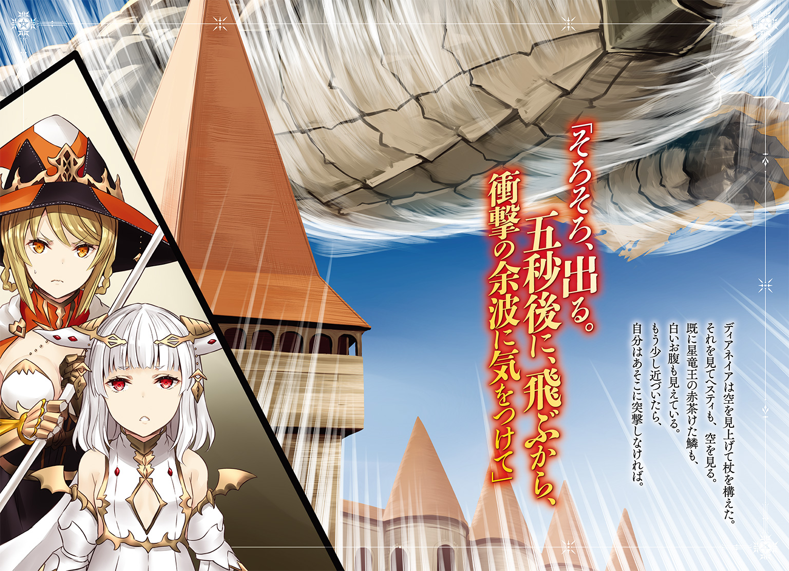
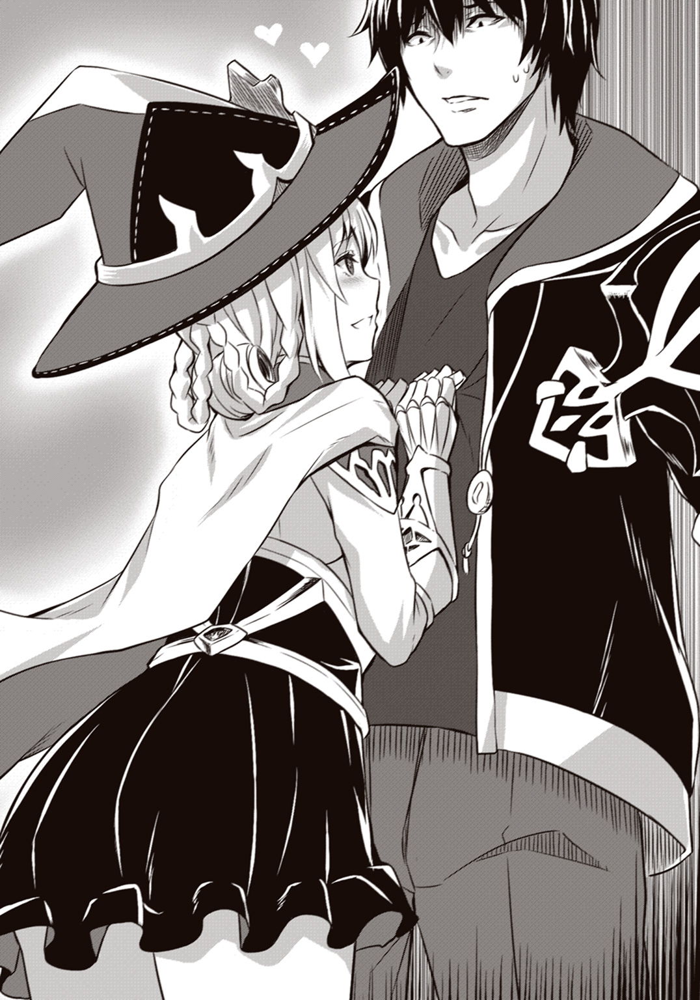

| 俺の家が魔力スポットだった件 3 ～住んでいるだけで世界最強～ | |
| あまうい白一 | |
この本は縦書きでレイアウトされています。
また、ご覧になる機種により、表示の差が認められることがあります。


 ダッシュエックス文庫DIGITAL
ダッシュエックス文庫DIGITAL
俺の家が魔力スポットだった件３
～住んでいるだけで世界最強～
あまうい白一
これまでのあらすじ
俺の家は世界有数の魔力スポットに建っていた。
ある日、その魔力を狙う魔女たちによって、魔力スポットである家と土地ごと異世界に召喚されてしまった。
だが、魔力スポットに数十年間住み続けた俺の体には異常な程の魔力が貯めこまれていたらしい。少し叫ぶだけで、ドラゴンですら吹き飛ばせる。そんな力を持っている俺が望んだのは――平穏で平和な生活だけだった。
あふれ出る魔力によって顕現した我が家の精霊、サクラから力の使い方を学びつつ、俺は異世界で生活を始めた。
時折、我が家の土地を狙って面倒なモンスターや、徒党を組んだ人狼が来ることもあった。
俺の家が召喚された場所は、《魔境森》といって、人狼が力で支配していた物騒な地域だったらしい。
けれども、そいつらは庭に仕掛けた罠や、魔力によって生み出されたゴーレムによって簡単に打倒して追い払えたので、全く問題にならなかった。
そして、家に来るのは物騒な連中ばかりではなかった。俺にこの世界についての知識を教えてくれる、ヘスティという幼女の旅人もいた。
彼女から常識を教えてもらったり、俺をこの世界に呼びだした魔女、ディアネイアと仲よくなったりしながら、俺は日常を続けていく。
だけど、そんな時に俺の家に竜の集団と、白の竜王を名乗る奴がやってきた。
白の竜王は俺の家に炎のブレスを叩きこみ、戦えと挑発してきた。
俺の安住の地を壊そうとする奴は、許せない。そう思った俺は自衛のために学んだ魔法を行使し、圧倒的な力で竜王を叩き落とした！
そこで俺は竜王の正体を知る。竜王はへスティだったのだ。彼女が今回の戦闘に至ったのは、竜と俺との全面戦争を回避するためだった。
王である自分が戦って負ければ、皆も引っ込むだろうから戦ったと。その事情を聞いた俺は、へスティを少し叱った。
「困っているならそう言ってくれ。せっかく話すチャンスがいっぱいあったんだから、相談しろよ」
その言葉にヘスティは頷き、どうにか彼女と和解することができた。それどころか、竜の住処に戻れぬ、という彼女に、我が家の一部を貸すことになった。
こうして和解後、竜王の友人、兼店子を得た俺は、再び平穏で気楽な生活を送れるようになった。
竜王の同居人を得た俺は、我が家で毎日のんびり暮らしていた。
ただ、魔力スポットである我が家を狙う連中はまだまだ続々と出てきた。
武装都市という近隣の街の冒険者が俺の家を狙ってきたのだ。
人間といえど物騒な奴らは追い払う。そんな思いで侵入者を排除しながら気楽で自由な日常を送っていると、新たな竜王――アンネが俺の家を訪ねてきた。
友好的な竜王である彼女が言うには、なんでも、巨大なダンジョンが我が家近隣の地下にできているらしい。
それを聞いたディアネイアは大慌てで対策に走り出す。
冒険者や騎士、魔女隊を街の防衛に当てていく。だが、ギリギリで間に合わず、モンスターの大群が街の周辺に発生してしまった。無論、俺の家にもモンスターがどんどん湧いてくる。ダンジョンマスターと呼ばれるダンジョンの主が生み出していたのだ。
ダンジョンマスターはディアネイアを圧倒するほどの強さを持っていた。ディアネイアが冒険者と共にダンジョンマスターに挑むも、敗北して死にかけるほどに。
だが、俺の安息の地を揺るがす奴は、どんな奴であろうと許さない。
俺はこれまでの生活で覚えた魔法と圧倒的な力を行使し、瀕死のディアネイアを助け出しながら、ダンジョンマスターを打ち倒した。
そして平和になった自宅で、まったりとした日常生活に戻っていくのだった。
その日の昼、俺は庭のベンチに横たわって日向ぼっこをしていた。
木漏れ日が体に染み渡っていくようで気持ちいいな、と思っていると、
「すごく、気が抜けているね、アナタ」
ヘスティが俺の横に座りながら、そんなことを言ってきた。
「いいじゃないか、ヘスティ。こうして一日中、ゆったりできるのは久々なんだから」
思えば、最近、動き過ぎたような気がする。
たまにはこうやって、何にも考えず太陽の光を浴び続けるのもいいじゃないか。
「......で、ヘスティは何やってんだ？」
体を起こしてヘスティを見ると、彼女は山盛りの魔石をテーブルに載せていた。
そしてひとつひとつ、見て確かめながら、選り分けていた。
「杖に使えるものと、使えないものの、選り分け」
「違いとかあるのか？」
「ある。大きければ、魔力を貯めこむから、使いやすい。小さければ、使い捨てるのがいい。だから小さい魔石は、魔法弾の推進剤などに、なったりする」
へえ、そんなこともできるのか。
「一応、武器関係なら、我、知ってる。あと、昔は、使い捨ての魔石を沢山使って、竜砲弾を、やって遊んでいたから、詳しい」
「それは本当に遊びなのか？」
「空を怖がって飛べない竜に、やったりする。これで推進剤にして、無理やり、飛ばせる。飛竜は飛べて一人前、だから訓練と遊びを兼ねてる」
逆バンジーみたいなものか。スケールが違うけれども。
「今回は大量だったから。飛ぼうとすれば、ものすごい距離を飛べる。アナタもやる？」
「いや、遠慮しておく。俺はそんな勇気を試す遊びよりも、こうして日向ぼっこでまったりしている方が好きなんでな」
「んー......、でもアナタ、ゴーレムを操って、周囲のモンスターをボコボコにしているけど、それでも、まったり、できてる？」
ヘスティの言うとおり、俺は庭に集まってきているモンスターたちを、ゴーレムで迎撃していた。
だがまあ、いつもの作業だ。
特に肩に力を入れるでもなく、寝転がったままできる。
「ん、結構、強そうなの、来ているのになあ。......あ、今、吹っ飛んだ」
俺が動かすゴーレムの他にも自立型のゴーレムがいて、自動迎撃してくれるシステムになっている。
だから、物凄く楽に片付けられる。
うん、こういうまったり感、いいわあ......。
なんて、思っていると、
「え......ちょ、た、たまには裏口から来ようと思っただけだ。私は何もしてないぞ!?」
「アレ？ なんか変な声が聞こえるな」
「ま、待ってくれ、ゴーレム！ 私はほら、武装解除しているだろう？ だから、あっ、装備を脱がさないでくれ。その服は駄目だって、こらあ！」
なんだか自立型ゴーレムとイチャついている魔女姫の姿が見えた。
「......あいつ、なにしてんだ？」
いつもの方角から来ればゴーレムの感知に引っかかったりしないのに、なんでわざわざ裏から俺の家に向かってきたんだろう。
無断侵入者として扱われるに決まっているだろうに。
一応、敵意さえ見せなければ、ゴーレムは武装解除するだけの設定にしてある。
だから、服を脱がされているのだろうけれども。
「さあ、分からないけど、止めなくて、いいの？」
「あー......そうだな。アイツだけを止める手段は作ってないんだよな」
自立型のゴーレムは一律で命令を下しているので、一体を止めると全員が止まってしまう仕組みになっている。
庭にまだモンスターがいる以上、自立駆動ゴーレムを止めるのは合理的ではない。
ディアネイアの周りにもモンスターがいるし、今止めるとかえって危ないだろう。
「ここらへんは構造的な欠陥だな。見つかって良かったけど、次に作る時は一体一体止められるような仕組みにしておこう」
「ん、分かった。......因みに、あと数分で全滅すると思う」
「そうか。じゃあ、それからだな」
「ちょ、誰か！ というか、ダイチどの!? た、助けて――!!」
モンスターが全滅した後、俺は自立駆動ゴーレムを止めた。
ディアネイアは半泣き状態でひん剝かれていたけれど、重要な部分の服は残っていたし、無傷だったから慰めるだけで済んだよ。
ゴーレムの分厚い腕から解放されたディアネイアは、切り株に突っ伏していた。
「ううう、酷い目にあった......」
「裏口から入ろうとするからだろう。何の用だ、半裸魔女」
「半裸にしたのは貴方のゴーレムだろうに......！」
ディアネイアは恨めしそうな眼で見てきながら服を着直している。
「次から調整はしておくが、できるだけいつもの方角から来てくれよ。いちいち命令を組みかえるのは面倒だからな」
「う、うむ、分かった」
言いながらしっかり装備をつけ直して、涙を拭ってからディアネイアは話し始めた。
「私は森の視察に来たのだ」
「視察って、なにかあったのかよ」
「ダンジョンの活性化が収まったとはいえ、注意しておいて損はない、と思ってな。治安維持の一環だ」
治安維持ねえ。
プロシアはモンスターの襲撃を受けたばかりだし、敏感になるのも分かるけど、この姫は相変わらず真面目だな。
「でも、なんで森の北の方から歩いてきたんだ？ そっちに、やばいモンスターでも出ていたのか？」
「いや、そうではない。ただ、北に本拠地を構えている戦闘ウサギの様子がおかしくてな。見に行って来たのだ」
「戦闘ウサギ、か......」
確か人狼と領地を分けあっている種族だったな。
俺は会ったことないけれども。
というか、何故か人狼たちが会わせようとしないんだよな。
そんな種族がいるなら一目見たいと言ったら、
『あのウサギどもに会わせたら、我々が王の奥さんにブッ殺されかねないので。どうかご容赦していただけると助かります......』
とかなんとか、訳の分からないことを言われてしまったし。一体どんな存在なんだよ、と思った覚えがある。
「それで、そのウサギがどうしたって？」
「なんだか集落の外に逃げ出しているらしいと、人狼のオサから報告を受けてな。見に行ったら、確かに、集落はもぬけの殻だった」
「なんか不味かったりするのか、その、戦闘ウサギが外に出ると」
聞くと、ディアネイアは数秒黙った。どう答えていいか迷っているような感じだ。
「不味いことは不味いんだが......ダイチ殿は戦闘ウサギの習性を知っているか？」
「会ったこともないんだから知るわけないだろ」
「そうか。ええと、戦闘ウサギにはナイトバニーという別の名前があってな。......その、時折、人間の男の精を吸っていくのだ。種族的に女性しかいない彼女たちは性欲で魔力を回復するタイプなんだ......」
はい？ この魔女姫は、なんて言った？
「男の精って性的な意味でか」
「うむ、そっちの意味でだ」
なるほど。どうやら俺の認識で間違いなかったらしい。
どんな習性の生き物がいてもおかしくはないと思っていたが、まさかそういう種族もいるとはな。
「......しかし、ナイトバニーだっけ？ なんでその名があるのに、戦闘ウサギって名前もあるんだ？」
名前が二つもあると混乱して困るんだけど。
そう思って聞くとディアネイアは指を三本立てて答えてきた。
「別名の理由は三つある。ひとつは子供に対する配慮。二つ目は、普通に戦闘でも強いことを示している。冒険者の二人や三人くらいは余裕で押さえつけてしまう力を持っているんだ。――そして、最後は......その、街の男どもの『夜の戦闘力』を根こそぎ奪い、自らの魔力を回復していく。その恐ろしい『夜の戦闘力』を表しているのだ......」
なんだろう。戦闘力って言葉が変な意味で聞こえてくるぞ。
うん、なんというか、ちょっと会ってみたくなってきたな。
色々な意味で。
「......ダイチ殿？ 表情が何だか変な感じになっているぞ？」
「気のせいだ。それで、集落から消えたっていう戦闘ウサギはどこに行ったんだ？」
「それを探している途中で、ここに来たのだ。集団で根こそぎ精を奪われると一大事だから、どうにか捕らえるなり、話を聞くなりしたくてな。......足跡を追ってはいるものの、見つからないし、どうしたものか......」
などと、ディアネイアと話していると、
「ねえ、ウサギってこの子たちのこと、だよね」
ヘスティが声をかけてきた。
「うん？」
そうして彼女の方を見ると、庭の外周部で、吹っ飛ばされて気絶しているモンスターをツンツンしている。
「モンスターに混じって、襲ってきてたから、一緒に倒れてるよ？」
言われて近寄ってみると、そこには、ウサミミとウサしっぽを生やした少女たちもいた。
「あ、マジだ」
見れば彼女たちは何故か皆、バニーガールのような際どい格好をしており、
「きゅう 」
」
目をぐるぐる回して、完全に気絶していた。
「......なんというか、仕事が早いな、ダイチ殿は」
「いや、仕事したつもりはないんだけどな」
ともあれ、俺を襲ってきたんだ。
ちょっとばかし話を聞く必要がありそうだ。
「ん......」
ゴーレムを片付けてしばらくした後、際どい格好をした少女たち――戦闘ウサギたちは目を覚ました。
「おう、起きたか」
「はっ......ここはっ......!?」
目覚めた彼女らは、青ざめた顔で周囲をキョロキョロとし始めた。
その中の一人、頭に王冠を載せて偉そうに見えるウサギ少女に俺は話しかけた。
「ちょっと話をさせてもらいたいんだが、いいか？」
「え......？」
俺の顔を見た瞬間、その一番偉そうなウサギ少女の表情が硬直した。そして、
「ひい......!!」
久しぶりの反応が来た。
じょばっ、と際どい格好の隙間から、お漏らしされたものが排出される。
他のウサギたちも腰を抜かしたまま、ガタガタと震え、怯え出している。
気絶している子さえいる。
......あー、懐かしいな。
「お、おい、なんで私を見るんだ！」
なんというか俺の周りにいるのは、俺に慣れてきた人や、竜などの強めの奴ばっかりだから忘れていた。
気を抜くとこうなるんだなあ。
「なんというか、もう、俺、初対面の人に会う時は、コーティングして魔力を抑え込んだ方が良さそうだな」
人に会うたび会うたび、これをやられたら堪らない。
コーティングの重要性は分かった。
ただまあ、それは後回しだ。今やるべきは、
「口は動いているみたいだが、喋れそうか？」
「ひ、は......はい......」
ウサギたちのリーダーらしい子は、震えながらも頷いた。
「一応聞くけど、アンタがリーダーでいいんだよな？」
「は、はい。戦闘ウサギの頭領で、レベッカといいます......」
震えはしているものの、しっかり会話ができる。偉そうなウサギを選んで正解だった。このまま話していこう。
「んじゃあ、レベッカ。なんでモンスターと一緒に俺を襲ってきたんだ？」
「お、襲うなんてとんでもない！ ......い、いえ、別の意味で襲おうとはしたんですが、それでも危害を加える気は全くないです！ 特に貴方様のような上質の魔力を持っている人に、そんなことできません！」
「本当か？」
「は、はい！ だから――私はともかく、後ろの子たちの命だけは、見逃してあげてください......」
ウサミミとウサしっぽをピンッと立てて、必死に訴えかけてくる。
この様子を見るに、噓じゃなさそうだな。
なら会話はできそうだけど、
「っひ......」
彼女たちは俺が少し動くたびにビクビクしている。
これじゃあ、落ち着いて話ができないじゃないか。
「ったく、安心しろ。別に俺は、お前らを殺したりはしないよ」
「ほ、本当、ですか？」
「ああ」
この森の奴らは、すぐに命のやり取りレベルまで考えを持っていく傾向にあるが、俺はそこまで物騒じゃない。
だから、彼女たちを落ち着かせてから話を再開する。
「んじゃ、なんで俺を別の意味で襲おうとしていたのかを聞こうか。てか別の意味ってなんだ」
「そ、その性的な意味です。貴方様の力を吸わせてもらえれば、集落全体の飢えがなくなる、と思いまして」
「飢え？」
このウサギたちは飢えているのか？
かなり豊満な体つきをしているから、そうは見えないんだが。
「食事の飢えではなく、精と魔力の飢え、です。私たちの集落にはお店があって、今まで沢山、プロシアの男の人が遊びに来ていたんですけれど、最近は全然来られなくなってしまって......精が足りなくなってしまったんですよ」
「それで、集落全体が魔力的に飢えてしまい、近場にある俺の家に来た、ということか」
「正確には、近場で、とても大きくてたくましい力を持っている貴方様のところに、です。多分、貴方様ほどの力があれば、集落にいる全員が吸っても問題なく、元気なままだろうと思って......」
レベッカは、ちょっと顔を赤らめて、俺の体を見つめながら言ってくる。
そんなに見られても何も出せるものはないんだが。
「というかディアネイア。王都では、そういう娯楽は禁止しているのか？」
「禁止はしていないぞ？ 森が危ないといっても冒険者どもは基本的に行くだろうし、なにが原因なんだ？」
ディアネイアが聞くと、レベッカは空を指差した。
「集落の入り口に構えていたお店が、空からの落石で潰れてしまったのです」
「空からの落石？」
この時期になると、石が降ってくるのか、この世界は。
まあ、魔法も普通にあるんだし、誰かが空高くにぶっ飛ばした岩が落ちてきたのかもしれないな。
「それで、店舗が物理的に潰れて、営業できなくなったからこの状態になっている、と？」
「はい......。その上、空から来た大岩は重くてどうしても、どかせないんです。落石現場は危ないので、同じ場所にお店も作れません」
ウサギたちはしょんぼりして言った。
「死活問題です。私たちはお店がないと、夜の業務ができませんし。再建する土地も費用もなくて......うう......」
涙目というか、半分くらい泣いている。
可哀相なのでどうにかしてやりたいが、しかしどうしたものか。
彼女たちが襲ってきた理由は、店が潰れたのが大きい。
たとえ借金をして新しい店を作っても、その場所が分かりやすくなければ人は来ないだろうし。
......って、そうだ。
「ここにちょうどいい奴がいるじゃないか」
俺はディアネイアに顔を向ける。
「うん？」
だが、彼女は首を傾げるだけだ。
自分の存在の価値に気づいていないのか。
「アンタ、プロシアの統治者だろ？ だったら街の土地を使って、こいつらに店を構えさせてやることもできるんじゃないのか？」
「あー......そういえば、そうだったな......！」
こいつ、今の今まで忘れていたのか。
「い、いやあ、ダイチ殿と会うときは大体、大魔術師モードだから、すっかり忘れていたよ。......そうだな。街で余っている土地はあるから、店を開くことは可能だな、うん」
「ほ、本当ですか!?」
ウサギたちの目が一気に輝いた。
「そうだな。ウチの町には娯楽が少ないからな。ガス抜き施設としてはちょうどいいかもしれない。問題を起こす者がいても冒険者が多いから取り押さえられるだろうし......ただ、なあ」
「何か問題があるのか？」
「うむ。国の事業ではないからな。費用を私が融資するわけにはいかんから、資金調達はどこかでやってもらわなければならないが、......アテはあるのか？」
言われて、ウサギたちは悲しそうな顔をして首を横に振った。
まあ、資金に心当たりがあるなら、もっとやりようがあるだろうし。どうにか再建しているだろう。でも、うん、そうだな。
「家は俺が作って、貸し出せばいいだろう」
「えっ!?」
「ダイチ殿が？ いいのか？」
「土や樹木を幾らか使って、家を建てるくらいは簡単だろうからな。俺が払う労力は、ほんの少し、遊びで使う魔力くらいだし」
材料はそこら辺にあるもので間に合うだろうから、特に損はない。
......それに、このウサギたちを路頭に迷わせていたら、また襲いに来る可能性もあるしな。
別に脅威ではないけれど、若干面倒だし。
だったら店の一軒くらい建ててやって、そこで働いてもらった方が楽だろう。
あと俺もちょっと行ってみたいし。
「ってわけで、店舗は貸せる。それでやれるか？」
「は、はい!!」
ウサギたちは、全員で、大きく頷いた。
「こ、このご恩は、一生、一族ともども、忘れません！ ありがとうございます恩人様！」
そう言って、ウサギたちは抱きついてきた。
すごくふわふわな感触だった。
なんというか、触れただけで、ウサギっていいものだな、というのが分かる。
うん、これは、確かに冒険者が嵌る気持ちも、分かったよ。
「ん......、なんか、家の最上階から、黒っぽい魔力が、出ている」
などと、ヘスティが言っているけど、気にしないことにした。
「で、作る場所はここでいいのか」
俺はディアネイアと共に、レベッカを連れて町外れの土地にやってきていた。
魔境森に通じる街道近辺の広い場所だ。
「うむ。ここならば、街の住人も立ち寄りやすい。立地的にも問題ないはずだが、どうだろう。レベッカ殿」
「あ、はい！ こんな街に近い場所を頂けるなんて有り難いです！」
「良さそうだな。んじゃ、家を建てるか」
言いながら地面を触っていると、ウサギのリーダーが頭を下げてきた。
「ほ、本当にありがとうございます恩人様......。土地だけではなく、店舗までも融通してくださって......！」
「礼はきちんと店ができてからにしてくれ。――ちょっと広いくらいの一軒家でいいんだよな？」
「は、はい。大丈夫です」
ここに来るまでに、どんな建物が良いかと希望を聞いた結果、一軒家ほどの大きさがあれば十分に営業できると言われた。
だからそのサイズで作ってしまおうと、俺は手にしていた袋からリンゴを取りだし、地面に転がしていく。
その行為を見て、レベッカは首を傾げた。
「あ、あの......何をなさっているのです？」
「いや、家を作るんだけど？」
「え？」
「まあ、少し待ってな」
俺はリンゴを十数個ほど地面に埋め込んでから、家の完成図をイメージする。
大雑把に間取りも決めて、とにかく広い家を想像し、
「樹木よ。伸びて構築しろ」
言葉を吐いた瞬間、リンゴの実が樹木へと成長した。
そのままリンゴの樹木は変形し、組み上がっていく。そして――
「一から建物を造るのはあんまり経験がなかったけど......とりあえず完成だな」
一分も経たないうちに、六ＬＤＫの立派な一軒家が建ち上がった。
「こんなんでどうだ。ウサギのリーダー」
「え、えっと、じゅ、十分すぎるくらい、大きいです」
レベッカからも高評価が出た。どうやらこれで問題ないようだ。
......家の建築も試せたし、いい経験になったな。
そんなことを思っていたら、ウサギが震える声で尋ねてきた。
「し、しかし、あの一瞬で、どんな力を使ったのですか、恩人様。私の知っている建築用の魔法とは、かけ離れているのですが......。呪文もほとんど発せられていませんでしたし」
「普通にイメージして木々を変形させただけだよ」
この前、家を組み替えて改良した経験が役に立った。
「内装にもほとんどこだわってなくて、樹木で大きな箱を作って繫げたようなもんだから、簡単だよ」
「かっ、か、簡単ですか......」
ウサギは震えながら驚きで目を見開いていた。そんな彼女に同意するかのように、ディアネイアもうんうんと頷いていて、
「なんというか、色々と予想以上すぎるぞダイチ殿。私も慣れてきた方だが、やはりこれはおかしいと思うな」
おかしいって言われてもできたものは仕方ないだろう。
「それに時間がかかるよりは早くできた方が良いだろ？」
「確かにそうだけれども。気楽に言ってくるダイチ殿は凄まじいな......。思わず身震いしてしまったよ」
ディアネイアもなんだか震え始めているが、なんにせよこれで問題は解決だろう。
「それじゃ、レベッカ。ここで気楽に商売してくれ」
そう告げると、レベッカは我に返ったらしい。俺の方をまっすぐ見て、そして深々と頭を下げた。
「あの、その......改めて、ありがとうございます恩人様！ このご恩は私たちの一生をかけて返させていただきます!!」
「まあ、うん。そこも気負わずにな。ほどほどに頼むわ」
「はい！」
――そして後日。
王都プロシアの町外れに、『ウサギの酒場』がオープンした。
屈強な男たちが通い続ける名店となったのは、それからすぐのことであった。
ウサギたちの問題を解決してから数日後の朝。
俺は庭の椅子に座って、頰杖をついていた。
「まいった......」
するとヘスティがやってきた。
「あれ、どうかした？ アナタが、悩ましそうにしているなんて、珍しい」
「いや、俺が投資したウサギたちの店が好評でな。すげえ売上があるらしいんだけど、『賃料です！』とか言って渡してきたんだよ、あいつら」
俺は、足元にある銀貨の袋を見る。
中には百万ゴルドが入っている。
つまり賃料として百万円渡されたわけだが。
「......それは、まあ、確かに、凄いね」
数日の売り上げで、これを稼いだらしい。
一回の利用料は平均で一万ゴルドとそこそこするが、冒険者の行列ができている。
あのウサギたち、かなりやり手のようだ。
「稼げているなら、いいこと、じゃない？」
「それ自体はな。でも、俺はこんなにいらないって言ったんだけどなあ」
あれだけ程々でよいと言ったのに。
ウサギたちが必死に渡してきたのだ。
『これは私たちが恩人様にできる、せめてものことです！ 足りないのであれば、この命も追加してお渡しします!!』
なんて言ってくるものだから、貰った。
貰えるものは貰う主義だが、命は貰いたくない。
というか、この森の連中は本当に命とその他が直結し過ぎである。
「ん、それで、お金の袋が、なんでここに置いてあるの？」
「金庫部屋に入らない」
「ああ......」
率直に言ったらヘスティは納得の頷きを返してくれた。
そう、今までの金は、金庫部屋を作って、そこに放り込んである。
けれども、既に二階層分がパンパンになっているんだ。
ヘスティやら人狼に、かなりの額を渡しているのだが、それでも増えていく。
そろそろ、使っていかないといけない。
でないと、俺の家がただの金庫タワーになってしまう。
「でも、アナタは、なにか、買うもの、あるの？」
「ない。サクラに欲しいものを聞いても、特にないって答えられたんだよな」
誰に似たのだか、本当に物欲がない。
ただ、俺も似たようなもので、金の使いどころがない。
「趣味にお金を使ったりしないの？」
「あー、趣味はあるにはあるんだが......」
家の庭に果樹園を配置して楽しんだり、ゴーレム作りを楽しんだり、モンスターから得た素材で弾丸を作って、ゴーレムを武装させたりする趣味はある。
ただ全く、金がかからないんだよな。
「......ああ。ゴーレムが、日に日に強くなっていってるの、アナタの趣味の結果だったんだね......」
ヘスティが驚愕しているが、楽しいんだから仕方ない。
最近はゴーレムを巨大化することにも成功しているし、ゴーレム作りの熟練度もかなり上がった。
......やればやるほどゴーレムの出来が良くなっていくんだから、止められないんだよな。
ともあれ、そんなわけで金がどんどん増えるんだよ。
この前は人狼に押しつけようとしたけれど、全力で土下座されたので渡せなかった。
そして頼みの綱のへスティ投資も、
「ヘスティは――」
「我、もう、十分すぎる」
「――うん、分かっていたよ」
資金は潤沢なようだ。
これ以上の融資は要らないらしい。
「俺があのウサギたちの店で使うってのもあるんだが、そこまで高くないんだよな、あそこ。食事をとったりして、できるだけ使おうとはしているんだが」
言うとヘスティが意外そうな目でこちらを見てきた。
「......んん？ 価格を知っているってことは、......もう行ったの？」
「ちょっとだけな」
サクラにはちょっと黒い笑顔を向けられたけれども、説得できたので特に問題はないだろう。
たまに黒い魔力っぽいものが出ているけれど。
......まあ、それは後々もう一度説得するとしてだ。
「結局、貯めておくしかないのかね、これ」
場所もあるし、貯めておくのはできるけど、できれば消費したい。
そんなことを思いながら、ごろん、と横になっていると、
「ダイチさまー！ 姉上さま――!!!」
「......げ」
アンネが走ってやってきた。
それを見て、ヘスティが露骨に嫌そうな顔をして、俺の背中に隠れようとしたが、
「姉上さま姉上さま、おはようございます――!!」
「も、もう、だ、抱きつくな！」
あっという間に捕まって巨乳でグリグリされている。
彼女と一緒にいると、ヘスティの色々な面が見られて楽しかったりするのだが、それは置いておこう。
「どうした、アンネ。何か用か？」
「あ、はい！ 実は先ほど、わたしのお店が完成しまして！」
ああ、例のアイテムショップか。
建造中だとは聞いていたが、もうできたんだな。
「はい。それで開店記念に、ダイチさまや姉上さま、サクラさまをご招待しようと思いまして」
「それで、ここまで走ってきたと？」
「はい！ あと、不眠不休で、店内を改装したので、そろそろ姉上さま成分か、はあ......はあ......ダイチさまのお叱り攻撃を補給しないと、倒れてしまう、ので、朝から頑張ってきました!!」
滅茶苦茶でかい声で言ってくるけれども、なるほど。
もしも俺が昼まで寝ていたら、これは確かに少し不機嫌になって、軽く叱っていたかもな。
うん、期待を外して良かった。
「うう、悲しいので、姉上さまのグリグリだけで補給します」
「......うざい......!!」
アンネはヘスティといつものやり取りをして、いい感じの笑顔になっていることだし。何の問題もないな。
「それよかアンネ。店が完成したってことは、もう売り物はあるのか？」
「はい。仕入れもしましたし、作成もしましたから、完璧ですよ。......手持ちのお金を全部はたいちゃった上に魔力も倒れる寸前まで絞り出しましたので、大変でしたが」
アンネはめちゃくちゃ軽い調子で言ってくる。
竜王なのに、こんな後先考えない生き方していて大丈夫なんだろうか。
「......向こう見ずに見えて、アンネはなんとかしてしまうから、平気」
「そうです！ どんなに消耗しても、姉上さま成分で、魔力を回復して生存できるので大丈夫です！」
「おう、そうかい......」
竜王が言うには大丈夫らしい。ならば気にしないでおこう。
それに、売り物があって、金がないというのならちょうどいいや。
「それじゃ、何か買いに行くわ」
「ええ？ 良いのですか？ ダイチさまなら言っていただければ、無料でお譲りしますのに」
「いや、ちゃんと払うことに意味があるんだ。だから、案内してくれ、アンネ」
「あ、は、はい！」
そうして、俺たちは、アンネの店に行くことにした。
俺とヘスティはアンネの店を訪れていた。
場所は森とプロシアの中間で、街道のすぐ傍にある。
外側は普通の平屋に見えるのだが、内部では緑や赤や青など、色とりどりの品物が綺麗に陳列されていた。
「へー、できたばっかりだって聞いていたけれど、それにしても綺麗だな」
「見てくれだけでも立派にしないと意味がないって、姉上さまから教わっていますからね！」
「ん......そういえば、言ったこと、あったね」
ああ、そうだったのか。
確かにヘスティの作る杖は、どれも格好いいけど、そんな主義があったんだな。
「はい。それに広く作りましたから、いつでもお茶を飲みに来てもらっても構いませんよ！ お茶以外の予定でも、わたしに魔力をぶつけに来るのでも、全然オッケーですが!! ああ、絶対に気持ちいいですよ、そんなの......」
顔を赤くしてハアハアしている竜王は放っておくとして、いい店だな。
見たことのないアイテムも多いし、面白い。
「今度、サクラを連れて来てみるかなあ。何か欲しいものあるかもしれないし」
今回、彼女も誘ってみたのだが家の掃除があるということなので、結局、ヘスティと二人で行くことになった。
まあ、サクラが行きたいと言った時に、俺が案内すればいいだけなので、今日は今日で買い物をしよう。
「というわけで、アンネ。そろそろ夢の世界から戻ってこい」
「はっ......そ、そうでした。まずお買い物ですね」
「ああ。でも俺はアイテムを買うのは初めてだから、どれがどんな効果を持っているのか教えてくれ。もしくはオススメの品を見繕ってくれ」
「ええと、ダイチさまは何が欲しいですか？」
欲しいもの、は特にないけれども、そうだな。
逆に考えよう。使えないものはいらないんだ。だから、
「普段から使えるものが良いな」
「普段から......でしたら、これなんかどうでしょう」
自信満々に、アンネは一個の瓶を取り出してくる。
「土に埋め込んだ瞬間、急激に成長して、命令を聞いてくれるゴーレムの種！ 雑用は全部任せられますよ!?」
「あ、すまん。それ、もうできる」
というか、日常的に俺はゴーレムを作成している。
だからそのアイテムは使わないな。
「あっ、そ、そうでしたね。で、では、この空中にいるモンスターをまとめて撃ち抜ける竜のボウガンとか......」
「すまん。それも、もうある」
「え、えっと、えっとお......」
いかん、涙目になっている。
これは、俺が買い物に来たのは失敗だったんだろうか。
「んー、普通は、できないことを、アイテムで補助するけど、アナタ、できること多いから。難しいよ？」
「そうだなヘスティ。今、それを学んだよ」
もしかして、物欲がないのはそういうところから来ているんだろうか。
ともあれ、何か買わなきゃここに来た意味がない。
「......そうだ。この前みたいな、ポーションがあったら、それをくれないか？ できるだけ高いのがいい」
「た、高いのですか？ では、この魔力を回復するポーションなどはいかがです!? 一カ月に一本くらいしか生産できない貴重で高級なものなのですが......!!」
アンネは渾身の説明をしてくれる。うん、有り難いんだけどさ。
「......すまん。それを使うならリンゴを食うよ......」
その役目を果たすものが、もうあるんだよな。
「えっと......もしかして、わたしのアイテム、役立たずです......？」
アンネはポロポロ涙をこぼし始めてしまった。
いかん、これは良くない。
「あ、いや、そんなことないって。そう、体力を回復するポーションなら、俺も使えるし！ むしろそういうのが欲しいし」
「で、でも、何の変哲もない回復ポーションしかないですよ？ わたしが作成しましたけれども、そこそこの効果しか出ませんし、面白みがないですよ？」
「いや、面白みはなくて良いんだよ」
日用品は使えれば何でもいいんだ。
「えっと、ポーションには等級がありまして、一応、最高級ポーションもありますけど、どれを買います？」
「一番高いのはいくらだ？」
聞くと、アンネは店の奥から金色の液体が入った瓶を持ってきた。
「......ええっと、これらが、わたしの血液と内臓の一部を用いて作ったもので、ひとつ十万ゴルドです」
「んじゃ十個」
どさっとテーブルの上に銀貨の袋を置いた。
「ひゃあっ!?」
アンネが驚いて腰を抜かしている横で、俺はポーションの瓶を取る。
銀貨の袋が瓶十個に変換できた。
うん、これは貨幣よりも軽いし持ち運びしやすくて楽だな。
「えっと......い、いいんですか!? こんな、大金ですよ？」
「まだ金はあるし、構わないよ」
「そ、そうですか......武装都市でも高すぎると言われた最高級ポーションだったのに、まさか売れるなんて......」
ああ、そうだったのか。
なら、在庫処分もできて一石二鳥だったな。
「あとは、なにか使えそうなものはあるか？」
「え、ええと......あとは、これくらいですかね......あんまり人気がないのですけれど......」
そう言って、彼女が取り出してきたのは、一本の巻物だ。
白く光る紐で、留められている。
「これは？」
「テレポートスクロールです。紐解くと、指定した場所に転移する魔法が発動します。テレポートの魔法を覚えていなくても、使うことができるのです」
「へえ、便利じゃないか」
要するにあれだろ。ディアネイアが使っているような移動を、誰でもできるようになるんだろ？
「良いアイテムじゃないか。なんで売れてないんだ？」
「これは、使い捨てなんです。テレポートはすごく調整とコントロールが難しい魔法で、使い捨てのスクロールに変換するだけでも工程が多くて。だからとても高価で、一度の移動の費用対効果に見合わないというか」
へえ、じゃあ、テレポートを使えるディアネイアは意外と凄かったんだな。
「で、これ、お一ついくら？」
「えっと......ひゃ、百万ゴルドです」
なるほど。そりゃ良い値段だ。
「んじゃ買った」
足りなかった時用の予備で持ってきた、銀貨袋を置く。
「うひゃああ!?」
テーブルにどさどさ積まれた銀貨袋に、アンネは目をまんまるにしていた。
うん、良い儲けになったみたいでなによりだな。
「そして俺もちょっとは消費できたから、有り難いな」
「ん、でも、あのウサギたち、毎月持ってくるでしょ？」
賃料とか言っていたから、確かに毎月来そうだ。
「でもまあ、またここに来て使えば良いだろ。アンネ、それでもいいか？」
完全に脱力してしまっているアンネに聞くと、彼女はゆっくりと頷いた。
「あ、は、はい。お待ち、しております」
「ありがとうよ。それじゃあ、今日のところは帰るとするか」
考えてみれば、これがこの世界に来て初めての買い物だった。
......ちょっとだけ、楽しかったな。
そんなことを思いながら、魔法の巻物一つと、ポーション十個を入れた袋を持って、家に戻るのだった。
昼間の執務室。
ディアネイアは昨日の夜から書類とにらめっこしていた。
記載されているのはモンスターの活性化による街の被害や修復状況、、来訪者数の変化など、街の情報についてだ。
更に、街の拡張状況などが記載された書類も同時に来たので、確認していた。
......私には、政務の才能はあまりないが、街の現状確認はしなければ。
これくらいの情報は頭に叩き込んでおかないと、問題があった時、対応策を考えることができない。
この街を統治する大魔術師として、問題に対応できないのは駄目だ。
......街を守り続けるために、頑張らねばな。
そんな思いで街の開発状況を見ていたのだが、
「ん？」
ディアネイアが声を上げると、向かいの机で書類を整理していた騎士団長が首を傾げた。
「どうかなされましたか、姫さま？」
「街の西部の調子が良いんだ。他の地域よりも、金回りがいい」
他の地域に比べて二割増しで修復が早まったり、拡張されていたりする。
なにか景気の良くなることでもあったのだろうか。
「そうですね。報告書によれば、どうやら、数点の店舗から物凄く金が流れていったらしく、その周辺から経済が活性化したらしいです」
「出所はどこだろうな」
「ええと、アンネ・タイドラ様の店と、戦闘ウサギの店が影響している、との報告を受けましたが」
「......ううむ」
ウサギの店はともかく、アンネの店は、そこまで人気ではなかったはずだとディアネイアは思う。開店と同時に見に行ったが、店ができてすぐということもあり、客足が良くなかったのは記憶に新しい。
......売っているのは良いものなんだが、どうにも怪しくて高い商品が多かったこともあるし。
竜王の品物だから仕方ないのかもしれないが。
それを買うような上客に出会えたんだろうか、なんて思っていると、
「それと『これは、あの方から貰ったお金ですから、こちらにも回さなければ』と言って、周辺の店でお金を使いまくっていたとの情報が。この街に移住するのにかなりの額を使ったはずですが、景気が良くて何よりですね」
「あっ、うん。なるほど」
騎士団長の言葉で何となくわかった。
「姫さま？ 何か気づいたことでも？」
「気づいたというか、結論が分かったというか」
要因を察した。恐らく、だが、
「......まあ、ダイチ殿だろうな」
「......なるほど。あの方ならば、ありえますな」
騎士団長も頷いた。
というか、ほぼ確定だろう。
これだけの金を簡単に動かせる者など、この街にはほとんどいない。
「これはまた、お礼に行かなければいけない案件だな。騎士団長、お礼の品の用意を頼む」
「はっ......ですが、まだ渡していないものが、溜まっておりますよ？」
「それも含めて、順々に渡すさ」
彼には、何度命を助けられたか。
そして何度街を守られたか、分からない。
だから、思いつく限りの礼をしようと思っているのだが、時間的制約もあり、なかなか行けていない。
「今日は街の視察があるから、明日、伺うことにするか。それまでに準備を頼む」
「了解しました」
「さて......それでは、今日の業務の続きだ。街に行ってくるよ。ダイチ殿が動いた影響を見るのも、必要なことだしな」
そして、ディアネイアは、軽く装備を整えて街へと向かうのだった。
アンネの店は、微妙に客は入っているようだが、やはり大繁盛、とまではいっていないようだった。
訪ねると、お茶菓子を出してくれるくらい、暇らしかった。
......まあ、開店したばかりだしな。
時間が経てば色々変わっていくだろう。そう思って、ディアネイアはもう一つの新しい店を視察する。
「こっちは、今日も行列ができている、と」
ウサギの店では連日、行列ができている。
プロシアの冒険者どころか市民にも大人気なようだ。
「この店が儲かれば税収も増えるので、かなり有り難いな」
男性市民の夜の戦闘力が奪われていそうだが、この店ができたことでちょっとだけ治安もよくなっている。
良いガス抜きになっている証拠だろう。
「なにより、健全な店だから、問題も起きにくいだろう」
街の環境も良くなり、市民も楽しめる。
そして経済が活性化し、街も拡張されていく。
半分以上が、あの森の魔力スポットに住まう彼が要因になっている。
......本当に有り難い話だな。
自分自身も、彼を思い出すたびに、心の底が熱くなって、やる気も出るし、あとでちゃんとお礼をしなければ。
なんて考えながら、ディアネイアは森の方へと向かっていく。
「さて、次はウサギの集落だ」
ウサギたちが逃げてきた理由をこの目で確かめなければならない。そう思って先日、ウサギたちと落ち合う約束をしていた。
......原因不明の落石があったのであれば、街のためにも調査しなければな。
そんな思いと共に、ディアネイアはテレポートで森の奥へと一気に足を進めていく。
「お待ちしておりました、ディアネイア様！ ようこそウサギの里へ！」
魔境森の北部にある戦闘ウサギの集落を訪れたディアネイアは、レベッカの歓迎を受けていた。
「ようこそです、ディアネイア様！」
正確にはレベッカだけではなく、集落にいるウサギたち数十名から歓迎されていた。
「む、ほんの少し前までは、集落は蛻の殻だったはずだが......住人として戻ってきているのか？」
ディアネイアの目の前には、ウサギたちが楽しそうに生活を営む光景が広がっている。
この前の暗く寂しい雰囲気とは大違いだ。
「元々、私たちは店と集落を行き来する形で生活していたのですよ。そして、恩人様に店を提供していただいたので、この生活形態に戻れたのです」
レベッカはそう言ってほほ笑んだ。
彼女だけではなく、集落全体が明るい空気に満ちている。
「本当に、恩人様とディアネイア様には感謝しております。もしもディアネイア様が夜のサービスをお望みであれば全身全霊をもってお相手させていただきますね！」
「う、うむ。わ、私はそういう趣味を持っていないのでな。気持ちだけ受け取らせてもらおう。それで、今回来た目的だが......」
「あ、お店の跡地まで案内するのでしたよね。では、こちらへどうぞ」
そうしてディアネイアは落石の現場へと案内された。
すると、そこには、
「これが店と、落石、か。......でかいな」
大きめの店舗だったモノを、灰色をした巨大な物体が潰していた。
想像以上に、現場は酷い有様だ。ただ、店の潰れ方よりも気になった点がある。
......これは、本当に岩なのか？
店を押しつぶしている物体はとても岩のようには見えなかった。
岩にしては、やけに表面がつるつるしているし、格子のような模様も見える。
叩いてみると、カーン、という軽い音が返ってきた。
「金属......でもないよな。何でできているんだ、これは」
ディアネイアの知識にはない。
だが、こんなものが落ちてくること自体が、脅威なのは確かだ。
「この大きさの物が、もし街に落ちてきたら、それこそ大変だぞ......」
そして、この物体に触れていると、ちょっとだけ、嫌な予感がした。
なんら確証のない、本能的なものだが、これまで何度も命の危機にさらされてきた自分の体が言っている。だから、
「念のため、少し採取して、研究班に調査してもらうか」
研究班は優秀だ。
調べればすぐに結果は出てくるだろう。
......面倒なことが起きないでほしいが。
自分の嫌な予感は杞憂であってほしい。
そう思いながら、ディアネイアは城へ戻っていく。

「んん？ なんだこりゃ」
午前中、家の改造をしようと、サクラと同期していると、地下に奇妙な空洞があるのに気づいた。
「主様、どうかなさいましたか？」
「いや、なんだか家の直下にでかい空洞があるんだけど」
「空洞ですか？ ああ......本当ですね。主様がダンジョンマスターの魔石を埋めてから、大地が変動しているとは気づいていたんですが、空洞になっているとは」
どうやら、サクラも知らなかったらしい。
同期して、集中しなければ分からないくらい地中の奥深くのことだからな。ある意味、当然か。
「ただ、真下が空洞になっていると少し不安だな。調査の意味も兼ねて潜ってみるか」
「あ、ではお伴します。もうすぐお昼ですし、お弁当も持っていきましょう」
「おう、俺はヘスティに一声かけてくるよ。一緒に来るかもしれないし」
そうして、俺とサクラは各々で準備を整えたあと、庭に穴を空けた。
「じゃあ、行くぞー」
「はい、主様」
「ん、了解」
そうして俺たち三人は、我が家の地下へと足を踏み入れていった。
自宅を改造する要領でやれば、地下の空洞まで道を作るのも簡単だった。
庭から階段状に穴を空けていくと、一分もせずに空洞に辿り着いた。
そして、俺はそれを見た。
「これは......すっげえ広いな」
「本当ですねえ」
想像以上に大きい空洞が、地下に広がっていた。
天井は高く横幅も広い。
そして、ライトで照らされているわけでもないのに、かなり明るい。だから、遠くまで曲がりくねった道がよく見えていた。
「まるで、ダンジョンみたいだな、これ」
なんて呟いたら、隣にいるヘスティがこくりと頷いた。
「ん、間違いじゃないよ。これ、ダンジョン。ダンジョンマスターの魔力で、精製されたっぽい」
「え？ そうなの？」
じゃあ、モンスターなどがいるんだろうか？
「そういうわけじゃない。でも、ダンジョンであることは、壁面を見れば、分かる」
言われて壁面を確認すると、キラキラと光る石のようなものでできていた。
天井も床もそうだ。ただの土じゃない。
「これ、魔石が混じっていますね。ところどころ結晶化もしています」
「お、マジか」
魔石混じりの壁が光っているから、ライトがなくても明るいのか。
「そう。魔石で構成された壁。それが、ダンジョンの条件の一つ。モンスターがいるかどうかは、あんまり、関係ない」
「はあ、なるほどなあ」
でも、これだけでかい空洞が地下にあって大丈夫なんだろうか。
地盤の強度が低かったら、沈下するんじゃないかと心配になる。
「それは大丈夫ですよ、主様。私という家は、魔力で地盤を強化しているので、まず崩れません」
「ん、サクラの言うとおり。それに、この魔石混じりの壁は、本当に強固。削れても、自己再生する」
と、ヘスティが壁面を少し削った。
キラキラする石がポロリと落ちてくる。
だがその凹んだ部分はすぐさま盛り上がり、修復されていく。
あっという間に元通りだ。
「ね？」
「本当だ。これなら問題ないな」
「というか、ダンジョンは、こういう性質を持つから、自然資源のような扱いを受ける。魔石が、いっぱい取れる」
ダンジョンは鉱山みたいなものなのか。
ヘスティの顔はどことなく嬉しそうだった。
そして俺も、少しワクワクしていた。
......こういう洞窟みたいな所は、ちょっとだけ、探検してみたかったんだよ......。
そんなことを思いながら、俺はサクラたちと共にどんどん深く潜っていく。すると、
「......なんか暑いな」
周囲の気温が上がってきたような気がする。
微妙に汗ばんでくる。
「多分、魔力が、熱に、変換されている」
「そんなこと、自然に起きるのか？」
「我の、ブレスも似たような、もの――!?」
言葉の途中で、ヘスティが足をぴたりと止めた。
そして、その場から動かなくなった。
「どうした？」
「これ以上は、我、無理かも。進めない。あそこに、魔力が濃すぎる、ものがある」
と、僅かに声を震わせながらヘスティは前方を指さした。
そこには、湯気が立つ液体が溜まっていた。
「んー？ 魔力が濃いとか、俺にはよく分からないんだけど。近づかない方がいいか？」
「あ、じゃあ、私が行って確かめてきます。毒性はないみたいですし」
そう言って、サクラはなんでもなさそうに進んで行く。
そして、液体を見て、こちらに手を振ってきた。
「主様ー。これ、温泉ですー」
「え？ マジか!?」
サクラの後を追って、液体を見る。
すると、地中からこぽこぽとお湯が湧いているのが分かった。
「温度は――四十度もないですね。弱アルカリ性で、人体への害もありません」
サクラが感知した限りでは、ぬるめの源泉のようだ。
「火山もないのに、よくできたもんだな」
「魔石の熱で温められたのでしょう。それゆえに、高濃度の魔力が液体中に混じっています」
「魔力が入っているお湯に体を突っ込んでも大丈夫なのか？」
「主様なら問題ないです。ただ、普通の人が触れたら皮膚がただれるか、剝がれるかと」
結構怖いことになるな。
「そう考えるとこの温泉、使いづらくね？ いや、別に俺たちしか使わないけれどさ」
体にどんな影響があるのか分かったもんじゃないだろう。
「はい。原液のままでは、浴びられる人は限られてきますからね」
「ん、だから、我、それ無理。近づけない」
こちらの声を聞いていたのか、ヘスティが後じさりしながら言ってくる。
そうか、ヘスティがその場で止まったのは、このお湯が原因か。
「竜王の皮膚でもダメってことは相当なものなのか」
「地中にあることで、龍脈にも近づいていますから、魔力が少し濃いですね」
効能が強すぎるってやつなのかな。
ただ、それなら原液のままじゃなく、薄めれば多少は使い道もあるか。
「はい。薄めたこれでご飯を炊いても、美味しくなりそうです」
「ふむふむ。使い道は結構ありそうだな。とりあえず、必要があれば庭に引っ張れるように、水道管みたいなものは作っておこう」
「はい、お手伝いしますね、主様」
そして俺は、伸長したリンゴの木を水道管代わりにして、庭の一角に埋め込んだ。
流石にそのまま源泉を出すと毒になるのが分かっているので、まだ地表には持ってきていないが。
あとで薄めたりして露天風呂でも作ろうかな。
ともあれ、そんなわけで、地下に魔石のダンジョンと温泉の源泉ができたようだ。
夕方。俺が庭でゴーレムを弄っていると、ディアネイアが訪ねてきた。
「ふう、久しぶりに来られたが、やっぱりダイチ殿のところは落ち着くなあ」
そして彼女は、いつも通り俺に金の入った袋を渡すと、サクラが出したお茶を飲んでくつろいでいる。
「俺の家は喫茶店じゃないんだけどな」
「す、すまない。つい、貴方の前だと普通の......一人の魔法使いになれるので、気が抜けてしまってな」
「うん？ 何を言っている」
「――あ、ああ、いや、気にしないでくれ。そ、そうだ！ 店と言えば、ウサギの家、かなり繁盛しているようだぞ。ダイチ殿にお礼も言っていた」
「おう、それは知っているさ」
この前もウサギたちが来ていたからな。
一週間のうちに何度も何度も金を渡しに来られても困るので、多すぎる分は丁重にお断りしていたりする。
「というか、ディアネイアも金を持ってくるの、そろそろ終わりにしていいんだぞ？」
「いや、しかしだな。私には、それ以外に、貴方に渡せるものを持っていないのだ。装備品や、アイテムも考えたが、貴方に見合うほど価値のある物はないし。私の気持ちを示せるものが他にあれば、一番いいんだがな」
俺としては別にアイテムも金も、そこまで要らないんだけどな。
......貰えれば嬉しいけれどさ。
そんなことを思いながら、ゴーレムを弄るための工具箱を片付けていると、
「む......？ ダイチ殿？ 工具箱の中に入れてあるスクロールはなんだ？ 貴方がそのような物を持っているなんて珍しい」
「ん？ ああ、これか。アンネの店で買ったんだよ。テレポートのスクロール」
「て、テレポートだと!?」
普通に言っただけなのに滅茶苦茶ビビられた。
この反応は一体どうしたんだ。
「いや、貴方のゴーレムが合わさると、ちょっととんでもない戦略が出来上がるからな。転送先で大暴れさせるとか......」
「うわ、えぐいことを考えるな、アンタ。でも、そんなことはしないよ」
「そ、そうか、良かった。貴方のゴーレムは一体だけでも戦略級だから、色々と想像してしまうのだ」
俺はそんな軍事的な運用をしたいと思ったことは一度もないんだがな。
「って、そうだ。テレポートを使うのに注意すべきことはあるのか？ これ、どうやって使うのかも分からないんだけど」
いざ使って、土の中にいる、などというのはシャレにならないからな。聞いておきたい。
「使い方は簡単だぞ？ 開くと、スクロールの紐に書いてある登録個所に飛ぶだけだ。そして、注意点は、スクロールで行うテレポートでも、発動条件があるから気をつけないといけない、ということだな」
「条件？」
「ああ。テレポートの行使条件は一度その場所を訪れたことがある、というものだ。飛ぶ場所の空間を知っている必要がある」
へー、そんな手間がいるのか。
「一度、訪れなきゃ駄目なのか？」
「うむ。それは絶対だ」
ということは、あれだな。
......俺と相性が悪いかもしれない。
「定期的に訪れて場所のチェックや管理もしておかないと、壁の中に入ることもあるからな。結構大切だ」
「俺、あまり外出をしてないから、テレポートは駄目かもしれないな」
イメージでだいたいのことはできていたが、ここにきて不得手が出てくるとは。
「まさか、魔法の中に外出が必須なものがあるなんてなあ」
そういう意味では、ディアネイアは凄かったんだな。かなりの場所にテレポートできるみたいだし。
「まあ、貴方の場合はヘスティ殿がいたり、そもそもゴーレムで移動できたりするから、テレポートがなくても特に問題はないだろう。テレポートの利点は距離と時間の短縮と体力の保持ができるところだが、貴方は他の魔法で満たせてしまうから、むしろうらやましいくらいだ」
そう言われても、あんまり実感はわかないんだけどな。
ともあれ、スクロールを買ってしまったのだ。俺以外の誰かに渡すか、練習がてら、使えるときに使ってみよう。
「――あ、ああ、そうそう。移動の件で思い出したが、ダイチ殿。少し先の話になるのだが、今度、プロシアで祭りが行われるんだ。だから遊びに来てみないか？」
「祭り？」
「ああ、街ができて百年目を記念しての催しが数日かけて行われるので、賑やかになるはずだ。屋台なども出る。だから、ここにいるメンバーで寄ってみるのはどうかと、思ってな。もちろん、ダイチ殿が望むなら私が付き合って、案内もするぞ！」
祭りねえ。
正直、俺は人混みがそこまで好きじゃない。
のんびりと釣りや、飛竜観察をしている方がいいのだけれども。
......でも、そうだな。
ちょっとした観光くらいなら、いいかもしれない。
人混みで辛くなったら、それこそテレポートスクロールで帰ればいいんだしな。
退路は完璧だ。あとは、
「サクラ、行ってみたいか？」
お茶を運んで来ていたサクラにも聞いてみる。
「主様が行きたいのであれば、もちろん、私もお伴させてもらいます」
サクラも興味がないわけじゃないらしい。
だったら、行ってみてもいいかもな。
「開催はいつなんだ？」
「うむ、二週間後だな」
「じゃあ、その時にちょっと顔を出すわ」
そう言うと、ディアネイアはパーっと表情を明るくして、
「う、うむ！ それでは準備を頑張ることにしよう！ 色々と情報が出たら知らせに来るから、待っていてくれ」
そんなふうに興奮して、街の方に戻っていった。
「随分とまあ、楽しそうだな」
「主様と一緒に行けることが嬉しいんだと思いますよ」
ふふ、とサクラはほほ笑みながら言った。
そのあたりの気持ちはよく分からないけれども、まあ、楽しみにしておくか。
昼間。
俺がいつものようにゴーレムを作って、顔や体を細かく造形していると、
――ドカン！
と、ヘスティの小屋から爆発音が聞こえた。
「え？」
いきなりのことに驚く間もなく目線をヘスティの小屋に向けると、出入り口からモクモクと白煙が上がっていた。
そして煙の中から、
「けほっ......」
煤で汚れたヘスティが出てきた。
「......どうした？」
「ん、開発、ミスした」
「開発？」
「小屋、汚して、御免なさい」
「ああ、いや、それはいいよ」
別に小屋が吹き飛んだわけじゃないし。
むしろあれだけ大きな爆発音があったのに、いっさい壊れた様子が見られないあたり、我が家の施設は本当に頑丈である。
「アナタの家、アナタの魔力で強化されて、丈夫になってるから、良かった。普通の小屋だったら、粉々だったかもしれない......」
「小屋が粉々になるほどって。どんだけ危ないものを開発してたんだよ。というか、何を爆発させたんだ？」
「ん、これ」
聞くと、ヘスティが見せてきたのは樹木の筒だ。
杖のように見えたが、それにしては太すぎる。
中には黒い魔石がいくつか入っているし、なんだろう。
「これは？」
「魔石の推進剤。空を飛ぶためのやつ」
「ああ、前に言っていた逆バンジーのやつか」
「そう。魔石を燃料にして爆発的に空を飛ぶもの」
ロケットみたいな仕組みだな。
爆発を起こしたのは、これを使ったからか。
「我を実験台にして、やってた。足元につけて、ちょっと飛ばそうとした。でも、配合、間違えたみたい」
「――って、あぶねえよ。外でやれよ」
真っ白な髪の毛がススで真っ黒になるほど汚れているし。
広い場所でやるべきだろう。
「ん、いいの？ ちょっと、汚れるよ？」
「部屋の中で爆発されるよりはましだろ。あと、実験台に自分を使うのも止めておけ」
「我、別に、平気だよ？」
竜王だから、頑丈なのは分かっているけどさ。
「平気でも、知り合いが爆発を食らっている姿を見ると心臓に悪いだろ」
「......我のこと、心配してくれるの？」
「いや、当たり前だろ」
なんだかんだ長い間顔を突き合わせてきたんだ。
それくらいは心配するさ。
そう言うと、ヘスティは困ったように眉を下げてから、頰を赤らめて小さく頷いた。
「ん、分かった。アナタがそう言うなら、我、実験台やめる。他の使う」
「おう、そうしてくれ」
「でも、それなら、何を飛ばそうか......」
ああ、何かを飛ばすのは前提なんだな。
......でも、そうだな。
このあたりで実験台にできそうなものは限られている。
無論、俺は空を飛べないから無理だし、そもそも実験台になりたくはない。
当然ながら人狼にも頼めない。
......俺が頼んだら、安全性などを考えずに、絶対にやろうとするからな。
それは駄目だ。
ならばどうしたものか、とキョロキョロ周囲を見ていると、
「あ」
作りかけのゴーレムが目に入った。
「あのさ、ヘスティ。ゴーレムを実験台にすることってできるか？」
「できる、とは思う。けど、使って、いいの？」
「おう、ゴーレムの強化は大歓迎だよ。しかも、飛べるとか最高じゃないか！」
なんだかんだいって、ロケットはロマンだと思うんだ。
空飛ぶ筋骨隆々のゴーレムというのは格好いい気がするしな。
「......な、なんか、珍しく、熱い、ね。アナタ」
「いや、まあ飛べるヘスティにはわからないかもしれないけれどさ、空を飛ぶってのはやっぱり一つのロマンなんだよ」
俺はイメージの魔法で多少のことはできるようになっている。
けれど、未だに空を飛べたことはない。
樹木を自在に伸長できるので飛ぶ必要がないといえばないのだが、自由な空中移動はちょっと憧れがあったりする。
「う、うん。じゃあ、ちょっと仕込むから、手伝ってくれる？」
「おう、手伝うぜ」
そして、俺とへスティは、二人で空飛ぶゴーレムの開発に着手することになった。
まあ、装置を組み込むだけだから、ほんの数日で形はできるんだけどな。
あとは、暇な時、実験運用してみようと思う。
プロシア西部の平原。
そこでは、禿頭の冒険者の一団が巨大なイノシシを相手に戦っていた。
「ひゃっはー！ ......病み上がりで、こんな所に来るんじゃなかったぜ」
シャイニングヘッドの面々は、巨大なイノシシ――ファフニールを斬りつけながら、走り回っていた。
その結果、冒険者たちは肩で息をしているが、ファフニールはまだまだ元気なようで、
「――ッ!!」
全速力での突進を続けてくる。
既に何度も斬りつけているのに、出血させてもいるのに、倒れない。
「ヒャッハー。このファフニール、大物すぎて倒せねえぞ......！」
「今更言ってもしょうがないでしょう。というかリーダー。骨折れてるんだからもう少しおとなしく立ち回りましょうよ」
リーダーの腕をツンツンと小突いて、メンバーの一人が言う。
「ヒャッハ、骨くらい回復ポーションでくっついてるだろ。だからつつくな」
「くっついても、元通りの丈夫さを取り戻すまでは安静にしなきゃダメじゃないですか」
回復ポーションは傷を治すが、何もかもが元通りになるわけではない。
骨折や傷は治っていても、流れ出した血液はそのままだし、失われた体力が戻るわけでもない。
先日のダンジョンマスターとの戦闘でボロボロになっていたリーダーは、まだ休んでいるべき状態なのだが、
「なんで病院から抜け出して来ちゃうんですかね」
「ひゃっは......仕方ねえだろ。病院は見晴らしが良くてよ、偶然にも、こんなデカイモンスターが出てくるのが見えちまったんだから」
「偶然、っすか」
「そうそう、偶然モンスターを発見したから、狩るだけだ」
自分たちと同じく街だって、先日の一件で被害を受けている。
復旧の途中だ。
頑張ってダンジョン活発化の被害から立ち直ろうとしているんだ。
なのに、このデカブツを放っておけば、また損害が出てしまう。
「ヒャッハ、それはよくないよな......」
そう遠くないうちに、祭りだって控えているんだ。
そのムードに水を差すのはいただけない。
だから放っておけない、とシャイニングヘッドの面々は改めて武器を構え直す。
巨大なファフニールはまだまだ、やる気十分だ。
その場で足踏みをして、突進の準備を整えている。
「ひゃっはー。フルメンバーじゃないし、きついけど......こんなの、大地の主の旦那に比べたら、平気だよな、お前ら」
「応！」
あのダンジョンマスターとの戦闘を見せられて、燃えなかった奴はいない。
あんなふうに強くなりたいと思った。
敵わないまでも、あの強さを目指したい、と強く思った。
「ヒャッハー、あの戦いの後、酒の場でしっかり誓い合ったからな。もっと強くなるって」
「応......!!」
だから、シャイニングヘッドの面々は、退かないで、立ち向かう。
「ッ――!!」
「行くぞ！」
猛りと共に突進してくるファフニールを、リーダーは迎え撃とうと走り出す。
そして、激突しようかという、その瞬間、
「リーダー！ そいつの陰からもう一匹来てる!!」
「何!?」
巨大なイノシシの後ろから、もう一匹、突っ込んで来ていた。
前にいる奴が大きすぎて、死角になっていたのか、見えなかった。
......子分持ちかよ、こいつ......。
既に加速は済んでおり、このまま行けばまともに食らう。
......これは、いってえだろうなあ。
悪くて牙で串刺しか、良くて思い切り轢かれるか。
「くそ......!!」
ただ、何もしないわけにはいかない。
歯を食いしばり、激突に備えようとした。刹那、
「リーダー、上も！」
「へ？」
リーダーとファフニール二匹の頭上から、巨大な物体が落下してきた。
「うおおおお!?」
咄嗟に横っ跳びしたリーダーの目の前。
――ドグシャア！
とすさまじい音が響いた。
とてつもない勢いで地面に激突してきた何かは地面にクレーターを作るばかりか、リーダーをも吹っ飛ばした。
「ひゃっは、いてて......」
「り、リーダー、無事ですか？」
衝撃で吹き飛ばされたが、串刺しになるより、あるいは轢かれるよりは軽傷だった。
「ひ、ひゃっは。な、何が落っこちて来たんだ......？」
リーダーが頭を上げると同時、土煙の中から起き上がるものがあった。
それは、一体の、大きなゴーレムと、
「あらら、飛んでいる途中で落下しちまった。空を飛ぶってのは、難しいもんなんだなあ」
そして、自分たちが憧れる強さを持った男だった。
土煙の中、俺は地面に横たわるゴーレムの上で首を傾げていた。
「こりゃあ、やっちまったか」
家から足にブースターをつけたゴーレムを飛ばしたはいいが、空を何十秒か飛んだだけで墜落してしまった。
細かいコントロールが必要だと思って、ゴーレムの内部に入り、半ば同化した状態でやったのだが、それでもうまく飛べなかった。
一応、俺の体の保護を考えてゴーレムは厚く作ってある。
落下した今も、外部に傷がついているだけで、同化していた俺は無事だ。
そう、あの高さから落ちても平気だったのは、良かったんだけど。
......何かの上に落下したみたいなんだよな。
「下に見えていた人に当たらないように落ちたはずだが、一体なにに当たったんだ？」
なんて呟きながら恐る恐るゴーレムの下を覗こうとすると、
「だ、大地の主の旦那じゃないっすか。なんで空から降ってきたんすか!?」
「あん？ お前らは......あの時の冒険者じゃないか」
土煙が晴れた周囲には、見覚えのあるスキンヘッドの男たちがいた。
「ヒャッハー！ ......お世話になってます!! そして助かりました！ 病み上がりの体でコイツきつかったんすよ！」
そして彼らが指さした先は俺の足元だった。
見ればそこには、ゴーレムに体の半分を下敷きにされているイノシシが二匹いた。
潰れてはいないものの、思いっきり落下の衝撃がかかったらしく、失神している。
というか、その下の地面に大きな凹みを作っている。
モンスターに直撃してなお衝撃が地面まで及んだようだ。
「......かなり重いのか、この体」
安全第一にするため、頑丈に頑強にと改良していった結果、重量は上がっている。
うまく飛べないのはそれが理由だろうか。次に飛行実験するときは、軽量化してみよう。
......あるいはブースターの数を増やすのもありだな。
足だけではなくて、背中にもブースターを付ければ、姿勢も安定させやすくなるだろう。考えれば考えるほど改良点が見つかってくるな。
「旦那？」
「ああいや、こっちの話だから気にしないでくれ。というかアンタら、確か武装都市に戻ったんじゃなかったのか？」
武装都市の冒険者だから、もう帰ったのかと思っていたんだが。
だが、スキンヘッドたちは首を横に振って、街の方を指差した。
「ヒャッハー。今はあの街に、腰据えているんすよ」
「何かの依頼か？」
「まあ、人出が足りないってもあるんですが、酒と飯が美味くて、可愛い子も多い！ そして良い装備も買える。残る理由はいくらでもありますわ」
ニカッと笑って言ってくる。
あの街がよっぽど気に入ったらしい。
「ひゃっはー、旦那のお陰で助かりました。とりあえず、討伐の報告はこちらでしておきますんで、クエスト報酬はあとで受け取ってください」
「うん？ クエスト報酬？」
「ヒャッハー。そこのファフニールのっすね」
ああ、失神してるこいつらか。
討伐系の仕事だったのか。まあ、それはいいけどさ、
「俺は落ちてきただけだし、報酬はアンタらのモンだろ」
「？ でも、旦那が倒した奴っすよ？」
「それは偶然の結果だ。アンタらの報酬を横からかすめ取る格好になるし、俺はいらない。だから持っていってくれ」
俺はゴーレムを再起動させ、体を起こす。
そしてイノシシ二匹をシャイニングへッドの連中に渡すと、彼らはそれを重そうに受け取った。
「ひゃ、ヒャッハー！ ありがとうございます！ し、しかし、本当にいいんすか？」
「本当も何も、これが当然だろう」
「じゃ、じゃあ有り難く貰いますが......、今回助けられた恩を返したいので、近いうちに酒でも持って行かせてくだせえ！」
「おう、分かった」
「それでは、俺たちはこれで。ヒャッハー、オメエら、帰るぞ」
「お、応!!」
そう言い残して、シャイニングヘッドの連中は街に帰っていった。
そして一人、平原に残った俺はゴーレムの体と、足に付いたブースター装置を見やる。
「ふむ、戻ったらブースターの数をもうちょっと増やして、軽量化するか。水分を抜くか、樹木の分量を減らそう」
とりあえず、できることは試していくことにしよう。
既に数秒、滞空できるようになっているんだ。
......このままいけば、そう遠くないうちに飛行できるんだからな。
それがとても楽しみだ。
ある日の昼間。
庭に生体反応があったので見に行くと、
「......生きてる？」
「......ぅ」
ヘスティの小屋の前で、ディアネイアがぶっ倒れていた。
それをヘスティがツンツンと突っついていた。
「ヘスティ、なんでコイツはこんな場所で倒れているんだ？」
「さあ、我が出てきたときには、こうなってた。モンスター退治に巻き込まれたのかな？」
「いや、今日は何もしてないぞ」
モンスターも来ていないし、ゴーレムも動かしていない。だから、戦闘に巻き込んだりはしていないはずだが。
「魔力が弱々しい。というか生命力の低下、が、見られる」
「怪我をしているようには見えないが......確かに具合は悪そうだな」
流血などの怪我は見られないものの、ディアネイアは真っ青な顔をしている。
「多分、過労。我も、杖を作り続けたときは、こうなる」
「それはちゃんと休めよ？ でも、そうか。過労なのか」
完全に前のめりにぶっ倒れている。
「す、すまない、この家に近づいて気が抜け......た」
「お、目は覚めているのか」
だが、起き上がってはこない。
「ぅぅ......祭りの準備と、街の修復で、魔力と体力を、消耗、しすぎた......」
「よっぽど忙しいみたいだな」
ただ、こんなところに倒れられていると、困るんだけどなあ。
せめて、自分の家に帰ってから倒れてくれると助かるんだが。
外で寝るよりも、玄関に入ってから寝た方が多少は体力も回復するしな。
地面よりも床の寝心地のほうが何倍も良い。
「......」
だが、返答はない。
「ここで寝かせておく？」
「いや、このまま放っておいて、風邪でもひかれたら大変だからなあ」
俺の家かヘスティの小屋に放り込むかなあ、とも考えたが、
「んー、なら、リンゴ食べさせたら？ 体力もつくよ」
ヘスティの言葉で思い出した。
そうだ。ウチのリンゴは多少の回復効果があるんだった。
一応、体が強い人や、魔力を多く保有している人にしか食べさせては駄目なものとは知っているけれど、
「......そういや、ディアネイアにはこの前、リンゴを渡したんだよな」
アレを食べて生きていたんなら、もう一回食わせても大丈夫だろう。
「ん。この子......ディアネイアの力があれば、採れたてで、物凄く魔力が迸っているものじゃなければ、食べても平気」
ヘスティのお墨付きもある。
そして幸いにもストックされているリンゴはかなりある。だから俺はそれを持ってきて、カットした後、ディアネイアの前に出した。
「ほれ、食え」
「うぅ......」
だが、ディアネイアは口を僅かに動かすだけだ。
......ああ、このままじゃダメだな。
口は開いても嚙めなさそうだ。
「結構、強引なこと、するね、アナタ」
「おう、喋る元気があるから食えるかと思ったんだけどな。でも......そうだな。もうちょっと工夫するか。――ゴーレム！」
俺はゴーレムを呼び出して、その手にリンゴを握らせる。
一個だけじゃ足りないから、とりあえず二十個くらい掌の上に置いて、
「握って絞れ」
圧縮して、果汁だけを、木の器に搾り出した。
二十個分の液体が、一気に絞りだされて、器が満たされる。
「ジュース作るのも、強引」
「汁が出れば一緒だろ」
ミキサーを作ることも考えたんだが、わざわざこのために作る意味もないしな。
「ほら、これなら飲めるだろ？」
木の器をディアネイアの口に近づけると、こくこくと飲み始めた。
ふむ、これならどうにかなったか。
少しくらいは回復してくれるだろう。そう思っていたら、
「はあっ!? これは一体!?」
「おお、いきなり元気になりやがった」
ディアネイアが急に立ち上がり、俺の体を摑んできた。
「うん？ どうした」
「い、いや、か、体が物凄く熱いんだが、ダイチ殿！ もしや、媚薬などを盛ってはいないよな!? 盛っていたのであれば、即座に受け入れようと思うが」
「ちょっと待て。落ち着けディアネイア」
女の細腕とは思えない力で、こちらの肩をがっしり摑んできている。
ギンギンに目が血走っているし、どうなっているんだ、これ。
「過剰な、回復？」
「それっぽいな」
なんだか、初めて精力剤を飲んだ人を数倍酷くした感じだ。
ウチのリンゴってこんな効果があったのか。
「二十個も、入れたから......」
「ああ、入れすぎたか......」
栄養抜群すぎたみたいだ。
「だ、ダイチどの！ 今脱ぐから、それから受け入れる形でいいだろうか！」
「あー......まあ、ディアネイア」
「な、なんだ!?」
「ちょっと落ち着け。姫だろアンタ」

「むぐう!?」
今にも襲いかかってきそうだったので、樹木の縄でぐるぐる巻きにしておく。
「うおー、うおー、放せー」
緩い縛りだが、とりあえず動けないだろう。
俺みたいな一般人を相手に、ノリと勢いのままに間違いを起こすこともない。
......こう見えてディアネイアは姫だしな。
貞操は大事だろう。
「ま、それはともかく、ジュースで元気になりすぎだな」
「薄めるべき、だったね」
ディアネイアがこうなるとは予想がつかなかった。
魔力が多い人間は、リンゴを食っても大丈夫だと思っていたんだがな。
「ヘスティもリンゴを食べたとき、こうなっているのか？」
「まあ、疲れてるときとか、魔力を渇望しているときは、我も、少し、なるかも。性別的に、女性だし」
マジか。ヘスティですらそうなるのか。
「......俺は知らないうちに、強力な精力剤をばら撒いていたのか......」
若干ショックだよ。
ウチのリンゴの効果を甘く見ていたようだ。
「まあ、よほど消耗しないと、こうはならないし、今回は原液を飲みすぎだから。普通は、ただの栄養剤と考えて大丈夫」
ヘスティはリンゴをじーっと見ながら、そう言った。
なんというか、今後は気をつけよう。
せめて人に飲ませるときは、数を少なくするか、薄めようかな。
深夜になる頃には、ディアネイアも落ち着いたようだ。
顔を赤くしたまま、地面に正座をしている。
「すまない。取り乱した......。忘れてくれ」
「気にするな。忘れないけど」
「うああ......」
落ち着いたはずなのだが、今度は先ほどまで自分を縛りつけていた樹木に頭をガンガン打ちつけている。
まだ若干、情緒が不安定なようだ。
「なにを恥ずかしがっているんだよ。いいじゃないか。酒で悪酔いしたものと思えば。俺は気にしてないぞ」
「貴方が気にしなくても私は気にするのだ......!! よりにもよって貴方の前であんな痴態を......」
痴態はいくらでも見ている気がするから、今更感の方が強いんだけどな。
おもらしとかおもらしとかおもらしとか、何度も見ているし。
「うう、女として恥ずかしいのと、魔法使いの戦士として恥ずかしいのとは、別カテゴリの扱いなのだ......」
「ああ、そうかよ。んで、体の方は大丈夫なのか？」
「う、うむ、過労で倒れていたのだが、既に微塵も疲れは感じていない。そこは感謝しているよ、ダイチ殿」
確かに、顔は少し赤いが、血色は良い。
足腰もシャッキリしているし、回復したんだろうな。
「それにしても、ダイチ殿は毎日、あんなに美味しいリンゴジュースを飲んでいるのか？」
「え......いや、今回が初めてだな」
昔は風邪を引いた時や、残業でヘロヘロになって食事をとるのが面倒な時は飲んでいた気がするけれども。
この世界に来てからは、作ろうと思ったことすらない。
「それは......もったいないな。あんな効果が出るのは置いておいても、とても濃くて美味しいのに」
「濃かったのか」
収穫して何日も経っている古いリンゴなのだが、そんなに味が変わるのだろうか。あとで確かめてみようかね。
「ああ、そうだダイチ殿。良いことを思いついた」
「うん？ 良いこと？」
「ああ、この前、取れ過ぎたリンゴの処分で困っていると言っていただろう？」
そう言えば、そんなことを言っていた気がする。
ウチのリンゴは魔力のせいか、腐るのが非常に遅い、というか、今の今まで腐ったことがないので、処理方法が限られていた。
「街で、売りに出したらどうだ？ もちろん、原型のままではなく、ジュースにしてな。祭りもあるし喜ぶ客も多いと思うのだ」
「いや、どう考えても危険だろ」
自分がさっきどうなったか覚えてないのか。
街の祭りが大乱交にハッテンしてしまうぞ。
「いや、私が飲んだ感じ、リンゴ一つ分の果汁を数十倍に薄めれば大丈夫だ。一般人の魔力でも、それくらいは問題ない」
「そうか？」
「うむ、あれだけ濃いリンゴの味がするのだから、十倍や二十倍薄めても、味の方は全然落ちないだろうし。元気にもなるから、良いと思うのだ！」
商売っ気からか、もしくは別の理由からか。
ディアネイアは目をキラキラさせて言ってくる。
「ううん......商売ねえ」
「ダイチ殿なら、手軽に店や従業員のゴーレムを作れるし、良いと思うのだ。定期収入も得られて、いいことずくめだぞ？」
定期収入という言葉は多少魅力的だ。
既に金庫部屋はパンパンだが、収入があることは悪いことではないんだから。
......この街で、金を使う場所ができるかもしれないし。
なんなら、その店を使い切れない金を放り込んでおく場所にすることもできる。
ジュース作りだって簡単だ。
ゴーレムに大量のリンゴを握りつぶさせて果汁を取り、適当に水で薄めるだけだから、俺の手間はそこまでかからない。
自立駆動させておけば、むしろ何もしなくても働いてくれるだろう。
あとは店の土地の都合だが、
「そういや、街の一角に貰っていたんだっけなあ、土地」
「うむ！ 今も手つかずだから、使ってみてはどうかな？ 祭りの時に、拠点にすることもできるしな」
条件面は揃っているようだ。それなら、ふらりと街に寄れる場所を作っておくのも良いかもしれない。
現時点だと俺はゴーレムの改造や、温泉の設計をするほうが楽しいので、街に行く機会は少ないけれども。
......ヘスティやサクラが街に行った時に、泊まれる場所があってもいいか。
出不精な俺と彼女たちは違うし。
街に別荘を作るついでにそこを店舗にしてしまって、暇な時にリンゴの処分も行っていく。これが一石二鳥で良いかもしれない。
「よし決めた。作って悪いもんじゃないな。――じゃあ、ディアネイア。回復したばかりで悪いが、そこまでテレポートを頼めるか？」
「い、今か？ もう夜だぞ？」
「夜だからだよ」
出歩いている人が少なくてちょうどいい。
「善は急げとも言うし、夜のうちに店舗を作っちまうわ。一軒家の作り方はウサギの店の件で要領は分かってるしな」
「りょ、了解した！」
というわけで、俺はディアネイアと共に、自分の土地へ向かった。そして、
「これで大体は完成っと」
「うん......なんというか、これは建築と言っていいのか分からなくなってくるな」
ほんの一晩で店舗兼別荘が建ちました。
こうして俺は街の店の主という肩書きを手に入れた。
販売店員はゴーレムだし、開店時間は気まぐれだし、売りものはただの薄めたリンゴジュースだけどな。
店となる一軒家を建てた後、俺は内装を改良していた。
そして出来上がったのは、通りに面する外壁に、カウンター席を備えた店舗だ。
店というよりは、家の外側にカウンタースペースをつけただけと言っていいほど、居住空間の方が大きいが、別荘目的で使うことが多いだろうし、これで良い。
売るものも少ないし、拡張したければ簡単にできる。
そうして、満足のいく店舗を作り上げたので、撤収しようと店の外に出ると、
「うわ、朝までやってたのか......」
もう太陽が昇り始めていた。
「あー、そうだな。夜通しやってしまったな」
同じく店から出てきたディアネイアは、伸びをしながら欠伸をしている。
なんだかんだ、テレポートしてから今まで手伝ってもらっていたので、彼女も結構疲れているだろうな。
「お疲れディアネイア。ここまで付き合ってもらって悪かったな」
「いや、気にしないでくれ。ダイチ殿の魔法を見ているのは飽きないし、とても勉強になるからな」
「そりゃ良かったけどさ。......アンタ姫なのに城に戻らなくていいのか？」
自分の仕事で忙しいんじゃないのかと思ってしまう。
「それも気にしないでほしい。私がここに呼んだのだから、ダイチ殿が帰るまで一緒にいるのは当然のことだからな」
本当に真面目だが、それだから過労でぶっ倒れたんじゃないのか。
「ほどほどにしておけよ」
「ああ、心配してくれてありがとう。しかし、あれだけ疲労していたのに、追加で徹夜しても全然平気とは、凄いな、このジュース」
と、ディアネイアはカウンターの奥に置かれたゴーレムとリンゴのストックを、キラキラした目で見ている。
これは、もしかしたらヤバイものを飲ませてしまったのかもしれない。
「......一応言っておくが、今日はもう飲ませないぞ？」
「え!? そ、その、一口くらいはいいんじゃないかなあ、と思うのだが」
なんだか視線が危ういぞ、この魔女姫。
リンゴジュース依存になったら最悪だし、そろそろ切り上げようか、と思っていると、
「ヒャッハー？ もしかして、大地の主の旦那っすか？」
振りかえると、朝焼けの反射で輝く禿頭を持った冒険者がいた。
「おう、冒険者グループと、そのリーダーか」
「ヒャッハー。リーダーとかやめてくだせえ。旦那にはアッシュという、名前で呼んでほしいっす」
このスキンヘッドはアッシュっていうのか。
知り合って結構経つが、初めて名前を知ったよ。
「ヒャッハー。それにしても、旦那が街にいるなんて珍しいっすね。というか、ここ、空き地だったような」
「ああ。今度、ここで店をやるかもしれないから、その場所作りしていたんだよ」
「ヒャッハー、一晩で店を作ったんすか!?」
「やべえですね。やっぱりスケール違いますよ、この人......」
シャイニングヘッドの連中は店を見上げて、啞然としていた。
たかが小屋ひとつなんだけどな。
「いや、ダイチ殿。普通は一晩で建たないからな？ 貴方の家は、なんだか知らないうちに拡張されているけれども」
そういえばそうか。
サクラと触れあっているだけで普通に拡張されていくので、俺の建築能力なんて大したことないように思ってしまっていた。
「まあ、それはそうと、アッシュたちは何しているんだ？ 朝早いけどさ」
「ヒャッハー。俺たちはいつも、朝の見回りしてるんすよ」
「見回り？」
「稼ぎになるモンスターがいれば、それを狩ると得なんすよ」
なるほど。冒険者の生活リズムってよく分からなかったが、お得なモンスターってのがいるんだな。
「ああ、それにシャイニングへッドの面々は、一流の冒険者でな。街の防衛などにも協力してくれているんだ」
「へえ、そうなのか」
一見、かなりやんちゃそうに見えるのだが、人は見た目によらないらしい。
「ヒャッハー。あとは、調子が良ければ、戦闘ウサギの店に行ければ良いな、と。あそこ、朝は人少ないんすよ」
「ああ、そっちの方も、朝から元気なようで何よりだ」
「いやあ、最近のリーダーはちょっと夜の元気がなくなってきていて。むしろ、朝になってギリギリくらいなんすよねえ」
「ヒャッハー。そこはぼかしとけよ、お前ら！」
慌てたようにアッシュは仲間たちの首根っこを摑む。
「なんだ、そんなに疲れているのか？」
そういえば、この前もファフニール相手にボロボロになっていたけれども。
「体が治らないのに無茶するからっすね」
「そうそう。体の回復欲が性欲を上回っているんすよ。なのにリーダー、調子に乗って店に行くから......」
「ひゃ、ヒャッハー！ 仕方ないだろ！」
なんだかんだ、元気なようだ。でも、そうだな。
今、この場にいるならモデルケースとしてはちょうどいい。
「まあ、開店記念だ。景気づけに一杯飲んでけ」
俺はリンゴジュースを樹木のコップに注ぎ、アッシュたちに渡す。
「ひゃっは？ これは......リンゴの果汁っすか？」
「おう。味は良いと思うが、念のため、売る前に誰かに確かめてほしいと思っていたんだよ。......ああ、金はいらないから、感想だけくれ」
懐から財布を取り出し始めた奴らを止めて、俺は感想を待つ。
アッシュたちは量を確認した後、コップを傾け、一気に飲み干した。すると、
「うおおおおおおお!? なんだこりゃあああ！」
アッシュの頭が一気に紅潮した。
背後にいた他のメンバーは、髪の毛が一気に逆立っていたり、ちょっと赤く輝いていたりする。
「やばいですよ。この感じ！ 美味いのはもちろん、力が湧き過ぎますよ！」
「おお、疲れとか全部吹っ飛んでるぜ、リーダー!!」
「これはすげえ！ すげえ身体強化ドリンクですぜ、旦那」
「そ、そうみたいだな......」
なんだか、予想以上にウケているようだ。
味的にも、肉体的にも。
「ヒャッハー。これだけ力を貰えば、どこでも行けるぜ。なあ、お前ら！」
「応ッ！」
「というわけで、行ってきますぜ、旦那！」
「あー、まあ、気をつけてな」
よっしゃあああ、とか叫びながら、シャイニングヘッドの連中は街の外へとダッシュしていった。
元気になって何よりだけど、
「――やっぱりこれ、売ったら駄目じゃないか？」
効果が想像以上に出てしまっているような気がするぞ。
「ま、まあ、もう少し、薄めた方がいいかもしれないな」
「それと気になったんだけどさ。これだと、ウサギたちの店と結託しているみたいじゃないか」
「そ、それも、まあ、今は良いんじゃないかな？」
ひとまず、リンゴを有効活用できそうだけれども。
薄め方と売る量はもうちょっと考えようかな。
「ウオオオオオ！ 気合い入ってきたあああ！」
土煙が出るほどの速度で走っているシャイニングヘッドの連中を見ていると、そう思ったよ。
店の建設から帰ってきて爆睡したあと、俺は家のリンゴ保管庫から、いくつかを店の方に運び出すことにした。
数日後に祭りを控えているので、そのための原料在庫を作るためだ。
サクラやゴーレムの手を借りて、適当な量を出そうと思ったのだが、
「今にして思うと、リンゴだけで何階層埋めているんだ、これ......」
「け、結構な量がありますね」
まさか、五階分、リンゴの果実で埋まっているとは思わなかった。
時折、我が家の窓部分からポロポロ赤い果実がこぼれているのは知っていたけれども。
ゴーレムたち、収穫し過ぎだよ。
「ゴーレムに自動収穫の命令を組み込んだのは失敗だったか......」
「腐らないのをいいことに、保存食だなんだといって、採り過ぎましたねえ」
スペースはいくらでもあるから、場所に困ったことはない。
だけれども、ここまで溜まりまくっていたことに気づけなかったので、軽いショックを受けている。
「なんだろうなあ。サクラという家を無駄遣いしている気分になっているんだが」
「いえいえ、物置とされるのも、家の役割の一つなので全然大丈夫ですよ」
地下も合わせて何十階層もできているのでそう言ってくれるのは有り難いけれど、そろそろ本格的に家の形を整える必要がありそうだ。
「一応、地面に城を埋めていくような形にしようと思っているんだ。それで地表には程良く高い塔を立てるって感じで」
「わあ、それはいいですね」
サクラは嬉しそうにしているが、残念ながらまだできないんだ。
「俺の構築センスというか、ビルディング能力が足りなくてだな。上手く城の形状を作れないんだよな......」
「ま、まあ、それはあれですよ。ゴーレムたちと同じで、作っていくうちに慣れますよ」
確かに、前から建築は慣れとは聞いている。イメージするのには慣れてきたので、あとは実際にビルドするべきなんだろう。
このところ、ゴーレムやら庭作り、地下の拡張にかかりっきりで、家の方にまで手が回らないのもあるけれど。
「そろそろ再開、できるといいなあ」
「主様のお好きなようにするのが一番ですよ。あと形を決める際は、私にもお手伝いさせてくださいね」
「おう、その時はまた頼むわ」
ただ、今はこのリンゴ天国な状態をどうにかするのが先決だ。
ジュースにすれば、消費量も上がるし、すぐに解決できるとは思うけれど。
あの街の住人がどれだけ来てくれるか分からないので、過度な期待はしないでおこう。なんて思いながらリンゴのケースを運んでいると、
「主様。上空から何かが落下してきますが、いかがしましょう」
「上空？」
見れば、なにか黒い点がどんどん近づいてきている気がする。
「ふむ......まあ、危ないから弾くか。――伸びて広がれ」
俺は樹木を数本、空に向かって伸ばした。
そしてシールドのように広がった樹木は、
「――」
ギリギリ、と音を立てて、空から落ちてきた何かを受け止めた。
「流石は主様。防御が早いですね」
「気づいたのはサクラだけどな。さて、なんだろうな」
樹木の後ろから見るに、落下してきたのは結構大きなモノのようだ。
とりあえず、樹木を縮めて、その落下物を庭に下ろす。
「岩、か？」
それは、直径三メートルくらいのツルツルとした灰色の岩だった。
ただ、表面にはなにやら幾何学的な模様が見える。
「ううん、なんでしょうか。私も、ちょっと分かりませんね」
「金属っぽいような気がするが、なんでそれが空から降ってくるんだ？」
光りモノが好きな飛竜が咥えていて、何かの拍子に落としたんだろうかと、見上げてみたが、竜の姿はなかった。
「なにかヤバイ雰囲気はあるか？」
「いえ、何もありませんね。抜け殻というか、無機物のような感じはありますが。とりあえず危険はなさそうです」
ふむふむ、危険はないのか。
「もしかして、あれかな。ウサギたちの店をぶっ壊したっていう落石と同じものなのか、これ」
「かもしれませんね」
「なんだよ、まだ事件の犯人つかまってなかったのか」
この落石はなんなのか、ディアネイアに聞いておくかな。
もう少しで俺のリンゴ畑に直撃するところだったし。
「そうですね。このリンゴを運ぶついでに聞いてみるのはどうでしょう」
「......あー......でも、そうすると、昼間の街に行かなきゃいけないのか」
人が多いと、なんだか行く気が出ないんだよな。
あの辺は賑やかだって聞くし、賑やか過ぎるとなんだか動きづらいし。
「夜にずらします？」
「そうだなあ。夜に店に行って、ディアネイアに会えたら会うって感じでいいかな」
特に今は実害も出てないしな。
暇になった時に聞ければいいや。
「はい、ではまずこの石を庭の裏手に運び出しちゃいますね！」
「おう、ゆっくりやっていこうか」
そうして、落下物を庭の裏手にのけた後、俺たちは運搬作業を続けることにした。
深夜になってから、俺はヘスティの背中に乗って街に向かった。
街中の人通りも減っているのが見え、特に騒ぎになることもなく着陸できた。
「なんか悪いな、足にしちまって」
「問題ない。こういう、竜としてのリハビリも大事」
人の姿になったヘスティは、大きなリンゴ入り木箱をひょいっと掲げて店の中に運んでいる。
「そういや、体の方は治ったのか？」
モンスターとの戦闘を任せている俺が言うのもなんだけれどさ。
最近は庭や小屋の中でよく寝ているヘスティの姿を見るので、少し心配だったのだ。
先日、街に行ってから今夜までずっと、寝っぱなしだったし。
「ん、最後の治療の追い込みで、眠りまくったから、身体はもう完治した。全力戦闘、できるよ？」
「いや、やらんでいいぞ。する機会もないしな」
全力戦闘なんてされたら今度こそ戦闘した場所が灰になる。
「んー、念のため、力は貯めておくね」
「そうしてくれ」
もしもの時に使えればそれで良いと思う。
そんな時は来てほしくはないがな。
「......しかし、ヘスティにコーティングをしてもらうと、活動がしやすいな」
「そう？」
店を作った後、撤収作業をしていたのだが、偶然にも街の人と出会ったことがある。
その時は、物凄くビビられてしまった。
だから、今回は俺の魔力を抑えるコーティングをヘスティに張ってもらっている。
「まあ、強い魔力を感じると、飛び起きちゃう人、いるからね。そうならないように、コーティングは大切。我も、そう思って、自分にフタしている」
ヘスティは本当に気を遣うタイプなんだな。
そのお陰で、街に来てもトラブルが起きていないのだから、良いことだ。
ただ、そんな彼女でも、避けられない問題もあったみたいで、
「白いお姿が見えたので来てみたら、姉上さまじゃないですか!!」
「深夜に、面倒なのが、来た......」
夜の闇の中を、大きな袋を背負ったアンネが涎を垂らして走り寄ってきた。
「......怖いから、炎か何か、全力で、撃ってもいい？」
「街中でそういうのは止めろつったろ」
怖いのは俺も一緒だがな。
アンネは美人だけど、あの表情をしていると、化物か何かに見えてくるよ。髪や服が黒いので、いい感じに闇に溶け込んでるしな。
「えへへ......姉上さま、久しぶりですぅ」
「......」
もはや抱きしめられることに抵抗すら見せなくなったヘスティは、死んだ魚のような目でアンネを引き摺りながらリンゴを運んでいく。
「ああ、つれないですよ姉上さま！ でも、そんな、放置プレイもまた......いい......!!」
「おいこらアンネ。深夜なんだから声のボリュームは抑えろよ？」
「あっ、そ、そうでしたね、ダイチさま。どうにも興奮が抑えきれなくて......って、アレ？ なんだか、ダイチさまからも、姉上さまの魔力の匂いがするような......」
アンネはヘスティを抱えたまま、ジリジリと近寄って来た。
「......魔力に匂いってあるのか？」
「いえ、本来は無味無臭ですけれどね。私は姉上さまの魔力に慣れているので、感じられるんですよ」
「うん、意味分からないけど、目が怖いんで近づかないでもらえるか」
手で顔を押さえて遠ざけておく。
「ああ、手からも姉上さまの匂い――これは、魔力のコーティングでもされているんでしょうか......」
「そういうのも分かるのな......って、こら、手を舐めるな！」
流石にヤバイ領域に入ってきたので、ヘスティを取り戻しつつ、距離を取る。
「ああん、酷いですよー」
「ひどいのはお前の性癖だ」
「......ありがとう......」
巨乳の中で揉まれたヘスティがぐったりしている。
「まあ、姉上さま成分で徹夜の疲れが吹き飛びましたし、良かったです」
「徹夜って......そういえば、クマができてるな」
見れば、暗闇の中でもはっきり分かるくらいのモノがアンネの顔にあった。
「いやあ、祭りまであと数日ということで、張りきって三日ほど徹夜をして、品物を用意していたらこうなっちゃいまして」
「うん、その気持ち、分かる。モノ作りに集中すると、食べたり寝たりしなくても構わないって気がしてくる」
ヘスティとアンネはうんうん頷いている。
こいつらは、なんでそういうところは意気投合するんだ。
竜王だからか。
「それで、ダイチさまは、この店で何を売られるんです？」
「ああ、まあ、リンゴジュースだよ。ほら、ウチに生えている奴な」
言った瞬間、アンネの表情が硬直した。
「あの......リンゴって、普通の人に向けて売っても大丈夫な奴でしたっけ？ とんでもない魔力がこもっていたような気が......」
「薄めたから、平気だと思うぞ。一応、ヘスティや冒険者のお墨付きだ。......ほら、飲んでみろ」
サクラやディアネイアに飲ませても大丈夫だと言われたものを、アンネに渡す。
彼女はそれをじっくり見てから、口にした。
「なるほど......この魔力の濃度、二日酔いや、不眠で疲れた時に効くポーションにそっくりですね。これなら、平気なのも頷けます。しかもジュースですから口当たりも良いですし、これはイイモノですね」
いたって普通な顔で、頷いた。
よし、どうやら精力剤効果はなくなったようだ。
もしも精力剤効果があったら、アンネがヘスティに襲いかかっているだろうしな。
「......あれ？ なんだかわたし、変な目で見られていますけれど、何かありましたか？」
「いや、何もなかったから、良かったんだ」
「？」
「まあ、こっちの話だ。気にしないでくれ。――そういや、アンネ。その大きな袋はなんなんだ？」
アンネは来た時から背中に大きな荷物を抱えている。
それが少し気になっていたんだよな。
「ああ、これはですね。ディアネイアさまに届けようと思っていた、お薬や、マジックアイテムですよ」
「今から、城に行くってことか？」
「はい。......といっても、お城の前で待ち合わせしているんですがね。夜のお城なんて、そうそう入っていい場所じゃないですから、ディアネイアさまのテレポートで飛ぶ予定です」
ふむ、それなら、好都合だ。
「んじゃあ、俺もついていって大丈夫か？」
「ええ、別にかまいませんけど、何かご用でも？」
「ちょっと聞きたいことがな」
「分かりました。では一緒に行きましょう。......姉上さまは......？」
「我、行かない」
そんなあ、と膝から崩れたアンネをよそに、ヘスティは俺の方を向いた。
「ここで待ってる。必要になったら、呼んで」
「おう、それじゃあ、行くぞアンネ」
「うう、姉上さま......また、いつか抱きしめさせてくださいね！」
こうして、涙目のアンネを連れて、俺は城の前まで行くことになった。
その日の夜。
プロシアの城の若い騎士たちは、自分たちの部屋で眠りにつこうとしていた。
「いやあ、楽な一日だったな」
ダンジョンマスターの襲撃から、既に数週間が経った。
仕事と言えば、戦闘訓練や街や城の巡回だけ。
残りの時間は、自室で仲間との酒飲みに充てていた。
「おう、今日も簡単な業務だけで終わってくれて有り難いぜ」
「俺なんて、もう何日も戦闘装備を使ってないからな。これくらい平和な日々が続いてくれると、本当に助かる。......こうして深夜まで飲んでも、ゆっくり休めるしな」
「はは、ちげえねえ。それじゃあ、今日もあと少し飲んだらオヤスミってことでな」
そうして若い騎士たちは酒を飲み、だべった後、気を抜いたままベッドに入って、ゆっくり休もうとした。
その時だった。
「――!?」
その部屋にいた誰もが、背筋が凍るような、重圧を感じた。
「か......」
「っな、なんだ!?」
ある者はベッドから転げ落ちて、ある者は金縛りにあったかのように体を強張らせた。
「う、動けねえ......な、んだ、これ......？」
「魔力の......プレッシャーか......？」
若い騎士たちが息を詰まらせながらも無理やり声を出していると、部屋の外から先輩の騎士の声が大きく轟いてきた。
「総員！ 装備を整えよ！ 警戒態勢！」
先輩からの号令を聞いて若い騎士たちは、慌てて部屋の中の装備を漁りだす。
「――ッ、俺の装備どこだ!?」
「ちょっと待て！ まず明かりをつけろ！」
暗い部屋の中でてんやわんやになりながらも、装備を整え、
「今出ます！」
部屋の戸を開けて飛び出た。
すると、そこには既に先輩騎士が立っていた。
「号令から五分、か。随分、ゆっくりしていたんだな。......いや、それとも魔力に当てられて動けなかったか？」
「え、ええと......はい」
若手騎士が恥ずかしげに頷くと、先輩騎士もうんうん、と頷いた。
まるでその気持ちは分かる、と言わんばかりの頷きだ。
「あ、あの、そもそもこれは何事なんですか!?」
「ん、抜き打ちの警戒訓練だけど、お前ら、初めてか？」
若い騎士たちは顔を見合わせ頷きあう。
彼らは、ほんの二カ月前に入って来たばっかりの新人だった。
「たまにやるんだよ。平和になっているといっても、モンスターがはびこる魔境森や、武装都市のダンジョンもあるんだしな。気を抜き切ったら駄目だっていう、騎士団長の方針らしくてさ」
「そ、そうだったんですか。では、先輩は何度もこんな恐ろしい魔力を経験してきたんですね」
「いや......基本は姫さまが莫大な魔力を全力で放出することで、俺たちを起こすんだけどな」
そこまで言ってから先輩騎士の表情が変わる。
笑いのない真剣な顔で、額に浮いた汗を拭う。
「......今日は異常なほどデカい魔力だったから、特別だよ。魔女部隊全員と姫さまを合わせてもココまでにはならねえからな」
よく見れば先輩騎士の顔も、少し青ざめていた。
「竜王を見た時も恐怖を感じたけど、正直、それ以上だ。俺でもちょっとチビりかけたぜ。お前らは大丈夫か？」
「え、ええ、どうにか。動けています......。チビった奴も、中にはいるでしょうが......」
何人か怪しいものもいる。
それでも、どうにか堪えた奴が大半だろう、と若い騎士は思う。
「そりゃ上出来だ。......こんなことはめったにないし、普段は酒を飲んでゆっくり休んでもいいけれど、警戒する時は警戒しないとな。しっかりやってこうぜ」
「は、はい！」
「うっし、それじゃあ訓練続き。城の巡回行くぞー」
「了解です！」
そうして、騎士たちは、城の中を回り始める。
「......あー、なんか城の中でガチャガチャ音がしているんだけど、大丈夫か？」
俺が城門のすぐそばに立っていたディアネイアに会いに行くと、何故か城の中から大きな音が聞こえた。
外にいても聞こえてくるくらい大きな騒ぎになっているっぽいんだが、
「はは、気にしないでくれ」
ディアネイアは気にすることなく笑っている。
「貴方の魔力の気配を、騎士たちが察知して起きただけだ」
「いや、それ、いいのか？」
今は夜中だし。
ただの安眠妨害になっていないだろうか。
「いや、元々やるつもりだったのだ。アンネ殿に少し魔力を解放してもらってな」
「はい、たまにはこういう危機感も必要だということで協力するつもりでした」
「......そこに俺が来て、ちょうどいい感じになった、ということか」
まあ、問題がないならいいんだけどさ。
というか、ヘスティにコーティングしてもらっても騎士を起こすくらいの魔力は漏れているんだと、認識できたよ。
「俺、この状態で街に来て大丈夫だったのか？」
「ん、まあ、魔力を察知することに慣れている人間にしか分からないから大丈夫だ。この前、コーティングなしで来た時も、平気だったろう？」
そういえばあの時は、コーティングすらしてなかった。
「貴方と対峙したりしなければ基本的には大丈夫だ。そもそもプロシアの人間は全体的に割と強いから、どんどん街に来てほしいな！」
「ああ、まあ、用件があったらな」
家に引きこもっているほうが好きなのは俺の性分なので、なかなか街に来ることはないだろうけれども。
「それで、ええと、アンネはディアネイアにアイテムを渡しに来たんだっけか？」
「あ、はい。そうなんです。これ、頼まれていたお薬と、魔法の文献です」
「おお、ありがたく読ませてもらうよ」
「文献？」
何か調べ物でもしているのだろうか。
「ちょっとした調査のためにな。あとは、魔法使いとして、もう少し強くなりたいと思っているから、こうして竜の知識を学んでいるんだ」
「真面目だなあ、アンタは」
「それしか取り柄がないものでなあ。ところで、ダイチ殿は、何故私に会いに来たのだ？ ――ま、まままさか、よ、夜這いとか......」
「いや、単純に聞きたいことがあっただけだ」
「そ、そうか......」
露骨にがっかりされたよ。
夜這いだったらそもそもアンネと二人で来ないだろうに。
「ま、まあ、ここで長話もなんだし、話しやすい場に移ろう。ダイチ殿やアンネ殿は、どこか、希望の場所はあるのかな？」
「わたしはどこでもかまいませんよ。用件はほとんど終わりですし、ダイチさまが話しやすい場所が良いかと」
俺が話しやすい場所なんて、限られている。
というか、俺の家か俺の店くらいしかないと思う。
「......話すだけなら、俺の店の居住スペースでもできるか」
ヘスティもいるし、あの謎の落石の話を聞くには良いだろう。
ここまで来た意味がないけれども、いい散歩になったとでも思っておこう。
「あら、そうなんですか！ 実はわたしも、ダイチさまのお店の中に一度入ってみたかったんですよ！」
アンネも同意してくれたし、問題なさそうだな。
「では、ダイチ殿。少しだけお邪魔させてもらおう。テレポートで向かっても大丈夫かな？」
「ああ、それじゃ頼むわ」
そして、ディアネイアのテレポートで、俺たちは再び、店へと戻ることになった。
店にテレポートすると、椅子に座って杖を調整していたヘスティが出迎えてくれた。
「ん、おかえり。なんか、人、増えているね」
「おう、ちょっと話を聞きたくてな」
店の居住スペースはかなり広く作ってある。
だから、四人が入っても十分な余裕があった。
「まあ、適当に椅子に座ってくれ。お茶は......ないけどな」
あるのはリンゴばっかりだ。
ジュースにしてもいいが、店員のゴーレムは未だ作成途中だ。
......ここで完成させてしまってもいいが......。
どうしようか、と思っていると、
「アナタは、話したいことが、あるんでしょ？ なら、我が、やってみる」
ヘスティがそう言って、リンゴのある調理スペースの方に向かった。
「おお、ありがとうヘスティ。頼むわ」
「ん、頼まれた」
お茶をヘスティに任せた俺は、ディアネイアとアンネが座っているテーブルにつく。
彼女たちは店内をキョロキョロと眺めていた。
「そんなに見ても、珍しいものは何もないぞ？」
「い、いえ、この店内、かなりの強度で魔力の防護がかかっていますので、それだけでも十分珍しいかと」
「魔力の防護？ そんなものかけた覚えはないんだけど？」
リンゴを樹木にして、組み上げた木造の平屋だ。
何も特別なことはしていない。
「あー......なるほど。そのリンゴの魔力がダイチさまの力に反応して、家に塗布されたんでしょうね......」
アンネの台詞にディアネイアも冷や汗を垂らしながら頷いた。
「そう、だな。この前は眠気で気づかなかったが、内部の防護力が凄まじいよ。これは何重ものシールドが張り巡らされているみたいで、ちょっとやそっとの衝撃では壊れもしないのが分かるな......」
「へえ、そんなことになっていたんだな。魔力の塗布なんて初耳だよ」
「え!? だ、ダイチさまは塗布のことを知らずにやられたんですか......」
「おう」
そもそも魔力の塗布などの魔法的な技術の話はよく分からないからな。あとでヘスティに聞いておく案件だ。
そんなふうに軽い返事をしたら、アンネとディアネイアの二人は目と目を合わせて頷き合っていた。
「まあ、ダイチ殿だからな」
「そうですねえ......」
またこのパターンか。まあいいんだけどさ。
ともあれ、今は頑丈な店ができたのでヨシとしよう。
「ま、一息ついたことだし。そろそろ本題に入ってもいいか？」
「ああ、そういえば私に聞きたいことがあったのだよな。知っていることであれば答えたいが、ダイチ殿は何について聞きたいんだ？」
「ディアネイアはこの前、戦闘ウサギの集落であった落石事件を調べるって言っていたろ？ その件で何か分かったか」
「む？ 彼女たちの店を潰した石のことか？」
「ああ、実はウチの方にも、それらしき石が落ちてきてな」
「な、なんだって!?」
俺の言葉を聞いて、ディアネイアは驚いて立ち上がった。
そして身を乗り出して、こちらの顔を見つめてくる。
「だ、大丈夫だったのか、ダイチ殿!? 怪我は......」
「全くない」
「住宅の方に影響は......」
「それもほとんどない」
あるとすれば庭の奥に大岩が増えたくらいだな。
邪魔だったら砕いて埋めるだけだし。
だから問題と言えるほどのことはない。
「そ、そうか。良かった......」
「でも、なんでそんなに驚いているんだ？」
聞くとディアネイアは、ごそごそと懐を漁り、ひとつの石を取りだした。
それは、この前家に降ってきた岩と同じ、奇妙な模様のある石だった。
「......ええと、落ちてきた石は、このようなもので間違いないか？」
「ああ、そうだな。これだ」
「ならば......やはり、驚きだ。この物体、かなりの硬さを誇るのだからな」
「硬いって、普通の岩よりもか？」
確かに金属っぽくて硬い感触なのは分かるけれども。
「ああ、私が全力の火炎魔法をぶつけても溶けなかったし、ウサギの店からこの岩の破片を手に入れる時も魔女隊の精鋭二十人がかりだった。――そしてこの破片を、風の魔法で加速させて打ちだしたら、城壁をぶち破るほどの硬度だった。それが空から落ちてきたのだが......貴方には効かないんだな」
へえ、そんなに硬いものだとは思わなかったぞ。
「樹木の盾で楽に受け止められたしな」
「......貴方の家と、貴方自身の防護力は、本当に規格外だな」
「最初からこうだったわけじゃないさ」
竜状態のヘスティの打撃やサーヴァントデーモンの火球などで、多少なりとも経験を積んでいるため、我が家の防御手段は鍛えられている。
空から降ってくるのさえ感知できれば、弾くことだってできるし、受け止めることだって簡単だったよ。
「それは、本当に凄いな。私は、やはり貴方に、憧れるよ......」
ディアネイアは、興奮したような、キラキラした目でこちらを見てくる。
そこまでのことをしたつもりはないんだが。
ともあれ、聞くべきことはまだある。
「結局、この石、なんなんだ？ 俺やサクラも分からなかったんだが、空からぶっ飛んでくるなんて普通の岩じゃないだろ？」
言うと、ディアネイアは難しい顔をして石を眺めた。
「......こちらで調べたところ、竜の鱗と似たような構造でな。竜が関係しているのではないかという推論になった」
「推論ってことは、これが何なのか、分かってないのか？」
「魔法で調査しても、なかなか適合するものが見つからなくてな。研究班が文献を当たってみるとは言っていたが......」
そうか。ディアネイアにも分からないのか。
ならば他に知っている人を当たらなければいけない。
竜が関係しているなら、竜に聞けば分かるか。
「アンネはこの石、知ってるか？」
「いえ、わたしも初めて見ましたね。武装都市でもこんなもの、見ませんでしたし」
アンネも知らないらしい。
ううむ、だとすれば、どうしたものか、と思っていると、
「ん？ ......それ、星竜王の鱗の一部？ 珍しいもの、持ってるね？」
「えっ......？」
調理場の方からトテトテと戻ってきたヘスティ先生が、初見で正解の言葉をくれました。
ヘスティの小さな声が響くと同時、俺たちの会話は止まった。
そしてシーンと静まった場で、三人そろってヘスティを見る。
「アレ？ 我、なんか変なこと言った？」
「いやあ、変じゃないし、むしろ言ってくれて助かったわ」
むしろ、最初からヘスティに聞くべきだったな。
チラッと見ただけで気づくとは思わなかったけどさ。
「りゅ、竜王の、鱗......って、これがか!? ヘスティ殿、本当なのか」
ディアネイアは声と手を震わせながら、ヘスティの目の前に岩のカケラを持っていく。
そしてヘスティは、改めてそれを観察してから、ゆっくり頷いた。
「ん、間違いない。星竜王の鱗。我と同じ、飛行系の竜王だから姿も知っている。幼馴染みみたいなものだし、歳も近いから」
なるほど、竜王のものだったのか。
知らない情報がどんどん出てくるな。
「......ウチの研究班の努力は一体......」
そしてディアネイアは一人で落ち込み始めた。
「まあ、うん、お疲れさま」
ポンポン、と肩を叩いておく。
「知らなくて、当然。このあたりの空に来たのは百年くらい前だし。でも、その時ちょっと事故があって地上にも降りていて、その事故は古い文献にも載ってるから、ディアネイアもいずれ気づいたと思う。だから、気にしないで」
「う、うむ......」
ヘスティのフォローのお陰でディアネイアの落ち込みが軽減されたようだ。
気遣いできる竜王で良かった。
「というか、竜王なのにアンネは知らないんだな」
「はいー。お名前は知っていますが、わたしが生まれる前から、星竜王さまは空に上がっていらしたので。姿形を知らないのですよ」
アンネは会ったことがないのか。
そりゃ、この鱗について知らないわけだな。
「で、どんな奴なんだ？ その星竜王って」
「なんというか、すごく、大きい体をしていて、温厚」
「まあ、そうだろうな」
落ちてきた鱗でさえ大きいのだから。
本体は更にデカいんだろう。そう思ってヘスティの説明を待っていたら、
「我の竜形態の、十倍以上の大きさは、あるかな」
「十倍以上って......三百メートルは超えているのかよ」
予想以上の数字を告げられた。
そんなデカブツが空を飛んでいたのか。
全く気づかなかったぞ。
「ん、空と言っても、とっても高い所。雲の上の更に上を、ふよふよしているから、見えなくて、当然」
「雲の上って、そんな高い所から、鱗が落ちてくるのかよ」
「それは......地面にクレーターができるような威力になってもおかしくないな。よくよく思い出してみれば、ウサギの店が潰れた地点も、クレーターのように凹んでいたな」
「へえ、ウサギの店の跡地はそんなことになっていたのか」
確かに、上空数千メートルからでかくて硬い鱗が落ちてくれば、大惨事になって当たり前か。
「って、それを難なく防いだダイチ殿はちょっとおかしいな」
「まあ、防げたのは樹木のしなやかさのお陰だよ。というか、そもそも、鱗が落っこちてくるのは何でだ？」
落石の正体は分かったが、原因が分からないぞ。
そう思って尋ねると、ヘスティは数秒考えてからゆっくり口を開いた。
「脱皮か、なにか、だと思う」
「え？ 竜って脱皮するのか？」
「人型になっていれば、しないけれど。竜の体だと、たまに、する。我も、していた」
「わたしも竜の体の時はしていましたからねー」
ヘスティとアンネはしみじみと懐かしそうに言う。
彼女たちの中では、普通のことなのか。
まあ、それはいいんだが、
「まさかただの脱皮が、こんな事態を招くなんてなあ」
「ああ、老廃物で建物を壊されるとか、シャレにならん......。祭りを前にこんな問題が......！ 対策を考えねば......!!」
そしてディアネイアはといえば、頭を抱えて考え込んでいるし。
毎回大変そうだな、この魔女姫は。
「寝る時間を調整すれば、まだねじ込めるか......。とりあえず今から帰って緊急会議だな......」
顎に手を当ててブツブツと呟いていた。
「――ありがとうヘスティ殿！ そして、ダイチ殿！ 情報を提供してくれて助かる」
「俺は何もしてないけどな」
むしろ教えてもらった側だし。
「それでは、非常に勝手ながらこのあたりで一旦、失礼させてもらう。急ぎ、騎士団長に伝えねば」
「おう、頑張れー」
「ありがとう！ では、また今度！」
そう言って、ディアネイアは店を飛び出していった。
「いっつも忙しそうだなあ、ディアネイアの奴」
「まあ、この街の偉い人ですからねえ」
なんてアンネと喋っていると、
「ん、ジュースできたのに、一人、いなくなった......」
ヘスティがコップを四つ抱えてやってきた。
「一個、余ったけど、我が飲めばいいかな？ ともあれ、はい」
「おう、ありがとう」
俺はヘスティからコップを受け取る。
出来立てだからか、いいにおいがする。
「んじゃ、いただきます――」
コップの中身を飲んだ。すると、
――ジャリッ！
と、変な歯ごたえがあった。
というか、ジュースじゃないな、これ。
リンゴをそのまますった、流動食みたいな感じになっている。
「......ヘスティ。これ、どうやって作った？ 何か変なものを入れていたりする？」
「リンゴだけ、だよ？」
「でも、なんか固いんだけど」
「丸ごと魔力で潰して作ったから、かな？ 芯や種は、ちょっと固いね」
「ああ、そう......」
普通は、芯を取り除くと思っていたんだが。そういう常識はないらしい。
ヘスティはそのままグビグビ飲んでいるし。
俺は隣にいるアンネにこっそりと聞いた。
「......アンネ、もしかしてヘスティって、料理は駄目系？」
「え、ええっと、姉上さまは食に無頓着というか、なんでも食べてしまうというか......。杖の材料の樹皮や草なども食べていた時もあるくらいで......」
把握した。
そういえば、出会った時も腹を鳴らしていたのに、無表情で無頓着だったっけか。
色々知識は豊富なのに、そういうところは抜けているのか。
「ヘスティ、これから料理をするときは、一声かけてくれるか」
「？ ――ん、分かった。なんでか分からないけど、貴方がそう言うなら、そうする」
とりあえず、ヘスティのことが知れて良かったよ。
あと、この店の番は、頼まない方が良さそうだな。
ディアネイアとの話も終わり、ヘスティ作のジュースも飲み終えた後、アンネは席を立った。
「ふう、ではわたしもこれでお暇させていただきますね」
「おう、お疲れ。それと、リンゴジュースの味見、ありがとうな」
「いえいえ、こちらこそ今日はありがとうございました、ダイチさま。姉上さま。街から離れる前に、姉上さま成分とダイチさま成分を十分に補給できましたので」
「え、街から離れるって、どこかに行くのか？」
もうすぐ祭りだが、参加しないんだろうか、と思って尋ねると、
「ああ、いえ。今から祭り前夜まで、武装都市のほうで追い込みの仕入れをするだけです。せっかくの売り時ですから、品物はいっぱいあった方がいいと思いまして。幸いにもダイチさまから沢山の軍資金を貰っていますし、武装都市には貯金もありますから。それを引き出してでも頑張りますよ」
アンネはそう言って鼻息荒く両手をギュッと握りしめた。
どうやら、かなりやる気になっているらしい。
「沢山売って、姉上さまに色々とプレゼントをしたいですからね。......ふふふ、頑張りますよ、わたし――！」
「......我、ちょっと嫌な予感するから、アナタの傍にいていい？」
「おう、良いぞ」
アンネのやる気の源泉は、とても冷やかな目をしているが、まあアンネには関係ないのだろうな。
「では、姉上さま。ダイチさま。お祭りで会いましょう！」
そう言って、彼女は勢いよく店から出ていった。
「大変だな、ヘスティ」
「ん、まあ、仕方ないから、考えないことにする」
「そうだな。とりあえず、俺たちは俺たちの作業をするか」
その後、店の仕込みとして店員ゴーレムを作ったり、リンゴの置き場所を作ったりした。
それが終わった頃には、
「......ほぼ朝になっちまった」
空が明るくなり始めていた。
「くう......くう......」
ヘスティも店の壁にもたれかかって、こっくりこっくり舟を漕いでいる。
これは、さっさと店じまいをして帰ったほうが良さそうだな。
そう思って店から出て、カウンタースペースを閉めていた矢先のことだ。
「あ、こんばんはっす旦那！」
「ちわーっす！」
アッシュとシャイニングヘッドの面々に出くわした。
僅かな日の光と小さな街灯しかない場所だが、アッシュの頭の輝きで視認性は抜群だったりする。
「おう、こんばんはってか、おはようだな。今帰ってきたのか？」
「うっす！ モンスターを狩って金を稼いできたんで、酒おごらせてもらいたいんですけど、どうっすか？」
そう言って、彼らは金の入った袋を掲げる。
酒か。まあ、普段ならば貰ったかもしれないが、生憎と徹夜の後だ。
「今日はもう日が出始めてるから、帰るわ。悪いな」
「いいや、気にせんでください。また今度、奢らせてください」
「おう、そうさせてもらうよ」
と言って、別れようとしたのだが、
「うん？」
不意に、アッシュの肩に変なものが付いているのが見えた。
「おい、アッシュ。なんか、肩に付いているぞ」
「はい......？」
じっくり見てみると、それは薄い緑色をしたスライムのようなもので、中心には豆粒ほどの石がついている。
「なんだこれ、生き物か？」
「おー、暗くて気づきませんでしたわ。寄生型の魔石スライムっすね」
首を傾けて肩を見たアッシュはそう言って、スライムを指でつついた。
「寄生型って、やばくないのか？」
「この大きさの奴なら、生命力だけは凄くても、力は強くないんで。おーい、ちょっと弾いてくれ」
「うっす」
アッシュの声に従い、シャイニングヘッドの一人がスライムをナイフで弾き切った。
そして地面に落ちたスライムをアッシュは思い切り踏んづけた。
それだけでスライムと魔石は砕け散り、動かなくなった。
「まあ、こんな感じで。コアになってる魔石を砕いて潰しちまえば、倒せるんでさあ。小さい魔石は脆いですしね。そして寄生といっても、一年くらい、ずっとへばりついてないと、栄養を吸えないんです」
「へえ......」
一年単位で栄養補給をしているのか。随分とゆったりしたモンスターだな。その間、ずっと寄生されると思うと気味が悪いけれど。
「一年も生活してれば、どこかで潰れっちまいますしね。あっつい風呂に入っても死にますし、衝撃にも弱い。だからそこまで怖くないんですよ。ただ、たまに獣とかが乗っ取られて凶暴化したり、変質することはあるっすけどね」
なるほど、そういう変化球系のモンスターもいるんだな。
「これまで突っかかってきたファフニールの中にも、そういうのがいたのか」
「かもしれませんね。このスライム、そこまで珍しいものではなくて、魔力や生命力が強い生物に惹かれるんで。多分、旦那も会ったことあると思いますよ？」
そうだっけか。
もしかして昔、ウチの周辺に来ていた大きなスライムって、それだったのか。
ゴーレムとトラップで完全に消滅させた記憶はある。
「結構大きい奴らが来ていたけれど、寄生型だと気づかないうちに叩き潰していた可能性があるな......」
「ははは、旦那らしいや！」
アッシュは笑った後で、真剣な顔を俺に向けてくる。
「......一応、魔石から魔力を吸ってでかくなることもあって、俺たちでもでかいのには相応に気をつけてるんですよ。でかい奴らは手強いんで。ただ、旦那はそういう話にすらならなかったのか。すげえや」
「褒められたことでもないだろ。......うん、今回そういう話を聞けて良かったよ。知識は持っておいて悪いもんじゃないからな」
特に俺の場合、気づかないうちに倒していた、というケースが多い。
ヘスティが近くにいるときは教わったりしているけれど、自動迎撃の後だとどんなモンスターが来ていたのだか分からないこともあるからな。
「はは、ダンジョンやこのあたりのモンスターに関してなら、俺たちも詳しいんで、困った時はいつでも聞いてくだせえ。旦那のためなら、ひと肌でもふた肌でも脱ぎますからね！」
そう言って笑って、アッシュたちは去っていった。
「モンスターの知識か。それを知っておくのも、面白いかもな」
あとで暇になった時、アッシュたちに聞いておくのもいいだろう。
そう思いながら、俺は店の戸締まりをしていく。
それが終わった頃には、
「くー......」
「あらら、落ちてら」
ヘスティが思いっきり寝てしまっていた。
でもまあ、起こすこともないか。今日は頑張ってくれたし、このまま休ませておこう。
家までの道筋は覚えているし。
「よっと......」
俺は寝入ってしまったヘスティを背負って、我が家へ朝帰りすることにした。
その日、起きたのは昼過ぎだった。
なんだか周辺にモンスターがいたけれど、いつものようにゴーレムで吹っ飛ばしつつ、サクラが作ってくれた昼飯を食べる。
それから、俺はサクラと一緒に外に出た。
「今日は何をするんですか、主様」
「ああ、先延ばしにしていた温泉を作ろうと思っているんだよ」
祭りが始まる前に、それを作ってしまいたい。
そして街で買ってきた酒でも飲みながら浸かりたいと思っていたりする。
「温泉......というと、この前発見したアレを使うんですね？」
「そうだな。あの、魔力が濃すぎてヤバイ源泉をどうにかして利用したくてな。せっかく見つけたんだから使わないともったいないし」
喋りながら、俺は家の地下にあるダンジョンに来ていた。
行き先はもちろん、源泉だ。
「しかし、ここに来るのも慣れたもんだなあ」
「源泉を引っ張るための水道管を作るために、主様と何度か来ましたからね」
この源泉の真上が家の裏庭だ。
既にそこには水道管の出口を設置済みであり、温泉予定地としている。
水道管にはヘスティに教えてもらった引き上げの魔法がかけられており、俺が望めばすぐにでも温泉の湯が地上まで行くようになっていた。
「あとはこの源泉をどう薄めるか、なんだけどな。......サクラ、同期してこの辺に水脈がないか、探すことってできるか？」
「水脈ですか？ そうですね......私だけでも可能ですが、主様の魔力があれば、もっと正確に位置情報を摑めると思います」
「よし、じゃあ、同期を頼む」
「はい」
そうしてサクラと同期した俺は、家の地下深くを探る。
広大なダンジョンだが、サクラにとっては、全てが知覚範囲内だ。
もちろん、地下深くまで、それは届く。
だから俺の脳内では、アリの巣のように張り巡らされたダンジョンの全域が把握できていた。
......なんというか、拡大機能付きのダンジョンマップを見せられている気分だな。
思いながら、俺はダンジョン内部を探っていくと、
「......しかし、このダンジョン。広い上に、本当に資源が豊富だな」
探れば探るほど、魔石やら魔力が含まれた鉱物が、マップ上に光って見えた。
水脈を探したいというのに、そこら中でピカピカしているので、どうしても鉱物系に目がいく。
「ふふ、龍脈のダンジョンですからね。資源が次々に生まれても仕方ありません」
「そういや、ヘスティが無表情で喜んでいたっけな。このダンジョン、お宝の山――って」
「ヘスティちゃん、そういう素材集め、好きそうですからねえ」
などと喋りながら、俺はどんどんダンジョン内部を探っていく。そして――、
「ん、あったぞ」
「おお、おめでとうございます、主様！」
源泉からちょっと離れた場所に、水が流れている場所を見つけた。
ドーム状の空間で、川のような流水がある。
「というか主様、同期して空間や地形を把握する速度、早くなりましたね。こんな広範囲を一瞬で......」
「まあ、慣れたんだろう」
割と長い期間、ここで暮らしているし、サクラとの同期回数も多くなったしな。
コツを摑み始めたのかもしれない。
「ともあれ、結構近いから、つなげたいんだが......ここでもブロック単位の入れ替えってできるのか？」
「恐らく、集中すれば可能かと」
「よし、それじゃあ、ぶち抜くか」
「はいっ！」
そうして俺が源泉と地下水脈の間にある壁を、ブロック単位でぶち抜いていくのに、そう時間はかからなかった。
ほんの数分で、地下に流れる川と、源泉の間にルートは構築された。
そこに樹木で作った手製の水道管を這わせれば、
「温泉の加水装置の完成っと」
「おお、これで後は魔法の装置を仕込んで引き上げるだけですね！」
サクラは嬉しそうに喜んでいる。
「この前、源泉を発見した時もそうだけど、サクラって温泉好きなの？」
「え......っと、その、はい。お恥ずかしながら。ちょっとお年寄りっぽいですかね？」
サクラは少し顔を赤らめて頷いた。
なんというか、彼女の趣味嗜好を知る機会がなかったので新鮮だな。
「まあ、別に恥ずかしがることでもないぞ？ 俺も好きだから」
程良い温度の温泉に浸かって、ゆったりするのは最高級の贅沢だと思う。
そう言うと、サクラは頰を少しだけ染めてほほ笑んだ。
「私、主様と好みが一緒だったんですね。相性が良いってことですかね......」
「まあ、そういうことかもな。ともあれ、温泉を作る前にもう一仕事するぞ、サクラ。薄めて引き上げる装置の調整だ」
「はい！」
こうして、俺たちはダンジョン内で、温泉を作るための最終調整を行った。
多分、これで地上に出しても、安全なものができた......はずだ。
それから数時間後。
すっかり日が落ちてしまったが、俺は温泉作りを続行していた。
裏庭に温泉予定地として掘ったくぼみがある。
そこに湯を出してみた。
「おー、結構勢いよく出るな」
湯気が立つ温度のお湯が、くぼみに溜まっていく。
「魔力の濃度の方は、どんなもんかな」
「ええと......十分、薄くなってます。これなら普通の人でも入れますね」
「おお、良かった良かった」
リンゴジュースを薄めまくった経験で、魔力の薄まり方ってものをなんとなく理解していたのが功を奏したらしい。
魔力の方が大丈夫ならば次は温度だ。
俺は温泉にゆっくり手を当ててみると、湯の熱が肌をジワリと温めてきた。
「うん、水で薄めたからか、ちょっとぬるめの温度で良い感じだ」
「あ、本当ですね」
俺と同時に温泉に触れたサクラも気持ちよさそうにしている。
これは、長湯してしまいそうな温度だ。
裏庭は広くて、景観も悪くない。
屋根などの設備はまだ作っていないので、空の月や星がよく見える。
「うん。上手く作れば、月見風呂もできそうだな」
「あ、良いですね。今度、お供させてください。晩酌させていただきます」
「おう、その時は頼むわ」
なかなか良い露天風呂ができたんじゃないか、と思うんだが、
「あのさ、サクラ」
「はい、なんでしょう？」
「さっきまでこっちを見ていたモンスターが、ちょっとずつ遠ざかっているのは気のせいかな？」
「ええと......気のせいでは、ないかと」
そう、今日の夕方ごろモンスターが襲撃してきた。
いつもの大きなスライムどもだ。
温泉作りを優先したかったのでゴーレムに相手をさせて吹っ飛ばしていたのだが、そのスライムたちが温泉を見た瞬間、ジリジリと遠のいているのだ。
「......」
あまりに不自然な動きに気になった俺は、樹木で作ったオケで湯を掬う。
そして、スライムに向けて、ばちゃっ、と湯を撒くと、
「――!!」
モンスターは、脱兎のごとく逃げていった。
これまで見た中で、もっとも素早い動きだった。
野生の勘という奴なのか、危機を感じたのか分からないが、
「入ったらやばい物質とか、混じってんじゃないよな......」
ここまで逃げられるとは思わなかったぞ。
それとも、薄め方をミスったんだろうか。
「いえ、そんなことはありません。主様の薄め方はかなり絶妙なラインでして、ちゃんと人でも耐えうる程度の温度と魔力濃度になっていますよ」
それならいいんだけどさ、なんでモンスターが避けているんだろうか。
「うーん、魔力の溶けた水が苦手なモンスターだった可能性はありますね。スライムは水に溶けちゃう種類も多いですから。私たちに対して危険な成分はこの温泉に入っていませんし」
「ふうむ、スライム避けの温泉ねえ」
ちょっと不安だけど、人体に影響がないんだったらいいか。
「んじゃ、あとは温泉っぽく浴槽を作るか。このまま土を剝き出しってわけにもいかないし、岩でも置いたりしてな」
「はい。材料はどこからか削り出しますか？」
それも考えていたんだが、この温泉を作るにあたってひとつ考えていたことがある。
「この前落ちてきた、でかい竜の鱗を使えば良いと思うんだよな」
今まで裏庭の置物にしかならなかったが、ここが使い所じゃないか、と俺は鱗に触れる。
「なるほど。これならば岩よりも硬いですし、それでいてツルツルしていますから浴槽には合っているかもしれませんね」
サクラの言うとおり、この鱗はとても手触りがいい。それに竜の鱗であれば加工し慣れているから、やりやすいと思ったんだよな。
「ただ、これ一つしかないからな。失敗しないように加工の専門家に色々と聞こうとは思っているんだ」
「専門家というと、ヘスティちゃん、ですか？」
「ああ、昼間はまだ寝ていたが、そろそろ起きてるだろうしな」
竜のことは竜に尋ねるのが一番だ。そう思って、俺はゴーレムに星竜王の鱗を持たせて、ヘスティの小屋に向かうことにした。
小屋を訪ねると、ヘスティは既に起床していた。
そして申し訳なさそうな顔をしていた。
「我、街で寝ちゃってたのに、運んで、くれたの......。御免なさい......」
「おいおい、謝られることじゃないって。気にするなよ」
俺だってヘスティに運んでもらって街まで行ったんだからさ。
おあいこだ。
「ん......でも、寝ちゃったのは、我の、不注意だし......」
「気にしすぎだ。俺が眠い時はヘスティが背中に乗せてくれれば、それでいいしな」
「分かった......。今回は、ありがとう......」
「おう」
この竜王は、なんだかんだ背負い込む癖が抜けてないから大変だ。まあ、それは後で言っておくとして、
「ヘスティ、ちょっと加工について聞きたいんだけどさ。この星竜王の鱗、砕いて温泉の浴槽にしようと思うんだが、注意点はあるか？」
そう言って、小屋の外にある巨大な鱗を見せた。すると、ヘスティは首を傾げた。
「ん、......なにこれ」
「落ちてきた星竜王の鱗だけど？」
「こんな、塊で降ってきたの？」
「おう、そうだけど」
そういえば、ヘスティはこの鱗が落下してきた瞬間や、落下してきた実物を見ていなかったっけか。
「ん、見てない。本当にこれが、落ちてきたの......」
ヘスティは頰をかいた。
「何かおかしいのか？」
「うん、脱皮だったら、こんな塊で、落ちてこないはず、なんだけど。――ちょっと、調べても、いい？ 今夜中、アナタが寝ている間に、済ませるから」
「ああ、急いでないし、別にかまわんぞ」
何かしらおかしいところがあるなら、よく知っている奴に調べてもらったほうがいいしな。
「ん、じゃあ、今夜は、預かる」
「おう、俺は寝ているから、調べ終わったら俺のところに来て、報告してくれー」
「ん、分かった」
そして、俺はヘスティに星竜王の鱗を預けて、家に戻ることにした。
ヘスティは巨大な鱗の全体を見回していた。
「やっぱり......おかしい。脱皮だったらこんなにはっきりとした色は残っていないはずだし......肉もちょっと付いている？」
へスティの知識の中にある、星竜王の脱皮とは明らかに異なる現象だった。
ただ、同時に一つの可能性を思いついていた。
それはヘスティの古い古い記憶の中にある情報で、
「......まさか、異常事態？」
思うや否や、ヘスティは小屋に駆け込み、作業台の引き出しを漁りだす。
引き出しの中に入っているのは、保護の魔法が付与された日記帳だ。
書かれているのはヘスティが旅を始める前から書き続けてきた記録だ。
もちろん、百年前、星竜王が起こした事故についても記載されていた。
「星竜王の地上墜落の事件......。原因は星竜王が病気になったから。また墜落の前段階として、鱗の脱落が確認された、か」
百数十年前の出来事でも覚えているが、正確なデータまでは記憶しておけない。
だから日記帳に書いて記録している。
この中にデータがあるはずだ、と思いながらヘスティは読み続ける。
「......星竜王は病気や怪我によって飛行が困難になった時、重さを軽減するため、鱗を脱落させることがある。その場合鱗を無理やり切り離すため、肉や血液が付着しているようである」
そこまで読んだところで、ヘスティは日記帳を閉じて、懐にしまった。
......危険な状態かも......。
ただの脱皮などではない可能性が高い。
まだ断言はできないが、急いでこのことを、あの街の人たちに伝えなければならない。
「まずは、ディアネイアのところ......！」
ヘスティはそのまま日記帳を抱えて、小屋を飛び出し、街の方へと走り出して行った。
深夜。
ディアネイアは書類とにらめっこをしていた。
彼女が手にしている紙には街の地図が描かれており、いくつもの赤い点が街を囲むように付けられていた。
「ここと、ここをそろえれば、ふう......これで、どうにか魔法使いの配備は完了か......」
新たな赤い点を二つ付けてからディアネイアは書類を置いて、吐息をついた。
そしてその書類を、部屋に控えた騎士団長に渡す。
「この配置で頼む、騎士団長」
「落石......いえ、落鱗対策、お疲れ様です、姫さま」
「いやはや、あのレベルの質量が落ちてくるとなると、私の部下の魔法使いでも二人は必要だからな。なかなかかき集めるのが大変だった。......全く、明後日には祭りというタイミングで配置変更とは、騎士団や魔女隊に迷惑をかけて、すまないな」
「いえ、街を守るのが我々の仕事ですからな」
言いながら騎士団長は書類を眺める。
「これなら街全体をカバーできているので、大丈夫でしょう。本当は祭りを延期できれば良かったんですがね」
「脱皮がいつになったら収まるか分からない状態で、延期は難しいだろう。」
竜の鱗が落ちてくるかもしれない、というのはあくまで可能性の話だ。
既に街には人が集まっているし、商人たちも準備をしている。
今から延期・中止するには、相応の理由が必要になってくる。
「まあ、今回は私たちでどうにかできそうだから、良かったと思うよ。この頃は、イレギュラーな出来事が多かったとはいえ、ダイチ殿に頼り過ぎだったからな」
プロシアは自分の街だ。
本来ならば、自分たちで守らなければならない場所だ。
なのに、彼には何度も助けられて、何度も力を貸してもらっている。甘えてばかりはいられない。
今回だって、落石の原因に気づけたのは、彼の同居人のお陰だ。
既に彼の力を借りているような状態だが、これ以上は駄目だろう、とディアネイアは思う。
「ダイチ様、ですか。聞けば、彼も店を出すとか」
「とても美味しい栄養ドリンクの店だ。騎士団長も疲れたら寄ってみるといい」
「おお、そうですな。最近は、朝も元気がなくなってきているので、一度頂いてみましょうかね。そのためにも――この書類を回してきます」
「頼んだ」
そうして騎士団長が部屋から出ていくのを見送ってから、ディアネイアは椅子に体を預けた。
「ふう、ダイチ殿のジュースのお陰で体の調子は良いな。このまま祭りまでは小休止だけで持ちそうだ」
あれを飲んでからというもの、体力は維持され、頭は回りっぱなしだ。
少し頑張って無理をしても風邪をひくことすらない。
魔石から魔力を直接吸引した時以上に、体に力を注ぎこまれた感覚がある。
この反動は後々来るのかもしれないが、今、元気であればそれで良い。
「ああ、やはり......ダイチ殿は凄い」
この身に溢れている魔力なんて比べ物にならないほど、彼の中には力が収められている。
こんな万能感に満ちた状態でも、全然、敵う気がしない。それでも、
「あの人に、近づいている気がするのは、嬉しいことだな......」
などと、元気を保つ己の体にほほ笑みを浮かべていた。そんな時だ。
――コンコン。
と、小さく、窓が叩かれる音がした。
「ん？」
この部屋は、城の中では高い階層にある。
だから窓を叩かれる機会などそうそうないのだが、一体何だろう、と思って見ると、
「え......ヘスティ殿？」
「ん......やっぱり、起きてた。良かった」
窓の縁にヘスティがしがみついていた。
「ど、どうしてここに!?」
「飛んできた。入っても、いい？」
「あ、ああ、構わないが......」
窓を開けると、ヘスティはひらりと部屋に入ってきた。
そして彼女はプルプルと顔を振る。
どうやら城の壁面をよじ登って来たらしく、壁のかけらが顔に付いていたようだ。
「夜遅く、御免なさい」
「い、いや、それは別に良いのだが、何か用件でも？」
「ん、ちょっと話したいことが、できた。昨日、言った件について」
「昨日というと、星竜王のことだろうか。なら、心配いらないぞ？ 脱皮で落下してくる鱗対策に魔法使いの配備をしたばかりだから――」
「それ、間違い、かもしれない。脱皮じゃない可能性が出てきた」
ヘスティは首を横に振ってそう言った。
「え......っと？」
「星竜王の鱗、物凄く、大きな状態で落ちてきたんだよね？」
「あ、ああ、そうだ。この前のは小さく砕いたものでな」
「脱皮だったら、もうちょっと小さいのが、落ちてくる。でも、今回のは違うし、鱗に血や、皮膚が付着していた。――だから、病気か大怪我してると予測できる」
なるほど。鱗が落ちてきた理由が変わるというのか。
「つまりヘスティ殿はそれを教えに来た、と？」
「ん、間違った情報、渡してた。すまない」
「いや、謝られることじゃないさ。本来ならば私たちが調べなければならないことだったのだから」
本当ならば研究班が文献を読んで、今回手に入れたものと照合させるという手間が必要だったのをショートカットできた。
それはとても有り難いことなのだから。
「うん、だから気にすることはないよ、ヘスティ殿」
「ん......でも、脱皮じゃないからこそ、気をつけなければいけないことがある。落ちてくるのは、鱗だけじゃないかもしれない」
「鱗だけじゃない、とは？」
「もしかしたら、落ちてくるかもしれない。星竜王の体、そのモノが」
彼女の台詞にディアネイアは、一瞬背筋を凍らせた。
星竜王の鱗の落下ポイントは段々街に近づいている。
その落下ポイントを見て、ディアネイアは星竜王が街の上空にいると予測し、魔法使いを配備したのだから。
「つまり、魔境森からこの街の上空に移動しているであろう星竜王が、落下してくる、とそういうことか？」
「うん。近いうちに、落ちてくる可能性がある。あの子、前にも、こういうとき、落ちてきたから。昔と同じなら、落ちる。......あくまで予測と確率の話だけど」
三〇〇メートル超の巨体が、この街に落下する。
ヘスティの言葉は真剣だった。
だからこそディアネイアはすぐに動く。
「――今から騎士団を集めて会議をしようと思う。ヘスティ殿、悪いが、付き合ってもらってもいいか？ 情報が欲しい」
「ん、分かった。でも、朝になったら一度、帰っていい？ あの人にも、伝えたいから」
「え？ ダイチ殿にはまだ伝えてないのか？」
「ん、彼は寝てる。あくまで可能性でしかないことで、無理やり起こすのは、駄目かと思って。それに、竜王の落下なら我たちだけでも、対策のしようもあるから、下手に巻き込むのもどうかと思って」
「そう、なのか」
ディアネイアとしても、寝起きのダイチにはあまり良い思い出はないけれど、......後回しで、良いんだろうか。
ちょっと気にはなる。
だが、自分たちでできることは自分たちですると、先ほど決めたばかりだ。だから、
「うん、そうだな。私がこの街を守らねばな。......では、朝までよろしく頼む、へスティ殿」
「ん、こちらこそよろしく」
ヘスティと握手を交わしたディアネイアは、執務室に備え付けてあるベルを鳴らす。すると、数秒もせずに、執務室に騎士団長が入ってきた。
「緊急の呼び出し命令に従い、騎士団長オクトー、只今参上しました！」
「うむ、ありがとう騎士団長。緊急で対策を立てるべきことができた。会議をするぞ」
「了解しました。では数分お待ちを。人を集めてきます！」
ディアネイアの言葉に頷いた騎士団長は再び、執務室の外へと走り出して行った。
その様子を見て、ヘスティは感嘆の声を出す。
「アナタたちの動きは、凄く素早くて、良いね」
「ふふ、竜王であるヘスティ殿に褒められて光栄だよ。ともあれ、再び、対策会議の始まりだ......！」
こうして、今夜も、ディアネイアの執務室には沢山の人が訪れることになった。
昨日、早めに就寝したこともあってか、日の出と共に起きた俺は、久しぶりにサクラの朝食を食べていた。
「うん、サクラの飯は朝一で食べると、なおさら美味く感じるな」
「ふふ、ありがとうございます。街のお祭りもあるようですし、ちょっと少なめにしましたが、足りますか？」
「おう、十分だよ。というか、明日から祭りだったっけか？」
「確か、そうだった気がします」
開催日時をちゃんと聞くのを忘れてしまったが、まあ、構わないだろう。
プロシアの祭りは三日以上続くらしいしな。
どの日に行っても良いんだ。
「それじゃあ、気が向いたら街の方に行くか」
「はい。お店も予行練習として開いてしまいますか？」
それはどうしようか。
まだリンゴを運んだだけで、加工などは一切していなかったりする。だから、
「今日は準備だけだな」
「かしこまりました」
祭りは数日続くというので、確実に足りるように軽く千個くらい運び込んだ。
およそ百個入りでひと箱を作り、十箱分だ。
運ぶのは楽だったが、加工にはある程度の時間がかかる。
「大体、一階層分、運びましたからねえ」
「まあ、時間がかかると言っても、加工はほとんどゴーレム任せだから楽なんだよな」
リンゴを手にとって絞り出すのもゴーレムだし、液体をこすのもやはりゴーレムだ。
俺が気にするのは薄める濃度くらいで、本当に手間がかからない。
プロシアにもこの森にも飲料に適した水が大量にあるので、あんまり気張る必要はないしな。
なんて思っている間に朝食も食べ終わった。
「ごちそうさま。美味かった」
「はい、ありがとうございます！」
「んじゃ、街に出る準備するか」
「そうですね......っと、主様、なんだか上空に奇妙な魔力の動きがありますね」
そう言って、サクラは窓の外を見た。
「奇妙な魔力の動き？」
「いえ、どちらかというと――街の方から感じますね」
サクラの感知範囲は広い。
だから、街のほうで奇妙な動きがあれば、気づくことができる。
「ふむ、祭りを控えて街に人が増えているから、変な魔法を空に放った奴でもいるのかね」
「どうでしょう。あ、――落下物が来ました。この前のと同じ感覚です」
ああ、奇妙な魔力というのは、それか。
今は家の最上階にいるから、目視もできる。
街のある方向から、俺の家めがけて斜めに降ってきている。
「なんか、すげえ軌道で飛んできたな。――伸びて防げ、樹木」
前のと同じく、樹木を伸ばして受け止めた。
青々と茂る樹木に阻まれて、星竜王の鱗は勢いを失う。
「やっぱりでけえなあ、この鱗」
というか、こういうのが多くなってきたってことは、そろそろ全部の皮、脱げ切るんじゃないだろうか。
まあ、こちらとしては建材が増えて嬉しいだけなんだけども。
......あの大きな鱗一つじゃ、できても小さな浴場だったしなあ。
二つあれば大浴場にできるはずだ。
「――って、そういえば、ヘスティはどうした？ 寝ちまってて気づかなかったけど、訪ねてきたのか？」
もしくは、もう朝なのに、まだ調べているのだろうか。
「いえ、昨晩、街の方にいった反応はありましたが、帰ってきませんね」
「街の方に？ 調査用の道具でも取りに行ったのか？」
「なにか急いでいたようにも見えましたが......」
「まあ、いいや。今から街に行くついでに捜すか」
途中で出くわすかもしれないしな、と思いながら、俺は樹木を操って鱗を裏庭に運ぶ。
そして最上階から街を見やる。
遠くはないが、近くもない、そんな街を。
「......うーん、徒歩で行くのも時間がかかるし、この前開発した、走行用のウッドアーマーでも試してみるかな」
「そういえば、なにか作ってらっしゃいましたね」
「まだ試験中だけどな」
街までの距離なら、試験走行にはちょうどいいだろう。
だから、周辺の樹木を束ねて軽く作っていると、
「んー？ 主様。街の様子、なんだかおかしいです」
サクラが首を傾げていた。
「おかしいって、どの辺が？」
「空の方、なにか影になっていませんか？」
「本当だ。なんだありゃ？」
朝焼けに照らされた大きな雲が割れて、変な形をしていた。
随分と奇妙な空になっている。
「ちょっとアーマーを着込んで、走って見に行くか。サクラも来るか？」
「あ、はい。お伴します」
そう言って、俺とサクラは庭に出て、作り上げたウッドアーマーと同化する。
足に加速装置とバネを仕込んだ、新しいアーマーだ。
「うん、それじゃあ行くか。――モード《韋駄天》」
そうして俺はサクラと共に、街へと走り出した。
俺とサクラは、ウッドアーマーを使ってかなりの速度を出しながら、森と街の間を突っ走っていった。
「こ、これ、かなり凄いですね、主様。風景が物凄く早く流れていってます」
「おう、俺もこの速度をコントロールできるか不安だったけど、設計通り動いてくれているから良かったよ」
一歩ごとに地面に跡をつけて、飛ぶように走る。
着地時の衝撃はそれなりにあるが、樹木の鎧に補助されているので、ほとんど抵抗もなく足を動かせる。
韋駄天は、魔石でできた推進剤と樹木のスプリングを脚部に入れて、加速力を上げまくった高速移動用だ。
背中にはバランサーとして翼を取りつけてあり、高速移動中でも姿勢がぶれることはない。翼には脚部と同じブースターを付けてあるので、短時間なら飛行も可能だ。
また、かなり頑丈に作ってあるので岩やモンスターとの衝突事故が起きても、無傷でいられる。注意すべきは、......進路上に人がいるか、どうかだ。
もしもいたら即座に方向転換やブレーキをかけなければならない。
そのため、同期をしながら視界を広く取って、確かめているのだが、
「今日は、この平原に誰もいないんだな」
「ですね。冒険者の一人もいません」
普段はもう少し、人がいるはずだ。
しかし、この日は珍しく閑散としていた。
というかモンスターすらもほとんどいない。
「まあ、でも走りやすくていいか。お陰で街まで早く着けそうだ」
俺はぐんぐん加速しながら、空を見る。
そこには竜の形をした、大きな影があった。
「あれが落下してくる前には着きたかったから、助かるな」
「はい」
「それじゃあ、このまま行くかー」
そして、俺は街までの距離を一気に走破した。
朝焼けの光が差し込む中。
ヘスティとディアネイアは、プロシアの城のテラスで空を見上げていた。
彼女たちの目線の先には巨大な影があった。
竜の形をした影だ。
「もう、来た......!!」
「くう......こんな短時間で来るとはな。できたのは、街の中心部と平原の住民への避難勧告のみとは、毎度ままならないな」
ヘスティが会議に参加して、情報を伝えたものの、魔法使いの緊急配備すらも間に合わなかった。
「騎士団総員、住民の防護を急げ！」
「応！」
騎士団や他の魔法使いは、住民の避難や、落下してくる鱗の破片から街を防護するために走り回っている。
ただ、それで手いっぱいだ。
あの巨大な竜を止められる者は騎士団の中にいない。アンネがいれば少しは楽ができたかもしれないが、彼女は今、この街にいない。
「――だから、我たちが、ここで、踏み止まって、止めないと、いけない」
「ああ、その通りだヘスティ殿。そのために、どうにか平原を空けたのだしな」
会議で、作戦は決まっていた。
というか、それ以外に思いつかなかった。
「......私が結界を張る。そこで落下の勢いを弱めて、ヘスティ殿がどうにか、あの巨体をずらし平原に落とす。という手はずで間違いないか？」
「ん」
ヘスティには、百数十年前の記憶がある。その時の止め方と一緒だ。
「ディアネイア。聞き忘れていたけれど、アナタ、結界は、何枚張れる？」
「......局所的ならば、二十五枚まではいける」
五枚張れれば、人間の中でも上級者なところを、二十五枚だ。
それはとてもすごい。人間の中ではトップクラスにすごいのだが、
「頑張って四十枚にできない？ 前の落下は四十枚の結界で止まった」
「うっ......よ、よんじゅう......は、無理だ。だが、が、頑張れば三十枚まではいけるぞ！」
冷や汗を流して試算する様子を見て、ヘスティは小さく笑う。
飛竜たちも悩む時はこんなだった、と。
いや、奴らはもっと直情的だったから、一緒にするのは失礼だけれども、それでもヘスティは思い出してしまう。
「じゃあ、我、残り十枚担当する。そのあとに、我、全魔力で加速して、あの土手っ腹に突っ込んで、ずらすね」
「ああ、その間、私は結界を維持し続ければいいわけだ」
「そう、あとは結界の上を滑らせたり、転がすなりして、平原に運べばオッケー」
ヘスティの言葉にディアネイアは頷きつつ、しかし申し訳なさそうな顔をする。
「アレに体当たりするという、最も危険な役目をヘスティ殿にさせることになり本当にすまない」
ディアネイアの台詞に、ヘスティは手足の柔軟をしながら頷いた。
「ん、気にしないで。前のときは、我が体当たりしたら揺らいだから。今回もそれで、やってみる」
「質量差があってもどうにかなるのか。......私としては全力で結界を張ることしかできないのだが、そちらも援護できないかやってみるよ」
言いながらディアネイアは空を見上げて杖を構えた。
それを見てへスティも、空を見る。
既に星竜王の赤茶けた鱗も、白いお腹も見えている。
もう少し近づいたら、自分はあそこに突撃しなければ。
「できれば、あの人に、連絡しておきたかったけど......」
「ダイチ殿か。そういえば、伝え忘れてしまったな」
「ん、でも仕方ない。今回は、我の情報ミスだし、時間がなかった」
昨晩のうちに、彼に伝えておかなかったのもまた、自分のミスだ。
自分のミスは自分で取り戻さなければ。
そう思って、ヘスティは頭上を見上げる。
もう、頃合いだ。
「そろそろ、出る。五秒後に、飛ぶから、衝撃の余波に気をつけて」
ヘスティは自分の足に力を込める。
周囲の空気が震える。
「ああ、では私も――展開する。多重結界・三〇《シールド・トリアコンツァ》！」
ディアネイアはその隣で杖を振り上げた。
瞬間、星竜王の直下に、三十枚の光の壁がずらりと並んだ。
「我も、多重結界」
それに合わせ、ヘスティも結界を張る。
合計四十枚の光の壁が、星竜王の体を受け止める。
ずしり、という重みが、結界にかかる。
「ぐう......重い......！」
ディアネイアは杖を構えながら脂汗を流す。
だが、そのお陰で、星竜王の動きが止まった。瞬間、
「今......!!」
ヘスティは、テラスを踏み割りながら、空に飛んだ。
そのまま一直線に星竜王の土手っ腹に突っ込む。
「――押し返す。《衝撃のブレス》......！」
星竜王の腹に触れたヘスティは、口から衝撃破を放つ。
激突の勢いと共に、落下する星竜王の体を押し返そうとしたのだ。
「ッ......」
これだけ近距離で放てばブレスの余波を食らうが仕方ない。
痛みよりも押し返すのが最重要だ。
だが、全力を出したのに、
「押せない......？ これは、......前と、体重、違う!?」
自分の腕にかかる反発力が、記憶とは違っていた。
ヘスティは、百年前から竜としての体型が変わっていない。
他の竜王も、成体になったら、それ以上背丈が大きくなることはほとんどない。だから体重の変化は少ないはずなのだが、もしかして、
「太ったな、こいつ！」
百年以上、高空でぶらぶらしていたせいで、丸々と太ったみたいだ。
見れば鱗のはがれた部分からはぶよぶよした贅肉が見える。
「これは、計算外......！」
このままでは押し返せず落ちる。
だから、ヘスティは腹を殴りながら、大声を発した。
「意識が、残っているなら、目を覚ませ！ ......ラミュロス・エステリア！」
そして、この星竜王の名前を呼んだ瞬間、
『この魔力の感触......は、幼馴染みの、ヘスティ......かな？』
高めの、女性の声で返答があった。
そして巨竜は、目を開けた。
巨竜が起きた。
ヘスティの耳に、のんびりとした声が聞こえる。
「やあ、久しぶり。お腹の下に目はついていないから見えないんだけど、ボクの幼馴染みのヘスティでいいんだよね......？」
「挨拶は、いい！ 今すぐ、体を起こせ！」
ヘスティは叫ぶが、巨竜の体に動きはない。
代わりに声が聞こえてくる。
「あー、無理かなあ。......ボクの体の自由、利かない」
「なぜ!?」
「なんか、この前、空のダンジョンに行ったら、変なスライムに絡みつかれたみたいでね？ いずれ落ちると思って放っておいたら、上手く体が動かせなくなっちゃって。というか、動けたら、落ちる前に人型になっているよ」
「スライムに病気でも貰ったのか......」
それで今回、落ちてきたのか。
理由は納得した。だが、
「ラミュロス、が、でぶってるせいで、重たい！ このままでは潰される！」
「うわあん、酷いよー！」
酷いも何も事実だ。
体が軽くなる高空ばかり飛んで、動かない生活をしていたからだろう。
以前の二倍近く重い。
「ぐぅ......」
重さに負けてこちらの体力と魔力が削られる。
支えている腕は既にボロボロだ。
「ヘスティ......離れた方がいい。勢いは弱まったけど、このままでは君も潰れてしまう」
そんなこと自分でも分かっている。
だが、下には街がある。
意地でも、最後までどかない。
......できることは、やらなければ。
ヘスティは残る魔力を口元に集中させる。そして、
「白焰の衝撃!!」
少しでも勢いを弱められればいい、とブレスを全力でぶちかました。
熱と衝撃で白煙が生まれる。そして――、
「駄目、か......」
白煙をまとって、へスティは落下していた。
ほんの少しだけ、ラミュロスの勢いを弱められたものの、落下を止めるには至らなかった。
空には未だ、黒い影がある。
白く光る結界が、割れていく。
このまま街を潰してしまうのだろう。そして自分も。
......我のミス......。
見ればディアネイアも、テラスで片膝をついている。
もう取れる手段はない。
......ミスを挽回するために、力を全部出したけど、足りなかった。
そう思いながら、上空の黒い影を見続けた。その時だ。
「おっとと、落ちると危ねえぞ」
背中を支えてくれるような感触があった。
そして、顔を向けると、そこには、
「どうして、ここに？」
「調べ終わったら来てくれって伝えたろ？ だけど、家にいないからさ。俺の方から来たんだよ」
かつて自分を倒して、そして救ってくれた男がいた。
俺はヘスティを抱えて、地面に降りる。
韋駄天を着こんでいるので、着地の衝撃もしっかり消せる。
ちょうど自分の店の前だったので、カウンターの椅子に座らせておく。
「色々と言いたいことはあるけれど、まあ、頑張ったな。そこに座って休んでろ」
そう言って、俺は店の中に入る。
「ま、待って！ まだ、上に......！」
「ああ、デカイのがいて話もできないな。だから今、止めるわ」
「っ!?」
息をのむヘスティを余所に、俺は店の中から十個の箱を取りだす。
加工前のリンゴたちだ。
それを一気に、店の周辺の地面にぶちまける。
「これで、いけるか、サクラ？」
「そうですね。この土地は魔力がそれなりにあるので、主様の魔力があれば十分に育つかと」
「そうか。まあ、本来の用途とは違うけど、リンゴはまた持ってくればいいからな。使っちまおう」
そう言って、俺は、韋駄天を解除し、樹木の構成を組みかえる。
「モード《金剛》っと」
「それは、我を倒した時の......。強いけど、それだけじゃ......！」
「慌てるなっての。これだけじゃない」
これはただの準備だ、と俺は店の土地とばらまいたリンゴたちを意識する。
「サクラ、細かいサポートを頼む。足りないなら、この店に入っているゴーレムや、店そのものも使おう」
「はい。......とはいえ、主様の力なら、十分すぎると思いますよ」
「おう、それじゃあ、いくか」
イメージするのは、自宅で樹木を伸ばす要領。
この世界に来て、初めて覚えた魔力の使い方だ。
あの時は、自宅のサポートやサクラがいないとイメージもできなかったが、今は違う。
もう何度もやって慣れたことだ。
だから、俺は魔力を行使した。
「――魔力を吸って、成長しろ。巨木よ！」
瞬間、俺の魔力を得たリンゴたちは店を囲むようにして、一斉に芽吹いた。
千本分のリンゴの木が絡み合い、重なり合って立ち上がる。
「根深く埋まって、重ねて伸びろ！」
幹と同じくらい太い根が、店の地下と、街道をえぐって潜り込む。
しっかりとした土台を得た樹木の高さは家を越え、城を越えて、空に近づいていく。
樹木たちは圧縮されながらねじり合い、そして、
「ここは俺の店だ。その安全と楽しみを潰すような奴は、――俺の力で止めるだけだ」
数秒後、街の中心に極太で長大な樹木が立ち上がった。
頂上付近では幹と見紛う程に太い枝と青々とした葉が傘のように開き、
「......ッ」
落下してきた星竜王の体をしっかりとホールドし、受け止めた。
「意外と重たいけど、へスティとディアネイアのお陰で勢いも弱っていたし、こんなもんかな」
ミシリ、と樹木が軋んだが、折れることはない。
「――すごい。ここ、龍脈じゃないのに、こんなこと......！」
「慣れたからな。ウチじゃなくても、これくらいはできるようになったさ」
ただ樹木を成長させるだけの、基本技だ。
難しいことはしていない。
......まあ、ウチの方が楽にできるし疲れないんだが......。
それはそれ。今はこれでいい。何せ、
「落下も完全に止まったし、とりあえず、これで話ができるな」
こうして、竜王の落下は終わりを告げた。
ボロボロになったヘスティは店の椅子に座って呆然としていた。
「おーい、大丈夫か、ヘスティ」
「はっ......、うん、だいじょうぶ」
「んじゃ、話をしようか、ヘスティ。昨日、俺を起こさずに出て行っちまったのは、どうしてだ？」
それがなければ、こうしてボロボロになる前に駆けつけられたのに。
どうして言わなかったのかが気になった。
「......ああ、念のため。怒っているわけじゃないからな。知りたいだけだからな」
聞いて数秒待つと、ヘスティはぽつり、と声を出した。
「......アナタが寝ている時に起こすのは、迷惑だし、駄目だと、思って」
ああ、なるほど。
その言葉を聞いて、俺は理解した。
そうだ。このヘスティは、飛竜たちのために自分が犠牲になろうとするような、気を遣いまくるタイプだったんだ、と。
......ヘスティは人の常識に詳しいようで疎いんだったな。
彼女は、少し勘違いをしている。
だから訂正しておこう。
「えっとな、理由があって俺を起こすんなら駄目じゃないんだぞ？ 特に今回のは、俺から頼んだことだしな」
「え......っと？」
理不尽な叩き起こしや、迷惑な起こされ方をしたら、気分は悪いけれども。
教えてくれって俺が言って起こされるんなら、別に何とも思わない。
「だから、まあ、なんだ？ ずっと前にも言ったけど、俺に対してはもっと適当に、肩の力を抜いて喋っていいんだぞ」
「うん......」
ヘスティは小さく頷いた。
彼女は頭の回転も速い。
今回と同じことは、もうしないだろう。
「よし、それじゃあ、話は終わりだ。この店をどうにかする前に――上の星竜王をまずどかさないとな」
俺がそう言って空を見上げた瞬間、
「はあ......はあ......やはり貴方だったか、ダイチ殿」
ディアネイアが俺の店の前に、テレポートしてきた。
顔は真っ青で疲労の色が浮かび、息も切らしている。
どうやら星竜王の落下で疲弊しているのはヘスティだけじゃないみたいだな。
「大丈夫か、ディアネイア」
「あ、ああ、問題ない。この程度は、息を整えれば何とかなる......そして、街を救ってくれたことに感謝をしたい。――本当にありがとう、ダイチ殿！」
ディアネイアは頭を深く下げてくる。
「気にするなよ。俺は俺の店を守っただけだから」
「そうか、そう言ってもらえると助かる」
そうして、ディアネイアは空を見上げる。
「本当に巨大な力だった。この樹木をダイチ殿が生やしてくれなかったら、街の中心部が壊滅するところだった」
「いや、今でも木の根っこで滅茶苦茶になっていると思うぞ？」
思いっきり成長させたから歩道が根っこで掘り起こされている。
周辺の状況を考えないまま一気に樹木を生やしたから、綺麗な石畳が凸凹になってしまっていた。
景観はボロボロだ。
「それも必要な犠牲だ。人死にが出なかったというだけでも奇跡に近いのだからな。......でもまあ、この木をどうするかは、ちょっと街の者と会議をしなければならないので、大変になるかもだが」
「あ、そこは心配するな。それとあの竜を下ろしたら、この木も縮めるから」
「えっ......？」
ディアネイアは俺の言葉を聞いて、数秒フリーズした。
時間をかけて先ほどの言葉を解釈したのか、巨大な樹木を指差しながら俺の方を見た。
「......こ、これが縮むのか!?」
「ああ、縮むぞ」
そういえば、ディアネイアには樹木の伸縮を見せたことがなかったっけか。
「リンゴには戻せないが、樹木として圧縮することはできる。まあ、店の補強にも使えるし、ちょっとデカイ木くらいになるだろ」
恐らく、樹木に抱き込まれているような形の店になるだろうけれど。
それはそれで味がある店構えだ。
「あ、あの、ちょ、ちょっと予想外すぎるので、落ち着かせてくれ。そんな魔法の使い方、普通はありえないのでな......」
店の完成予想図を話していると、ディアネイアが胸を押さえて深呼吸していた。
別にそこまでのことでもないだろうに。
なんて、思っていると、
「ありがたや、ありがたや......」
「ああ、生きているうちに、伝説の精霊様が見られて、ワシは幸運じゃ......」
身なりのいい、お年寄りから拝まれていた。
彼らの視線の先には、成長させた樹木と、俺がいる。
「んん？ なんで拝まれているんだ？」
「......あ、ああ、この街には、昔からの精霊信仰があってな？ 街に危機が訪れた時、巨大な樹木の精霊――世界樹が守ってくれた、なんていう伝説があるのだ」
「へえ、世界樹の伝説ねえ」
それが上手いこと、今回の事態に合致してしまったというわけか。
「おとぎ話みたいなものなのだがな。......まさか実現してしまうとは思わなかった」
俺も実現させているとは思わなかったけれど、まあ、無事に終わったのならいいか。
「よし、それじゃあ、上で寝っ転がっている竜を広い場所に運んで、もう一回お話タイムに入るか」
「ああ......それはいいんだが。どうやって運ぶつもりなのだ？ あの重さでは私のテレポートも使えないんだが」
「いや、普通に、この体でだよ。何のために《金剛》を着こんでいると思っているんだ」
「へ？」
それから俺は樹木を操作して町外れに星竜王の体を置いてから、《金剛》の力で星竜王を持ちあげて、平原まで運んだ。
その姿を街の老人たちに見られ、精霊の化身だなんだと拝まれてしまったのは、かなり気恥ずかしかったけれどな。
ドシン、という音を立てながら、俺は全く動かない竜王を、平原に置いた。
「ふう、流石に重かった」
「お疲れ様です、主様」
ウッドアーマー《金剛》や、樹木でサポートしながら運んでも、少し疲れてしまうくらいに重かった。
まあ、これだけの巨体なのだから覚悟していたので、問題はないんだけどさ。
そう思って手をパンパンと打ち鳴らしていると、ヘスティたちが啞然とした顔で見てきた。
「どうした、そんな顔して」
「いや、その、よく、持てたねって......」
「ああ、なんというか、巨大な岩を運ぶ巨人のようだったな。いつでも騎士たちの手を借りられるように呼んだのだが、無用の長物で終わるとは......」
ああ、なんで俺たちの後ろを騎士連中がついて来ているんだろうと思っていたが、ディアネイアが呼んだのか。
彼女も色々と協力してくれようとしていたらしい。今の今まで気づかなかったのは申し訳なかったけどな。
「ともあれ、現状を確認だ。ここでなら、少しくらい暴れても問題ないんだよな、ディアネイア」
「あ、ああ、多少の騒ぎならば平気だ。避難も済んでいるしな」
「分かった。んで、次はヘスティだ。こいつが病気か何かで落ちてきたのは分かったんだが、人の姿になったりできないのか？」
このままでは場所を取り過ぎる。
せめて人型になってくれれば話もしやすいんだが。
「ん......さっきも話したけれど、スライムに取りつかれたみたい。だから、それを剝がさないと、無理」
「スライム、ねえ」
先ほど歩いている最中に事情を聞いたけれども、硬そうな鱗で覆われた竜王に対して、スライムがどうこうできるのだろうか。
「ラミュロスは【最硬】の竜王だけれど、鱗が硬いだけであって、内側に滑り込まれたら、普通に肉がある。しかも、のんびり屋だから、寄生されて体の自由が奪われるまで、気づかなかったみたい」
改めて見ると、ラミュロスというらしい竜王の鱗はところどころ剝げている。
運んでくる最中にも鱗はポロポロと落っこちていた。
そして剝げた部分には奇妙な緑色をしたゼリー状の物体が付いていた。
「これが原因か？」
「分からない。そこは本人に聞いて。口は、ちょっと、利けるみたいだから」
『ちょっとじゃなくて、ある程度、喋れるよー』
ヘスティと会話していたら、そこに割りこむようにしてラミュロスが竜の言葉を発してきた。
『ラミュロス、だっけか？ 喋れるのか？』
『うん、はじめまして。ボクはラミュロス・エステリア。ラミーでもラムでも、好きなように呼んで、ボクを助けてくれた人間さん』
『俺はダイチだ。でも、俺はアンタを助けたっていうか、受け止めただけだぞ』
『それでも、ボクは助けられたと思っているよ。ありがとうダイチさん』
友好的な声色からは、敵意は感じられない。
どうやらこの竜は、敵対するために落ちてきたわけではなさそうだ。
そう思って話を続けようとしたら、横からちょんちょん、とディアネイアが小突いてきた。
「あ、あの、ダイチ殿？ 唸り声のような音を出して恐らくその竜と会話しているのだろうが、我々には分からないので、人間の言葉でお願いできるか？」
「あー、そうか。そうだったな」
なんとなく竜の言葉のまま進めようとしてしまった。
それは分かりづらいな。
「......まさか竜の言葉を操るなんて」
「地脈の主はどれだけ化物なんだ......」
後ろのほうで騎士連中がひそひそ話しているが、面倒なので無視しておくとして、
「人の言葉は話せるのか？」
聞くと、ラミュロスは静かに喉から音を発した。
「えっと......難しいけれど、これくらいなら、いけるかな？」
幸いなことに人の言葉が話せるようだ。
「十分だ。自己紹介もすんだことだし、早速聞くが、なんでスライムに絡まれて落ちてきたんだ？」
「んとね、一年前くらいに空のダンジョンに飛び込んだんだけど、その時に付いてきたみたい。ボク、暑がりだから冷たいヌルヌルしたものが付いてきて気持ちいいなあ、って感覚だったんだけど、......まさかスライムだとは思わなくて」
ラミュロスはえへへ、と恥ずかしそうな笑い声を出した。
この竜王は一年単位でヌルヌルプレイを楽しんでいたのか。
どれだけものぐさなんだよ。
「手の届かない所にも入っちゃったし、仕方ないから放置してたら、いつのまにか、体が動かなくなっていて。......もう、ボクの意思通りに体が動かないの。というか、勝手に動いて暴れ出そうとするから抵抗するので精いっぱいなんだ」
そう言うラミュロスの尻尾はビタンビタンと、地面に叩きつけられていた。
見れば、彼女の体に接近しようとしていた騎士たちを吹き飛ばしている。
「これ、アンタの意思じゃないのか」
「うん、ボクにまとわりついているスライムが、近づいてきたものを追い払おうと、ボクの体を支配して操作しているみたい。ボクは人間さんを傷つけたりしたくないから、無理やり、止めているけど、尻尾は動いちゃうかな」
「止める手段は？」
「首筋付近にスライムの大部分が集まっている感覚があるんだけど、それを取ってもらえれば、多分、止まるかな」
言われてラミュロスの首筋を見ると、緑色のスライムが巻きついていた。
「ああ、これかって、結構深くイっちまってるな」
首輪のように、鱗の中にある肉にまで食い込んでいた。
ゴーレムにスライムを弾き飛ばしてもらえばいいかと思っていたんだが、
「......ヘスティ、ここまで食い込んでいるスライムって、無理やり剝がしても大丈夫なのか？」
ヘスティに聞くと、彼女は首を傾げた。
「......んー、微妙に判断しづらい。スライムを倒すには核を潰す必要があるけど、その核が肉の中に入っていると、結局倒せなくて、体に残り続けてしまうから」
「雑草を抜く時に根っこまで引き抜かなきゃ意味がない、みたいな感じか」
「そう。肉ごとコアを取りだす方法もあるけど......深い所にあったら無理だし」
だとすると、力ずくで引き剝がすのは難しいな。
少し面倒だな。なんて思っていると、
「ふむふむ、では私がテレポートでスライムだけ引きずり出せば、解決だ。ここは私に任せてくれ！」
そう言いながらディアネイアが俺の横を抜けて、スライムに近づこうとした。
その時だ。
――ドッ！
と、スライムが針状になって、ディアネイアの顔を目がけてすっ飛んできた。
「ひゃっ!?」
だが、命中する前に、金剛の腕部がディアネイアとスライムの間に割って入った。
「おいおい、あぶねえなあ」
スライムは金剛に着弾し凹みを作るが貫通することはない。
そのまま、シュルシュルとラミュロスの体の方に戻っていく。
「凹みがつくってことは、威力は結構あるみたいだな。――で、大丈夫か、ディアネイア」
俺は腰が抜けて座りこんだディアネイアに声をかける。
「あ、ああ。ありがとう、ダイチ殿。ちょっと気が抜けていた......」
「不用意に近づくなよ。これ以上面倒が起きるのは御免だ」
このスライムは敵意がしっかりあるみたいだしな。
尚更、倒しておきたいところだけど、まず引きずり出さなければ倒せもしない。
全く、スライムとは厄介な存在だなあ、と考えた瞬間、
「――あ、そうか。こいつ竜王を乗っ取ってるとはいえ、スライムなんだよな？」
「う、うむ？ そうだが......それがどうしたんだ、ダイチ殿？」
ひとつ、思いついた。
その思いのまま、俺はディアネイアの手を握る。
「だ、ダイチ殿!? こ、こんなに積極的なのは嬉しいが、非常時だし、ちょっと腰が抜けているので、その、タイミングが良くないというか......。いや、弱ったところに押し倒されるのも嫌いではないが......」
「何をピンク色なことを言っているんだ、アンタは。ともあれ一つ頼みがあるんだが、――ちょっとウチまでテレポートしてくれないか？」
「え？ ウチまで、というとダイチ殿の家か？」
「ああ、ここに持ち込みたいものがあるんだよ。対スライム用の、とっておきのアイテムをな」
ディアネイアに我が家までテレポートしてもらってから一分後。
必要なモノを持ってきた俺はラミュロスの前に立っていた。
「え？ アナタの背中のソレ、なに？」
ヘスティは金剛を着込んだ俺の背中を指さしてくる。
そこには巨大な樹木の筒が二つ付いていた。
「これは、まあ、全部終わった後に使おうと思っていた俺の癒しアイテムだよ」
「癒しって......魔力の感じ的に、温泉の源泉？ だよね？」
ヘスティは後じさりしながら、言ってくるが正解だ。
たっぷりと源泉に近いレベルの液体を入れてきた。その筒をチャプチャプと揺らしていると、ディアネイアも青ざめた顔で後じさった。
「だ、ダイチ殿。その背中の筒から物凄いプレッシャーを感じるのだが。温泉とは一体、どんな兵器の隠語だろうか？ 私たちはここにいて、大丈夫だろうか？」
「いや、隠語じゃないから」
普通にお湯を持ってきただけだから。
ここまでドン引きされるとは思わなかったぞ。
騎士団の連中も、膝を落として息を荒くしているしさ。
「い、いや、なにせ、その筒から恐ろしい力を感じるからな。少し感知能力を鍛えた者からすると、とんでもない兵装としか思えないぞ......」
本来は癒しのアイテムなのに、とても酷い評価を受けている気がする。
「まあいいや。さっさと済ませよう」
俺はアーマー腕部の射出口をラミュロスに向ける。
普段は弾丸が吐き出される場所だが、今は違った。
「さて、それじゃあ、ものぐさなドラゴンを洗車してやろうかね。水流発射！」
――ドバッ。
という勢いで、源泉の湯が勢いよく噴き出す。
水鉄砲の要領だが、勢いは非常に強い。
それはもう、ドラゴンの鱗ごとスライムを切り裂きかねないレベルで。
「――!?」
スライムはその衝撃に驚き、大きく逃げるように飛び跳ねた。
「お、剝がれた剝がれた。やっぱりこのお湯、スライムに効くみたいだな」
「いや、あの、剝がれたっていうか、切れてる、よ？」
どうやら射出の勢いが強すぎたようだ。
水の勢いだけでスライムが削られていく。
でも、剝がれるのも切れて地面に落ちるのも一緒だ。
「ラミュロスは大丈夫かー？」
「う、うん――！ すっごく体が痛いけど、大分、自由になってきた気がする――！」
スライム剝がしは順調に進んでいるようだ。
そう思っていたら、
「――！」
ラミュロスにへばりついていたスライムが、一気に離れた。
水流に耐えきれなかったのか、それとも温泉が嫌だったのか定かではないが、
「お、核も出たな」
ラミュロスの首の肉の中から、大きな魔石がずるりとひっこ抜けるように出てきた。
刹那、周囲に散らばっていたスライムの破片が、一瞬で魔石に集まる。
そして、その場に現れたのは、
「コイツが、今回、俺に迷惑かけてきた大本か」
直径十数メートル程の球形をしたスライムだった。
「な、なんて大きさだよ......」
「スライムにしては異常だぞ」
騎士たちは武器を構えつつも、声を震わせていた。
「くう......竜王を支配する程のものだから、覚悟はしていたが。まさかこんな大物だとは。これは、厄介だぞ。この大きさでは私の炎も通りそうにない......！」
ディアネイアもディアネイアで、杖の先に炎の弾丸を作りながら焦った顔をしている。彼らにとっては大物らしいが、
......家に来ていたスライムよりちょっと大きいだけだな、こりゃ。
俺にとっては、いつものことだ。
さっさと倒させてもらおう。
ただ、この大きさだと金剛の腕では届きづらいし、持ってきた源泉は使いきってしまった。取りに戻るのも面倒だ。だから、
「モード《韋駄天》」
ここは韋駄天でいく。
「だ、ダイチ殿？」
「下がっててくれ。巻き込んだら危ないからな」
俺はディアネイアたちの前に出て、スライムと対峙する。
「行くぞ、サクラ。対ショック体勢」
「はい、了解です主様。......では、失礼します」
そしてウッドアーマーの中で、サクラは俺の体にギュッと抱きついてくる。
これで、対ショック体勢は完璧だ。
どんな衝撃が来てもサクラが支えてくれる。
......あとは動くだけだ......！
俺は、クラウチングスタートのように、身を屈め、
「韋駄天、突撃......！」
スライムに向けて、一直線に走りだした。
韋駄天の脚部ブースターを使った、全力の突撃だ。
彼我の距離は一気に詰まる。
スライムはその接近に驚いたのか体を波打たせつつも、
「――！」
針のように身体を伸ばし俺の体に打撃を加えてくる。だが、
......効くかよ......！
耐衝撃用に分厚く作った前面の装甲が、スライムの打撃を弾き飛ばす。
「――ッ！」
スライムは更に波打ちながら打撃を加えてくるが、結果は同じ。
その程度では俺の加速は止まらない。
そう、韋駄天は単純な高速移動用のアーマーではない。
アーマーとしての機能を加速と耐衝撃に振りまくっている。
その特性を活かした、超速度での突撃。それこそが、
「韋駄天の、実力だ......！」
水蒸気の煙を纏う程の速度で俺は、そのままに突き進み、
「――！」
韋駄天の一撃が、スライムのコアをぶち抜くのに、一秒もかからなかった。
ダイチがウッドアーマーを装備し、スライムを砕くまで、僅か十秒足らずの出来事をディアネイアと騎士団は目にしていた。
「速度といい、威力といい、ありえないだろ。......俺は......夢でも見ているのか」
「いや、現実だぜ」
スライムと巨竜を前に気を張っていた騎士団の面々は、その光景を見て改めて声を震わせていた。
そして、そんな騎士団の声を聞きながら、
「ダイチ殿はまだまだ、進化しているのか......」
ディアネイアは身を震わせて、ダイチを見ていた。
自分の想像を毎回飛び越えていく彼は本当に凄い。
人はあそこまで強くなれるのか、と畏怖すら感じる。けれども、
「あそこだ。あれが、オレたち騎士が目指すべき強さだ......」
「ああ、騎士として、憧れない奴はいねえ。そんな力だよな」
騎士たちの震える声には熱がこもっていた。その気持ちは自分も分かる。
......ダイチ殿の力を見ていると、憧れと、強くなりたいという意欲が出てくる。
以前からずっと経験してきたものだ。
元々騎士団の仲間は勇敢で優秀な者ばかりだが、今回の案件を終えた後には、もっと強くなることだろう。
「はは......騎士団まで変えてしまうとは、彼は本当にプロシアの救世主だな」
そうして感謝と安堵の思いを抱きながら、ディアネイアはダイチに熱い視線を向け続けるのだった。
ラミュロスに寄生していたスライムはコアを砕くと、緑色の巨大な魔石になった。
どうやら、ダンジョンマスターのような、討伐すると魔石に変質するタイプのモンスターだったらしい。
その魔石を拾った後、俺はウッドアーマーを解いた状態で、平原に横たわったままの竜王を眺めていた。
「おーい、動けるか、ラミュロス」
「う、うん。どうにか......でも、話しづらいから人になるね。えっと......確か、変身はここをこうしてっと......？」
ラミュロスは不安そうに言いながら、白い煙に包まれた。そして、
「ぷはああ、良かったあー。助かったあー」
温泉水でびっちゃびちゃになった状態で、人の姿になった。
茶色い髪をした豊満な体の女性だ。
「ようやく小さくなれたよ。ごめんねー、ダイチさんと、ヘスティと人間さんたち」
「小さく......？ ああ、まあ、そうか」
竜と比べたら確かに小さい。
けれど、なんというか、胸も尻もかなり大きかった。
それこそアンネ以上だ。竜王というのはスタイルがいいものなのかな、と思いつつも、俺はヘスティを見た。
「どうしたの？ こっち、見て」
「このラミュロスは、ヘスティと幼馴染みなんだっけか？」
「ん、そう」
そうか。だとしたら年代の違いで体つきが変わるわけじゃないんだな。
なんて二人を見比べて思っていたら、ヘスティはちょっとだけむっとした。
「各部に視線を感じるから、一応、言っておく。我は、体の圧縮が上手いだけ。ラミュロスとかアンネは、体の圧縮が下手なだけ。体格差があるのは、当然」
言いながらヘスティは、ぷいっと目をそむけてしまった。
気にしていたのかもしれないが、疑問に思ってしまったんだから仕方ない。
まあ、あとで杖の材料でも渡して機嫌を直してもらおう。
「んで、ラミュロス。体の方は動かせるのか？」
「うん、お陰さまで。すごく動くよー」
ラミュロスは嬉しそうに手足をバタバタ動かした。
大型犬が尻尾を振っているみたいな動作だ。
彼女からはなにか、動物的な雰囲気を感じる。
そう思っていると、ラミュロスは俺の顔を見て頭を下げた。
「改めて、ありがとう。すごく迷惑をかけたから、何かお礼をしたいんだけど、人間さんへのお礼って何をすればいいのかな？」
「え？ 俺は特にはないけれどなあ」
加工用のリンゴが樹木になってしまったけれど、別にストックはまだまだあるし。被害というような被害はない。
だから俺の隣で未だへたりこんでいるディアネイアに話を向けた。
「ディアネイアはなんかあるか？」
「わ、私か？ そ、そうだな、......街の損害は一等地近辺であったから、補償するための金は欲しいところではある。あと、ダイチ殿にも報奨金を渡したいしな」
もう金は十分に貰っているんだから、そこまでいらんのだがな。
まあ、祭りで還元すればいいから、今はスルーしておくとして、
「ラミュロス。アンタ、金は持っているのか？」
「うーん、お金は持ってないんだけど、ボクの鱗って売れるかな？」
と、平原に散らばった茶色い鱗を指差した。
「え、え......？ りゅ、竜王の鱗を貰えるのか？」
「百年前に降りた時の知識しかないから、価値が分からないんだけど、どう？ どうせ今の鱗は全部剝がしちゃうし、それで補塡できるならしてほしいな」
「い、いや、補塡できるとかそういうレベルではなく、むしろ儲けが大きく出てしまうんだが......。え、えっと、一枚が飛竜の鱗の数倍だから......」
ディアネイアは焦りながら、取引金額を試算している。とりあえず、この分なら問題はなさそうだな。
「それじゃ、ディアネイア。この辺の鱗の処理は任せたわ。俺は家に戻る」
「え......え!? そ、それはいいが、ダイチ殿はまた、何も受け取っていないのだが。大丈夫なのか？」
大丈夫も何も、受け取りたいと思ったものがないからな。
「――ああ、でも、そうだラミュロス。俺もアンタの鱗で作りたいものがあったから、ウチに来てくれないか？」
「ボクの鱗で作りたいもの？」
「ああ、ちょっとでかめの浴槽なんだがな。自分の鱗だし、特性も分かってるだろ？ 加工も必要だから、知識をくれよ」
「うーん、分かった。ボクにできることでよければ、なんでもするよ」
よし、これで、ウチの温泉も完成に近づいたな。
祭りの開催前に作り上げる、という目標もクリアできそうだ。
「んじゃ、ディアネイア、俺たちは家に戻って色々やってるから」
「う、うむ、了解だ。私たちも街の被害状況を見て、祭りの再開できそうな日付を決めたら、伝えに行かせてもらうよ」
「了解。それじゃまた後でな」
そんなわけで、俺は竜王二人を引き連れて家に戻ることにした。
俺は自宅の裏庭に、二人の竜王と共に立っていた。
サクラは先に家の中に戻って、昼ごはんの用意をしているとのことだ。
用意が終わるまでにこの温泉作りは済ませておきたいので、さっさと聞くべきことを聞いてしまおう。
「ここに二枚、アンタの鱗がある。今回はこれを使わせてもらう」
裏庭に置いたラミュロスの鱗をコンコン叩くと、彼女は申し訳なさそうな顔をした。
「わー、こっちにも落ちて来ちゃったんだ。ゴメンね、ダイチさん」
「それはもう済んだことだから気にするな。んで、この鱗を折り曲げたり、砕いたりして、温泉の浴槽を作ろうと思うんだが、何か注意点はあるか？」
聞くと、ラミュロスはポケーっとした顔で首を傾げた。
「注意点？ 特にないかなあ。ボクの鱗なんて硬いだけで、他に特性もないし」
「待った待った。その頑丈なのが、問題、だから。ラミュロスは、適当に話し過ぎ」
軽く放たれたラミュロスの言葉に対し、ヘスティが慌てて補足してくる。
「ラミュロス......星竜王の鱗は最硬。もっとも加工しづらい鱗のひとつ。だから砕き方に気をつけないと、怪我したり、時間を無駄にしたり、する」
なるほど。そんなに硬度があるのか。
......そういえばディアネイアも、似たようなことを言っていたっけ。
とても硬くて、砕くのに魔女が大勢必要だったとか。
「わあ、すごいすごい。流石へスティだね。ボクの知らないことでも知ってるなんて！ ボク、自分の鱗で何かを作ったことないから分からなかったよ」
「............まあ、いつもこの調子で、のんびり屋で、知識もあまりないから、知識方面だったら我に聞いて」
説明に拍手するラミュロスを見て、ヘスティはちょっとうんざりした顔をしている。
なんというか、面白い相性をしているな、この二人。
「んじゃあ、砕き方があるんだったらそれを聞きたいんだけど。どうやるんだ？」
「コツは、縦に入った鱗の模様に沿って力を込めること。ここに力を集中すれば、多少は楽になる」
鱗をじっくり見ると、木目のような模様が入っているのが分かった。
そうか、これが模様か。
「ん、それでも、砕くのは、大変だけど。普通は思いっきり魔力を込めて、チマチマ頑張る。力が足りなかったりすると、鱗の硬さで怪我をすることも、ある」
「ふむふむ、じゃあ腕だけ《金剛》っと」
俺はウッドアーマーを腕にのみ装着する。
そして鱗を摑み、言われた通り、
「よいしょっと......！」
模様に沿って縦に力を込めた。すると、
――ベギリ。
粘り気のある金属のような音と共に、鱗が小さく割れた。
「おおっ、割れたけど、かったいなあ」
これまで加工してきたどんな素材よりも力が必要だった。
慣れるまで少し時間がかかりそうだ。
そう思ってヘスティを見ると、彼女は半目になって俺を見ながら小さく呟いた。
「......御免。さっきの訂正、普通は、砕くのも大変。竜の鱗を、鍛錬できるようになるまで、数年の修行は必要、なんだけどなあ......」
なにやらヘスティは頭を押さえて悩み始めたけど、大丈夫だろうか。
「まあ、なんにせよ割れて良かった。この鱗、本当に硬いからな」
「ん、ラミュロスの鱗は防護素材として、一流。硬くて強くて、経年劣化も、ほぼしない。だからなかなか、出回らないけど、高く売れる」
「えへへー、褒められると、なんだか照れくさいよー」
「......本人はともかく、素材としては、一流だから」
ヘスティは他の竜王と絡むと途端に感情表現が豊かになって面白いな。と、思いながら、俺は一流の素材に触れる。
硬いだけではなく、断面も綺麗だし、手触りもすべすべしている。
横方向に力を込めると綺麗に曲がってくれて、硬いのに柔軟性があるようだ。
色々な使い方ができそうな、いい素材だ。
「うん、その柔軟性を出すのも、物凄い力が必要、なんだけど。アナタは、竜王素材の良さ、存分に引き出してるね......」
ヘスティは何か、疲れたような目でこちらを見てくる。
今更思い出したけど、さっきまで全力でラミュロスを受け止めていたんだっけか。
「ヘスティ、疲れたんなら休んでいても良いぞ？」
「ん。今は、アナタの反応に、疲れているだけだから、気にしないで」
そうか。ヘスティがそう言うなら、気にせず作ろう。
ラミュロスの鱗を砕き、一抱えほどの大きさになったもので、四角い浴槽を組み上げていく。
とりあえず十人が入っても、余裕で足を伸ばせるくらいに広い空間にした。
また、浴槽の内面は素肌で触れても怪我をしないように、削るべきところは削って凹凸をなくし、折り曲げれば、
「よっしゃあ、これで浴槽は完成」
四角形の浴槽が出来上がった。
あとは、温泉を引っ張ってきている管を通し、お湯で浴槽を満たす。
――そして、最後に屋根と、小さな脱衣所を樹木で組み上げれば、
「いつでも温泉に入れるな」
こうして俺の家に、竜王の鱗でできた半露天の大浴場が完成した。
ゆっくり入るのが楽しみだ。
温泉が出来上がった直後。
浴槽作りを手伝っていたラミュロスが、木に寄りかかった。
「ふみゅう......」
「ん？ どうした？」
「......限界、来ちゃった......みたい。御免なさい」
ラミュロスは今にも目をつむりそうな状態でぱちぱちと瞬きし、
「スライムに抵抗し続けて、疲れちゃった、みたい......。もう眠......」
そう言って、ストン、と意識を落として、寝てしまった。
彼女も睡眠で魔力を回復するタイプみたいだ。
流石にその場に放置しておくのも可哀相だ、ということで、ヘスティが自分の小屋まで引き摺っていった。
若干、その運び方は乱暴だったけれども、
「まあ、昔からの知り合いっぽいし、任せておけば大丈夫か。......色々終わったことだし、俺は一風呂、浴びるかね」
昼飯ができるまでまだ時間はあるので、俺は一足先に温泉を味わうことにした。
脱衣所に服を投げて、適当に体を洗ってから、湯船に浸かる。
白く濁った湯が体をじんわりと温めてくれる。
「あー、やっぱり温泉はいいなあ......」
ゆったりと浴槽に体を預けてほぐしていく。
「......」
自分の小屋から戻ってきたヘスティが、じーっと見ていた。
「どした？ ヘスティ、お前も入るか？」
「ん......？ 我も、入っていいの？」
「おう、好きに使っていいぞ。そのために外に作ったんだから」
それに、この温泉は魔力も含んでいるんだから、あちこちに傷を作っている今のヘスティには良いんじゃないか。
「ん、多分......我の怪我にも効くと思う」
「じゃあ、入って治しちまおうぜ。湯治って奴だ」
そう言うと、ヘスティは少し視線を迷わせた。
そして自分の体を見てから、俺の方を見た。
「我、今、ドロで結構汚れてるけど、いいの？ 昔、人間の大浴場で、泥だらけのまま、入ったら怒られたこと、あるけど」
「ああ、別に洗えば大丈夫だ。排水で詰まらないように管は通してあるし。汚れたらお湯は総とっかえすればいいだけだしな」
下のダンジョン内では、大量の温泉が湧いているから、心配はない。
「ん......なら、入るね」
そう言って、ヘスティは服を脱ぐと、ててて、と洗い場へ向かった。
そこで体の泥を落としてから湯船に入ってくる。そして、
「......ふわあ......」
彼女にしては珍しく、気の抜けた声を出した。
「おう、気持ちいいか、やっぱり」
「ん......こういう広いお風呂、入ること、少ないから。いつも、水浴びだし」
なるほど。竜だからか、こういう浸かり方をすることがないのか。
「基本的に、竜は綺麗好きだから、水浴びはするけどね。......ラミュロスは例外だけど」
「やっぱりあれは例外なのか」
「普通の竜は、一年もスライムをくっつけておかない。途中で水浴びでもなんでもして、振り落とすから」
ああ、ということは、スライムに寄生されて落下してきたのは普通じゃなかったのか。
「......まあ、あのスライムが体力や魔力を吸っていたのは、確か。核の魔石も異常なほど、大きかったし......って、そういえば、スライムの魔石は、どうしたの？ 貫いた時、貴方が持っていったけれど」
ヘスティの言うとおり、スライムの魔石は場の流れで持って帰ってきてしまったのだが、
「ああ、あれはいつも通り、地面の下だ」
ヘスティが席を外している間に、我が家の敷地の中に埋まってもらった。
この前のダンジョンマスターの時と同じような要領でさらっと埋めることができた。
「......さっき、龍脈の魔力が微強化されたのを感じたけど、そのせいだったの」
「へえ、少し強化されているとか分かるのか。俺には全然、その感覚はないんだけどな」
「気にしないで。多分、アナタからすると砂漠に一つまみの砂が混じった程度だから」
その喩え方はどうなんだろうな。俺もちょっとは感知できるようになりたいんだが。
あとでサクラとヘスティにコツでも聞こうか。
まあ、なんにしても、だ。
「こうして、ゆっくり温泉に浸かれるんだから、平和に終わって良かったよ」
「ん」
ヘスティは小さく頷いたあと、俺の顔を見た。
少しだけ照れくさそうに笑って、
「......今更だけど、ありがとう。アナタが来てくれてすごく、助かったし......とても、嬉しかった」
「おう、どういたしまして」
そんなふうに会話しながら、俺たちはゆっくりと、温泉の温もりを味わった。
ぬるめのお湯に浸かって数分経ち、体も温まってきた頃。
「ダイチ殿ー。こっちにおられるのか――って、わひゃあ!?」
なにやら大きな籠を背負った、ディアネイアが訪ねてきた。
どうやら表の庭にテレポートして、こちらまで歩いてきたらしい。
温泉の周囲には外壁など、視界の邪魔になるものを作ってないので、その様子がよく見えた。
......誰も覗きに来る奴なんかいないと思って無防備に作り過ぎたか。
突然の来客という盲点があった。
後々、簡単な柵でも作っておくかなあ、なんて思いつつ、
「ディアネイアか。どうした、もう祭りの再開日時でも決まったのか？」
俺は温泉から身を乗り出して聞くと、彼女は顔を真っ赤にして目をそらした。
「だ、ダイチ殿！ は、裸は不味いと思うのだが、うん！」
「仕方ないだろ。温泉なんだから」
タオルは近くの樹木にひっかけてあるが、隠そうにも、もうちょっと外に出ないと取れないし。
というか、ディアネイアも目の端でチラチラ見てきているんだが、本当に不味いと思っているんだろうか。
「......まあ、肩まで浸かれば問題ないだろ」
このままでは話もできなさそうなので、再び温泉に浸かる。
湯の濁りもあるので、上手いこと隠れてくれる。
すると、ディアネイアはふう、と胸をなでおろした。
「んで、祭りの件なのか？」
「あ、ああ、そうだ。明日から再開予定だということを伝えようと思ってな」
「明日って、大丈夫なのか？」
「街は混乱しているようだが、貴方のお陰で被害は少なかった。だから、今日開かれる前夜祭の予定をキャンセルするだけで済みそうだよ。今日を準備日として街の補修に充てれば、明日からの祭りに間に合うのでな」
巨大な竜が落ちてきた翌日に祭りを楽しめるとは、プロシアの住人はよほど肝が据わっているようだ。
「ともあれ、俺としてはリンゴを使いきっちまったから、その補充をしなきゃいけないし、準備日は大歓迎だ」
人の少なくなる夜に、数箱運ぶつもりだったしな。
「それが聞けて良かったよ。――っと、そうだ。祭り前日ということで、これを貴方に持ってきたんだ。受け取ってほしい」
そう言ってディアネイアは背負っていた籠を下ろす。
やけに慎重に運んでいたその中に入っていたのは、
「料理と、酒？」
「ああ、前夜祭のパーティーでふるまう予定だったものを持ってきたんだ」
ディアネイアは、その中から数本の瓶を取り出し始めた。
「まあ、キャンセルになってしまったからな。新鮮なうちに飲めないのは勿体ないので、城や街の人々にふるまっていたのだ」
「それで、なんでウチに？」
「......一番良いものはダイチ殿にと、皆が言ってきたんだよ。その声に私も同意して、持ってきたのだ」
そうなのか。まあ、貰えるのは有り難いんだけれども、
「あんまり大した働きはしてないけれど、いいのか？」
「と、とんでもない。あれだけのことをしてくれたのに大したことないと言われたら、私たちは何も言えなくなるぞ」
どちらかというと、頑張ったのは俺ではなく、ヘスティやディアネイアだと思うんだけどな。
俺は勢いが落ちていたデカイのを受け止めただけだし。
「ま、まあ、ともかく受け取ってくれ。開けてないのも何本かあるので。後で飲んでもらえれば幸いだ。祭りの前夜祭、みたいな感じでな」
そう言って、ディアネイアは籠の中に酒瓶を戻した。
「そうだなあ。前夜っていうか、昼飯ついでに飲むのもいいし、......ちょうど温泉も完成したところだ。酒飲みながら温泉に浸かるとかもできそうだな」
今から、かなり気持ちいい時間が過ごせそうだ、と思って呟くと、
「お、おお、そうか！ わ、私も一緒に入らせてもらっても、構わないかな!?」
ディアネイアがやけに気合いの入った反応を返してきた。
ふむふむ、彼女も温泉が好きらしい。
「良いぞ。入って感想を聞かせてくれ。そっちが脱衣所な」
「う、うむ！ では今すぐ入らせてもらおう！」
ディアネイアは嬉しそうに脱衣所に向かっていく。
その後ろ姿を見つつ、俺は風呂から出て、樹木にかけていたタオルを取って体に巻く。
「んじゃ、ディアネイア。俺は上がって昼飯の準備を手伝ってくるから、温泉は好きに使ってくれ」
「え......？」
ディアネイアが来たということはサクラも分かっているだろう。
ただ、酒を持ってきたことは知らないだろうから伝えておこうと思う。
「アンタが来て、昼飯を食う人数も増えたしな。サクラに言ってくるわ」
「ちょ、え......だ、ダイチ殿......!?」
「それじゃ、ゆっくり楽しんでくれ」
そして俺は、温泉から離れ、昼の宴会の準備を進めることにした。
風呂から上がった俺はサクラと一緒に、昼飯を庭のテーブルに並べていた。すると、
「......ピィ」
「あん？」
庭の外れに、緑色をしたスライムがいた。
ただし、いつも見るような不定形ではなく、人の形を取っていた。
女性の形態だ。
そして、こちらを襲ってくるでもなく木陰に控えて、微妙に頭を垂れていた。
「なんだあのスライム」
「敵意は、ないみたいですよ？」
サクラの感知でも、敵意なしと来たか。
いつもなら敷地内に無断侵入して魔力を貪ろうとするのに。
何故に今回はそういうことをしないんだろう。
「ええと、主様、我が家の庭に巨大スライムの魔石を埋めましたよね？ あのせいで、主様が上位の存在だと思われているのかもしれません」
「マジか」
ただ埋めただけなのに、そんなことになるのか。
「モンスターは本能に忠実ですからね。それゆえに、敵対するかしないかが、はっきりとしているのでしょう。人型を取っているのも、主様に忠誠を示すためでしょうかね」
「なるほどな。......ちょっと近づいてみるか」
俺は女性型スライムに歩み寄ると、スライムは微妙に震えてもう一段、頭を下げた。
「ぴ、ぴい」
「ああ、うん、そんなに怯えなくていいぞ。別に敵対してるわけじゃないしな」
声をかけると、スライムは恐る恐る顔を上げた。
ふむ、スライムってちゃんと言葉を認識できるんだな。
声を出せるってことは、声帯もあるんだろうし、あとでヘスティに生態を聞いてみようか。
そんなことを思っていると、
「ぴ、ぴい！」
スライムは一鳴きして礼をすると、そそっと、森の奥に消えていった。
「なんなんだ？」
「敵意ナシアピール、ですかね」
スライム言語は流石に分からないので、何を言っていたのかは不明だけれども、敵対しないというのであれば大歓迎だ。
「でも......やっぱり何を言っているか分からないからなあ......」
「スライムと喋れるような技法って、あるんですかね？」
「さあな。でもまあ今度、ヘスティか冒険者連中にでも、聞いてみるか」
そんなことを喋りながら、俺たちは宴会の準備を終えた。
そろそろ温泉に入っている奴らを呼びに行こうかね。
ディアネイアは温泉に浸かっていた。そして、
「うう......しくじった......」
温かいお湯の中で、思い切り落ち込んでいた。
「......なんというか、ドンマイ」
「ありがとう、ヘスティ殿。......ああ、温かくて気持ちいい」
最初から恥ずかしがらずに、一緒に入ろうと言うべきだったなあ、とお湯を顔に当てていると、
「ん、その......ラミュロスの件。街、大丈夫だった？」
ヘスティが真面目な顔で聞いてきた。
それに対しディアネイアは首を縦に振る。
「ああ、その点は心配いらない。きちんと稼ぎが出るような鱗の捌き方をしたから補償に関しては問題ないさ」
そう言ってから、ディアネイアはヘスティに向き直る。
「――今回は、ダイチ殿もそうだが、ヘスティ殿。貴方のお陰で助かった」
「我は何もしていないよ。あの人がいたから、どうにかなっただけ」
「いや、それでも、だよ。ありがとう、ヘスティ殿」
彼女がいたから、自分たちは早期に対策が打てた。
それは事実だ。
だから礼を言うと、ヘスティは無表情なまま、頰をかいた。
「ん......礼を言われる程でも、ないんだけどね。結局、あの人がいなかったら、危なかったんだし」
「その後悔をするのは私の役目だよ。私は、......彼に迷惑をかけてばかりだからなあ、もっと強ければ、街だって守れたんだ」
結界をもっと沢山張れれば、あの竜王だって止められたかもしれない。
そう思うと、もっと強くなりたい、との思いがフツフツと湧いてくる。
「ん？ ディアネイア、アナタは、人間として、十分強い」
「はは......竜王であるヘスティ殿にそう言われると、少しだけ自信が出るよ」
ただ、やっぱりまだまだ、だ。
修行は続けて、向上していかないとなあ、と温泉に浸かりながらでも思う。
「はふう......よし、頑張らねばな！」
パシャパシャ、と高ぶる心を鎮めるように、お湯を顔に当てる。
「ふう......しかし、へスティ殿と入浴しているからか、なんだか、先ほどから、精神が高ぶっているような感覚がするよ」
先ほどからリラックスしているはずなのに、体の奥から熱が湧いてくる。
竜王に元気づけられているからだろうか。そうだとしたらとても有り難い話だ。
「ん、それ、我のせいじゃなくて、この温泉のせい。魔力が濃いから、体に浸透して、ディアネイアの魔力、ちょっとだけ上がっているから」
「――ええ!?」
思わず立ち上がってしまうほど、ディアネイアは驚いた。
この温泉にそんな効能があったなんて想像もしていなかった。
「と、というか、だ。こ、このまま入り続けていれば、強化も続くのでは......？」
「ああ、でも、気をつけないと、酔うよ？」
「へ？」
ヘスティに言われた瞬間、ディアネイアはふらついた。
......これは立ちくらみ......では、ない......!?
視界がグルグルと回る。
バランスが取れず、立っていられない。
「あ、遅かった」
「ぬ、ぬおお......？」
そのままディアネイアは膝をついて、倒れかける。
だが、そんな彼女の体を、ヘスティが支えてくれた。
「魔力酔い。強い魔力の耐性がないと、なる。まあ、しばらく休めば治る、けど、危ないから、湯船の外に出しておくね」
そう言って、ヘスティはずるずると、ディアネイアの体を湯船の外に出す。
「め、面目ない。しかし、鍛えていなければ、温泉すらも満足に入れぬとは......」
ダイチは平然と入っていたので油断していたが、そうだった。
彼の保有している魔力量を完全に忘れていた。
「まあ、普通に入れるあの人が異常だからね。気にしない」
「う、うむ......」
ヘスティに運ばれつつも、ディアネイアは思う。この様では最初から混浴は難しかったなあ、と。そして。
......もう少し強くなって、彼と温泉に入れるようになろう。
ダイチがいるであろう庭の方を見ながら、目標を新たに定めるのだった。
昼間の宴会が終わった途端、眠気が来た。
ちょっと魔力消費も激しいということで、昼寝をしたのだが、
「......夜中に起きちまった、か」
窓の外を見れば、満月が空高く浮かんでいる。
もう、すっかり深夜だ。
「もう一度寝る......ほどは眠くないな」
十時間くらい寝たわけだし、当然と言えば当然だ。
喉が渇いていたので水を飲んだからか、更に目が冴えてしまった。
しかし、朝まではしばらく時間がある。
......今から何をするかなあ。
韋駄天やゴーレムを使って、リンゴを街まで運びに行ってもいいが、
「まあ、そんなに慌ててやることでもない、か」
明日の朝一番で店に行って稼ぐんならともかく、あの店は趣味だ。
気が向いた時にやれるだけのリンゴがあればいいので、持っていくのは明日でも、明後日でも、とにかく祭りをやっている間なら、いつでも良い。
そもそも、静かな夜中だ。激しい動きはしたくない。だから、
「風呂にでも入るかね」
せっかくだ。ゆったり楽しむのも悪くない。
そう思って俺は温泉まで足を運び、入ることにした。
「ふいー......」
ささっと服を脱ぎ、ぬるめの温泉に足から浸かると、少し寝ぼけていた頭がすっきりする。
そして、浴槽に寄りかかりながら、とても物静かな夜空を眺めていると、
「主様。こちらにいらっしゃったんですね」
「んお？」
サクラが脱衣所の方から歩いてきた。
部屋や台所にいないからどこに行ったのかなあ、と思っていたら、
「温泉に入っていたのか」
「いえ、今しがた家の見回りを終えたばかりでして。部屋に戻ろうと思ったら主様がこちらにいらっしゃるのが感じられたので来たのです。――それで、私も温泉に、ご一緒させていただいてもよろしいですか？」
「おう、良いぞー」
「では、失礼いたします」
そう言うと、サクラはしゅるりと服を脱いで、湯船の方に来た。
かけ湯をして、静かに俺の隣に座る。
「はふう......主様と入る温泉は、気持ちいいです」
「それは良かった。広く作った甲斐がある」
これだけの広さならば、十人くらい入っても窮屈には感じないだろうからな。
「はい。それもこんな時間に、見回りの後に入れるなんて、有り難い限りです」
そういえば、見回りをしている、ってさっき言っていたな。
この土地に来て何カ月も経つけれど、サクラが夜に何をしているか知らなかった。
「いえいえ、私は大したことはしてません。自宅を一周したら主様の寝顔を見たり、主様の健康状態を感知したり、朝ごはんを作ったり、ですよ」
「それは十分に大したことだよ。......なんというか、ありがとうな」
「いえ、主様と一緒にいる者として、当然のことですから」
サクラは小さくほほ笑んだ。
ここまでしてくれているんだから、俺もちょっとはお返ししたい。
......って、そうだ。
一つ、用意していたものがあった。
それを思い出し、俺は脱衣所に向かう。
「主様？」
「サクラへのねぎらいも兼ねて、これを飲もう」
俺は脱衣所の棚から一本の酒瓶と、ひとそろえの猪口を取りだして、浴槽に戻った。
「それは......？」
「ディアネイアから貰った、一番いい酒だ」
彼女いわく、悪酔いしないらしい。
この時間にはちょうどいいだろう。
「昨日のお昼に飲まなかったんですか？」
「あとでサクラと一緒に飲もうと思って、取っておいたんだよ。んで、いいタイミングだからな、労わせてくれ」
そう言って、俺はサクラの猪口に酒を注いで渡す。
「あ、ありがとうございます。では、ご一緒させていただきますね」
俺の猪口にも酒を入れ、二人で静かに飲む。
甘くて、すっきりした味がした。
じんわりと内と外から温まってくる。
「美味いか、サクラ？」
「はい、でも、ここまでしていただくなんて、なんだか主様に申し訳ないです」
「いやいや、気にするなよ。俺の方こそ色々してもらってるしな。......それに、この頃忙しくて、サクラとゆったりできてなかったからな」
たまにはこういうのもいいだろう。
そう思っていると、サクラが寄り添ってきた。
「サクラ？」
「主様とこういう静かな時間を過ごせて、私、とても嬉しいです」
「そうか」
色々な人が来て、賑やかなのもいいけれど。
「......こんな風に二人でゆったりするのも、俺は好きだな」
「ふふ、私もですよ」
そして、俺とサクラは二人で温泉に浸かりつつ、月見酒を楽しんだ。
夜。ディアネイアは街の様子を見た後、城に戻っていた。
祭り前日ということもあり、街はいつも以上の人で溢れている。
竜王の落下という大ハプニングはあったものの、順調に客は訪れてくれているようだ。
......無事に人々が楽しめていることが何より有り難い。
これも森に住むあの人のお陰と考えると、自分の力不足を思い知る。
そしてあの人の顔を思い浮かべるだけで、少し胸が苦しくなってくるけれども。
「また、お礼を兼ねて会いに行かねばな......」
彼も祭りに参加するということだし、できることなら街中を案内したい。
そんなことを思いながらディアネイアが自分の執務室に入ると、
「おお、姫さま！ 良かった、お戻りになられたのですね！」
慌てた様子で、騎士団長が走ってきた。
「どうした騎士団長、そんなに汗を流して」
「いえ、その、本国の方から、こんな連絡が今さっき届きまして」
そう言って騎士団長は、手紙を一枚渡してくる。ディアネイアは首を傾げながら、その紙に書かれた内容を読んだ。
「......先日、お忍びで首都を抜け出した第一王女が、プロシアに向かった。屈強で喧嘩っ早い私兵もついているので、もろもろ気をつけられたし......だと!?」
「は、はい！ 既に出発されているそうで、遅くとも明日の午後には着くそうです」
「あの元気っ子は何をしているんだ......!!」
ディアネイアは思い出す。自分よりも年下で明るく元気な少女を。
そして以前、『とびきりの私兵を雇ったので、身の安全は平気！』との私信を、受け取ったことを。
「姫さま。この気をつけろという文章は、第一王女の身の安全についてでしょうか。それとも私兵について、でしょうか」
「おそらく、後者だろうな。あの子自身も強い魔法の使い手だから、命の心配はしていないよ」
第一王女には、ディアネイアが自衛の術をしっかり教え込んだ。
もしもの時は緊急テレポートで王都の城にも戻れる。だが、
「祭りで人が多い時に喧嘩っ早い私兵を連れてくるとは厄介極まりないな。......仕方がない。警備体制を見直すぞ。騎士団と魔女部隊を集めてくれ、騎士団長。ああ、それと現状の報告書をここに。資料の整理を頼む」
「はい！ かしこまりました」
ああ、今日もまた忙しくなった。
明日ダイチの案内をするためには、どうにかして仕事を捌かなければならない。
「全く、本当に、ダイチ殿の前でしか、一人の魔女としていることは許されんな......」
まあ、今更言っても仕方がない。
自分にできるのは、憧れのあの人と過ごす時間を作るために、全力を尽くして仕事を終わらせることだけだ。
そう思いながらディアネイアが報告書を手に取って眺めていると、
「ディアネイアさまは、いらっしゃいますかー!?」
廊下の方から、アンネが走ってきた。
彼女は武装都市の副官という立場から一般人になった。しかし、その能力を見込んで自分の執務室にいつでも来られるようにしてあるのだが、
「どうした、アンネ殿。そんなに急いで。武装都市の方に仕入れに行っていたと聞くが、何かあったのか？」
「はい。わたしに何かあったワケではないのですが、お伝えし忘れていたことがありまして」
「伝え忘れ？」
なんだろう。彼女に何か聞いていたことがあっただろうか。
そう思っていると、息を整えた彼女はゆっくりと、言葉を口に出した。
「いや......私の知り合いの竜王が、祭りの期間中、このプロシアへ来るそうなんですよ」
「は......？」
「一昨日くらいに、竜の念話でそれを知りまして。連日徹夜してばかりですっかり記憶から抜け落ちていたんですよね。それで今回来るのは【最優】の竜王なので、かなり強いんですが......たまに問題を起こすような人でして――って、あ、あれ、ディアネイアさま？ 白目を剝いてますけど、大丈夫ですか？」
「......はっ!?」
いかん、あまりのことに気を失いかけていた。
「りゅ、竜王か......。そうか、来るのか」
「はい。一応、人を敵視したりはしていないのですが......まあ、わたし以上に強いので。その連絡をしに来たんです」
「そうか......」
竜王の強さの格はよく分かってはいないが、確実に自分以上に強いアンネよりも上なのか。
それは危険だ。何が危険かというと、
「自分の力を勘違いしている竜王だと、ダイチ殿に挑みそうだな......。その瞬間、怪獣大戦争になるが」
「た、多分、それはないとは、思うんですよね......。間違いなく、絶対にダイチさまが勝ちますし」
「まあ、うん。そうだな」
ディアネイアはアンネと頷き合う。
どうやらダイチの力に関しては認識を共有できているようで、その点に関しては心配しなくても良いようだ。
「あ、あの姫さま？ 竜王が来るとは、一大事では？」
資料の整理をしていた騎士団長が、自分たちの様子を見てそんなことを言ってくるけれども、
「まあ、今更一大事が増えたところで、どうってことないさ」
既に三大事くらいあるんだから、気にしたところでどうにもならない。
頑張って一つ一つ対処して、祭りをしっかり運営するだけだ。
......でないと、ダイチ殿と一緒に過ごせないのだから。
そう思うと気合いが入ってきた。
やらなければならないことが分かれば、あとはやるだけだ。
「ではアンネ殿。念のため、その竜王について話を聞かせてほしいんだが、時間をもらっても大丈夫かな？」
「あ、はい。了解です、ディアネイアさま」
そうしてディアネイアはアンネから情報を集めていく。
そんな彼女の顔はどこか楽しげだった。
つづく
あ と が き
『俺の家が魔力スポットだった件～ 住んでいるだけで世界最強～』の３巻をお手にとっていただき、ありがとうございました。
あまうい白一です。
本作は、異世界に召喚された時点で最強な主人公が、外敵をモノともせず、自宅で自由にまったり暮らしていく、タワーディフェンスチックなスローライフという内容になっております。
最近は防衛設備を強化しまくったせいで、ディフェンスの方も自動で行われるようになったため、いつの間にか外敵が打ち倒されていることが多くなっているので、まったりしまくりです。
さて、ここからは３巻目の内容について話をさせてください。
今回はダイチの自宅と装備が強化されていくだけではなく、彼が街と少しだけ関わりを深くする話となりました。
やっていることと言えば色々なお店への資金提供とか、街を運営する方々との仲介とか、体が元気になる液体を売る店を街の中心部に作るとか、ちょっとアレな感じもしますが。
まあ、お金の出所の大半が姫ですし、その姫との仲は良好なので大丈夫でしょう。
また、これまでダイチは街へ向かうことが少なかったのですが、今回、別荘兼店舗を作ったことで、少しずつ街の方に顔を出したりすることも増えていく......かもしれません。
ただまあ、ダイチは家の強化をしながら室内でゴロゴロしている方が好きなので、生活範囲はほとんど変わらない可能性が高かったりします。基本的に自給自足と言いますか、家の周りだけで食料なども賄えていますしね。
本当に気が向いた時に、体調や天候などが良ければ街へ行くこともあるかなあ、という具合になりそうです。
自宅に溜まりまくったリンゴの在庫も減らさなければいけませんし。
ともあれ、今回の件で街と繫がりを持ち、複数の竜王と知り合いになったダイチは、これからもっと知識や力をつけていきます。
それを用いて更に自宅や装備を強化して、楽しい日々を送っていくでしょう。
そんな楽しみに包まれた彼と自宅と、彼の周辺にいる人々や竜たちの変化をお楽しみいただければ幸いです。
そして、毎回で申し訳ありませんが、ここからは少しだけ宣伝をさせてください。
「小説家になろう」のウェブサイトにある、あまうい白一のページには、あまういが執筆している小説が掲載されています。
いくつかの話を定期的に連載しておりますので、お時間のある時などに、軽く眺めて頂ければ、と思います。
左に記載してある二次元コード、ＵＲＬの方から入れます。
（あまうい白一のページ）→
（http://mypage.syosetu.com/420236/）
最後に謝辞を。
鍋島テツヒロ先生。１巻２巻に引き続き、３巻でも可愛くて、格好いいイラストをありがとうございます！ 今回は肌色成分多めで眼福でした！
担当編集の山本様。３巻を出すにあたっての様々なサポート、本当に助かりました。
アフターグロウのデザイナー様。今回の巻でも素晴らしいデザインをしていただき、ありがとうございます！
ダッシュエックス文庫編集部の皆さま、関係者の方々、そして、ここまで読んでいただいた読者の皆様、どうも、ありがとうございました。
また次の巻でお会いできれば幸いです。
それでは。
平成二十八年 湿気で蒸し暑い初秋の朝 あまうい白一
著者紹介
あまうい白一 あまうい しろいち
甘味好きの作家。現在は「小説家になろう」などで活動中。
二巻に引き続き、三巻もハイペースで出す事ができました。
本当にありがとうございます。
illustration
鍋島テツヒロ なべしま てつひろ
山口県出身、埼玉県在住のイラストレーター。
代表作にイラスト担当「犬とハサミは使いよう」著：更伊俊介（ファミ通文庫）、「マグダラで眠れ」著：支倉凍砂（電撃文庫）など。
ダッシュエックス文庫DIGITAL
俺の家が魔力スポットだった件３
～住んでいるだけで世界最強～
著者 あまうい白一
© SHIROICHI AMAUI 2016
２０１６年11月30日発行
この電子書籍は、ダッシュエックス文庫「俺の家が魔力スポットだった件３ ～住んでいるだけで世界最強～」
２０１６年10月30日発行の第１刷を底本としています。
発行者 鈴木晴彦
発行所 株式会社 集英社
〒１０１－８０５０
東京都千代田区一ツ橋２丁目５番10号
０３－３２３０－６０８０（読者係）
制作所 株式会社ＩＣＥ
本作品の全部また一部を無断で複製、転載、改竄、インターネット上に掲載すること、および有償無償に関わらず、本データを第三者に譲渡することを禁じます。なお個人利用の目的であっても、コピーガードを解除しての複製は、法律で禁じられています。